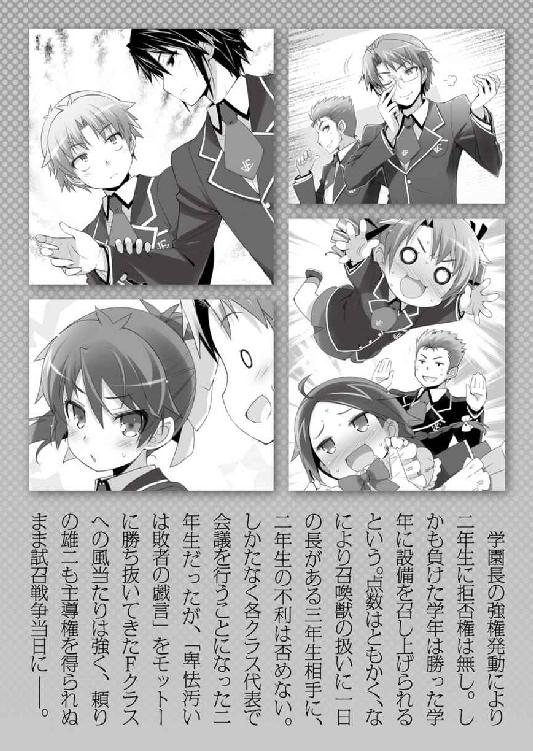
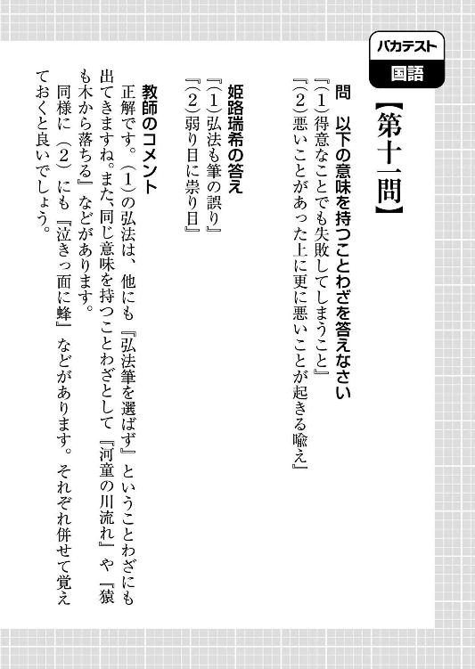
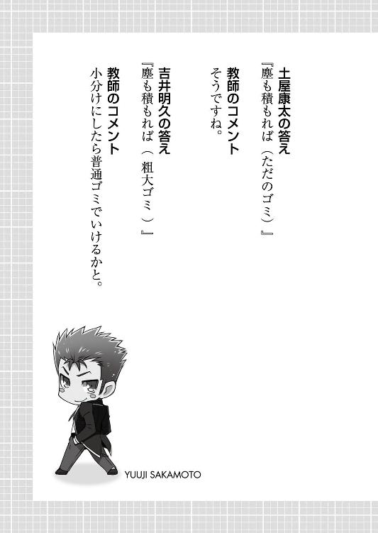
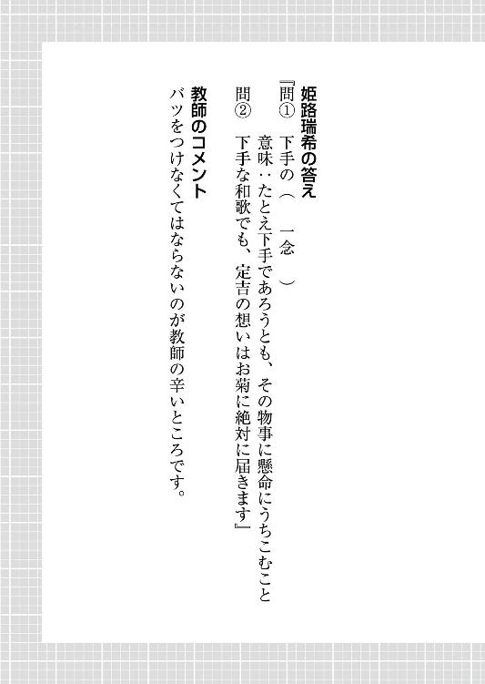
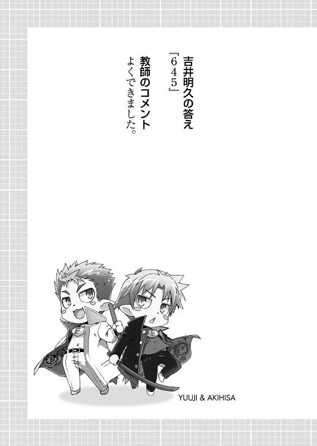

| バカとテストと召喚獣 12 | |
| 井上堅二 | |
| KADOKAWA / エンターブレイン (2014) | |
本作品の全部または一部を無断で複製、転載、配信、送信したり、ホームページ上に転載することを禁止します。また、本作品の内容を無断で改変、改ざん等を行うことも禁止します。
本作品購入時にご承諾いただいた規約により、有償・無償にかかわらず本作品を第三者に譲渡することはできません。
本作品は本文縦組で制作されております。ごらんになるリーディングシステムにより、表示の差が認められることがあります。

「なんだ翔子。なぜ謝る？」
「......雄二のこと、信じていなかったから」
「ンなもん気にするな」
「......ごめんなさい」
「もう謝るなって。......何も言わなかった俺も悪いんだから」
「......わかった」
「よし。そんじゃ、この話はもう忘れて頭を切り替えるぞ」
「......うん。全部忘れる。だから――」
「ん？」
「――だから、いつか聞かせて欲しい。雄二が、本当はどうやって想いを伝えてくれるつもりだったのかを」
「げほっ!? だ、誰が言うかンなこと！」
「......大丈夫。信じて待ってるから」
「いやいや！ 待っても無駄だと――」
「......この勝負に勝って、雄二は考えていた言葉を聞かせてくれるって」
「............」
「......だから、絶対に勝って。私の大好きな雄二」
「............卑怯な言い方だな、翔子」
「......うん」
「その程度で俺が言うとでも思っているのか？」
「......うん」
「まったく。俺も安く見られたもんだな」
「......うん」
「..................気が向いたら、聞かせてやるよ」
「......待ってる。いつまでも」「死ねぇーッ！」
「うおぉっ!? 危ねぇーっ！」
僕の渾身の打ち下ろしの右が空を切る。ちぃぃっ！ 相変わらず勘の良いクズ野郎だ！
霧島さんと無事に合流した僕らは、あの後旧校舎まで下がってひとまずの安全を確保。その後に一部の戦場を放棄して戦線規模を縮小し、小康状態を作り出したところでチャイムが響き、三年生との試召戦争の一日目は終わりを告げた。
つまり今は放課後なので......雄二を始末しても何ら問題はないというわけだ！
「ムッツリーニ。合わせられる？」
「............問題ない」
いくら雄二と言えどもその手は二本。僕とムッツリーニが同時に攻撃したら受けきれようはずがない。
そうやって雄二に向かって攻撃をしかけようとしていた僕とムッツリーニの前に、やれやれと言った感じで秀吉が立ち塞がった。
「二人とも。気持ちはわからんでもないが落ち着くのじゃ」
「え？ どうして止めるの秀吉？」
「............？？？（パチクリ）」
「なぜお主らはそんなに純真無垢な瞳で不思議そうな顔をしておるのじゃ......」
だって、雄二ごときがあの霧島さんといちゃついているんだもの。きちんと○○して××しないとダメじゃないか。
「お前らなぁ......。散々人を焚き付けたくせに、いざとなると随分な言い草じゃねぇか」
姿勢を直しながら、呆れたように雄二が言う。
確かに、霧島さんへの気持ちをちゃんと言葉にするようにけしかけたのは僕らだ。
だけど、
「僕は雄二が幸せになって良いとは一言も言った覚えはない」
「お前は俺にどうなれと言うんだ」
どうなれと言うと、こうなれと言わざるを得ない。
「告白して霧島さんを安心させた後、振られてしまえ」
「それだとあまりに俺が道化過ぎるだろ......」
雄二にはそれくらいがお似合いだと思う。
「ったく。明日からの作戦を詰めてるんだから邪魔すんなっての」
現在の戦力についてまとめていたノートに向き直る雄二。むぅ......。そう言われると邪魔しにくい。
などというやり取りをしている僕と雄二の横に、いつの間にか女子陣がバツが悪そうな顔をして立っていた。
「その......悪かったわね、坂本。アンタの考えも知らずに外野からゴチャゴチャ言っちゃって」
「すみませんでした、坂本君」
と、頭を下げるのは美波と姫路さん。
「ボクからもゴメンネ、坂本君」
「アタシもごめんなさい。言い過ぎたわ」
工藤さんは手を合わせて申し訳なさそうに、木下さんは若干目線を逸らしつつ雄二に謝っていた。
「んな顔するな。別に気にしちゃいねぇよ」
そんな謝罪に、面倒くさそうに手を振って応える雄二。
「ってか、悪いと思うなら全て忘れてくれ。それが俺にとっては一番ありがたい」
「「「それは無理（です）ね」」」
「お前ら......！」
そりゃそうだろう。あんなインパクトのある出来事、忘れたくても忘れられない。
「だいたい、ウチらが忘れる前に二人ともどんどん関係が進んじゃいそうじゃない」
「だよね～。代表のいつものあの調子を見ていると、ね？」
「そうよね。二人を阻むものは何も無いわけだし」
「そうですね。もうあとは......」
「お前ら、そんな目で俺を見るのはやめるんだ」
そう言えばそうだ。霧島さんは言わずもがなで、雄二も満更じゃないと判明した以上、二人を待つ結末は一つ。
「そっか......。雄二は、この（試召）戦争が終わったら結婚するんだね......」
「おいやめろ。それ映画とかだと完全にキャラクターが死ぬ前振りだろうが」
想いを伝えて死んでいく。感動のラストじゃないか。
そんな僕らの会話を聞いて、霧島さんが若干自信なさげに、おずおずと雄二に話しかけた。
「......あの、雄二。この後、良かったら一緒に市役所に......」
「行かねぇよ!?」
どうやら霧島さんは以前から温めていた婚姻届を提出しに行きたいようだ。
「......やっぱり、ダメ......？」
「当たり前だろ。この後の予定もあるし、そんなもんには付き合えない」
「............」
雄二のその一言で、霧島さんはとても悲しそうに目を伏せた。
そして、
「......そう......だよね。私、雄二のことを信じていなかったし、勝手なことをしたし、付き合ってもらえなくても......」
「そっちの〝付き合う〟じゃねぇよ!?」
霧島さんは雄二の気持ちを疑ってしまったことを余程負い目に思っている様子。いつもより発言にキレがない。
雄二もそう思ったのか、頭を掻きながらフォローするように言った。
「ったく。そうじゃなくて、俺が言ったのは〝市役所に行かない〟ってだけだっての」
この言葉を聞き、霧島さんが探るように上目遣いで尋ねる。
「......じゃあ、そうじゃない方の〝付き合う〟はＯＫなの？」
「..................」
なんという見事なカウンター。
雄二はしばし言葉を失った後、霧島さんの視線から逃れるように僕の肩を摑んだ。
「お、おっと明久！ そろそろお前の家で日本史を見てやる時間じゃないか！ 急いで帰らないとな！」
「大丈夫だよ雄二。今日くらいは自分一人で頑張るからさ」
「なに、遠慮するな！ ここからの逆転にお前の点数は必要不可欠なんだからな！」
もはやわざとらしいという表現すら生温いくらい取って付けたように、雄二が話題を変えにかかる。まぁ確かに、こんな皆の目がある前で言えってのは酷だよね。
ちなみに雄二の発言はこの場を逃れようとする噓に聞こえるかもしれないけど、実は本当のことだったりする。前のＡクラス戦を邪魔されて以来、僕は雄二に日本史を教えて貰っていた。
「......わかった。それなら、我慢する」
対する霧島さんの返事はやけにあっさりとしたものだったので、僕は思わず聞き返してしまった。
「え？ いいの、霧島さん？」
いつもの霧島さんからは考えられないし、それにようやく十年来の悲願が達成されたんだ。少しくらい謳歌しても罰は当たらないだろう。
「......いい。試召戦争でも、私はたくさん迷惑をかけたから。我慢は当然のこと」
「うーん......。霧島さんがそう言うならいいけど......」
今は放課後なんだし、気にしなくてもいいような。
「......それに、私はもう焦らないって、決めたから」
「？ 焦らない？」
「......うん」
霧島さんは小さく頷いてから、
「......雄二のこと、信じてるから」
そう言って、微かにはにかみながら微笑んだ。
「............（ゲシッ）」
「痛ぇっ！ 何しやがる明久！」
「............（ゲシッ）」
「ムッツリーニまで!?」
「幸せ税というやつじゃな」
こんな蹴り一発じゃ到底足りない税金だけど、今はこれくらいで勘弁してやろう。霧島さんの笑顔に免じて。
「ところで坂本君。肝心の試召戦争の方は何か考えがあるのかしら？」
真面目な性格の木下さんが、頭を切り替えて雄二に問いかける。
霧島さんも我慢すると言っているんだ。僕もいつまでも雄二をからかっていないで明日以降の試召戦争に集中しよう。
「勿論だ」
木下さんの問いに対して、雄二が即答する。
「何のアイデアも出してないボクが言うのもなんだケド、ホントに大丈夫なの？」
「......だいぶ戦力が減ってる」
工藤さんと霧島さんが不安に若干表情を曇らせる。けれども、雄二はそんな不安を吹き飛ばすように答えた。
「何の問題も無い。なぁお前ら？」
「ん。まぁ、雄二がやれるって言うのなら大丈夫じゃないかな？」
「考えてみれば、ワシらがお主らＡクラスと勝負する時は今の状況なんかより余程厳しい戦力差じゃからのう」
「............いつも通り」
「はい。勝負はここからだと思います」
「こんな程度でウチらが負けるもんですか」
僕らはＦクラスだ。逆境には慣れている。むしろ今回は慣れない平等な戦力からのスタートのせいで調子が出なかったんじゃないかと思えるくらいだ。
「ってなわけだ。少しは安心したか？」
そう雄二が目配せすると、
「何て言うか、不思議よねあなたたちって」
「負けてる時の方が生き生きして見えるよね～」
「......頼もしい」
Ａクラスの面々はどこか楽しそうに笑った。
「それじゃ、ボクたちは坂本君の指示に従うよ」
「そうね。何でも言って頂戴」
「......頑張る」
少し時間はかかったけど、これで雄二が本来の力を発揮できる。もう三年生にいいようにはやられない。ここからは僕らの反撃の番だ。
「見てろ。野郎に一発カマしてやる」
雄二のその一言で三年生との試召戦争の一日目は幕を下ろした。
「それで、今日は皆にどんな指示を出したの、雄二？」
日も変わって三年生との試召戦争二日目。
各クラスの代表が集まっての作戦会議から、本拠地としている旧校舎の三‐Ｄ教室へと帰ってきた雄二は、僕の質問に対してこう答えた。
「特に大した指示は出していない。Ｆクラスを敵の攻め手が比較的厳しい場所に放り込んで、Ｄクラスは男女で分けて適当に前線に送った。あとは全体的に下がらせて戦場を狭くしたくらいだな」
どうやら大がかりな作戦指示は出していない様子。
それを聞いて、近くにいた木下さんが重ねて問う。
「坂本君。それだけで大丈夫なの？」
「ああ。今のところはな」
ということは、後で何かの作戦を仕掛ける為に、今は準備をしているか様子を見ているところなのだろう。
「............」
「なんだ木下姉。不満そうだな」
「不満ってわけじゃないけどね」
木下さんは起死回生の一手を期待していたようで、雄二の指示に少しがっかりしているみたいだ。
そんな木下さんに雄二が説明を続ける。
「追い込まれて苦し紛れに打った手は失敗しやすいからな。今は一方的に押されている状況を地力で押し返す必要がある」
「地力って、アタシ達と三年生なら三年生の方が強いんじゃないの？」
「それは否定しないが、その実力差以上に今は押されているんだ。まずはその状況をなんとかする」
「なんとかするって、それが出来たらこんな状況には――」
「だから指示を出した。本来の実力を発揮できるようにな」
雄二の指示はあくまでも切っ掛け作り。あとは自然な状況に戻るのを待つという感じらしい。
「指示って言っても、大したことは言ってないんじゃ」
「その辺はまぁ、見てりゃわかるさ」
「............。そこまで言うのなら、黙って見てるけど......」
木下さんはまだどことなく納得がいっていないようだけど、それ以上質問を重ねることはなかった。
代わりに今度は美波がやってきて、別の質問を雄二に投げかける。
「そう言えば坂本。作戦会議では根本に何か言われなかったの？」
初日の作戦会議で雄二が辛酸を舐めさせられた原因であるＢクラス代表の根本君。彼が今日も何かを企んでいないのかと美波は心配してくれているようだ。
「ああ。それなんだがな、なぜか不思議なことに――」
「......いなかった」
雄二の言葉を引き継いで霧島さんが答える。
「え？ いなかったって、あの根本が？」
「（コクリ）......少なくとも作戦会議には来ていなかった」
「あら、そうだったの？ それは代表にも坂本君にも好都合だったわね」
木下さんがそう頷くのに対して、
「ふぅん......。いなかった、ねぇ......？」
なぜか美波は僕らに訝しげな視線を送ってきた。
「何かな美波、その目は」
「俺たちは何もしていないし、知らないぞ」
「............冤罪この上ない」
「そんな目を向けられるのは心外じゃな」
美波はそんな僕らの弁明を無視して教室内を見回すと、
「このあたりかしらね」
掃除用具入れに当たりをつけて近寄っていった。
そして、その扉に手をかける。
ガチャッ。 ......ドサリ。
開け放たれた用具入れから、簀巻き状態の根本君が転がり出てきた。
「それで、何か言い訳は？」
「「「明久が勝手に」」」
「ちょっと待ていっ！」
なぜこういう時は三人とも僕の名前を挙げるのか。
「そうじゃなくて、不運な事故だったんだよ。僕が歩いていたら偶然躓いて根本君の身体を押さえ込んじゃって、たまたまそこを通りかかった雄二の拳が不運にも根本君の鳩尾にめり込んじゃって、ロープで縛る練習をしていたムッツリーニと秀吉が運悪く」
「アキ。偶然とかたまたまとか言えば何でも通るっていうその考え方をやめなさい」
どんな話にも正当性を持たせる万能語だと思っていたけど、多用するとその効果は薄れるようだ。
「それにしても、木下まで参加していたなんてね。ちょっと驚きだわ」
「んむ？ そうじゃろうか」
確かに美波の言う通り、秀吉はこういった不道徳な行為に参加することは少ない。
「雄二はワシにとって大事な友人であり、仲間じゃ。その雄二に不当な辛苦を与えたとあらば、相応の報いをくれてやるのは当然じゃろ」
とは言え、秀吉だって聖人じゃない。仲間を傷つけられたら怒るし、場合によっては強硬手段を取ることもある。今回の根本君の行動は秀吉にとって簀巻きにされても仕方のないものだったというわけだ。
「なに、気にするな。試召戦争のルールには味方を昏倒させてはならない、なんてものはないからな」
「うんうん、その通り。こんなのはせいぜいグレーと黒の中間程度だよ」
「せめて白と黒の中間にしておきなさいよ......」
悪いコトをしたという自覚はある。けど、それでも譲れないものがあったというだけだ。
なんていう話をしていると、美波が教室内を見回して言った。
「ところで、瑞希の姿が見えないけど」
「......愛子もいない」
「久保君もいないわね」
その疑問に雄二が答える。
「ああ。あの三人にはＦクラスの連中の後方で待機してもらっているからな」
「......何の為に？」
「脱走兵の首を刈る為だよ、きっと」
「何を言ってるのよ吉井君は......。そんなことあるわけ」
「それも目的の一つではある」
「あるの!?」
戦争慣れしているＦクラスの皆でも、全力を費やさないと生き延びられないような場所に送り込んだと聞いている。脱走兵が出ても何の不思議もない。
「酷い運用をするわね。クラスメイトなのに......」
「良いことを教えてやるよ木下姉。Ｆクラスの連中を使うのなら、遠慮は無用だ。１００％生還不能だと思える状況を更に悪化させてから何も知らせずに飛び込ませるくらいで丁度良い」
そして脱走兵は見せしめに首を刈る。素晴らしい恐怖政治だ。
「あのねぇ......。そんな酷いことをして、やられた人と補充試験の時に鉢合わせして襲われても知らないわよ？」
「無用な心配だ。補充試験の会場と戦死者が送られる補習室は全くの別物だ」
「あ、そう言えばそうだったわね」
試召戦争でやられたことがあまり無いからだろう。木下さんは補充試験と補習室送りをごっちゃにしていたようだ。
「ついでに言えば、今回は人数が人数じゃからの。補習室送りになっても同じ教室になるとは限らん」
加えて厳しい監視の目がある。仕返しはおろか、私語の一つも許されない。
などという説明が終わったところで、丁度授業開始のチャイムが鳴り始めた。
「っと。試召戦争再開だな。お前らもいつでも出られるように準備だけはしておいてくれ」
「「「了解」」」
こうして、三年生との試召戦争二日目が幕を開けた。
☆
「ほ、ホントに押し返してる......」
旧校舎の最上階から戦況を見て、木下さんが目を丸くしていた。
「驚くことはないだろ。押し返すってよりは、一方的に押されなくなってきたってだけだけなんだからな」
雄二曰く、状況が好転しているというわけではないらしい。戦力差は依然大きなままというわけだ。
「それでも充分驚くわよ。アタシや代表があんなに戦力配分を徹底しても一度崩れた戦線は戻らなかったのに......」
木下さんのそんなボヤきを聞いて、雄二が霧島さんの書いてくれた戦力表を見ながら答える。
「戦果の大部分は追撃によって生まれる、って話は知ってるか？」
「知らないけど......意味はわかるわ」
「現代・近代はともかく、白兵戦が主だった頃の戦争の被害ってのは、敗走中に受けた追撃が大きな割合を占めていたらしい」
雄二の言っていることは僕にもわかる。正面から勝負をしている時と、撤退しながら勝負する時。どっちがキツいかは実体験で知っている。明らかに後者だ。
「序盤の正面切っての勝負でお前らが取った作戦は正しい。だからこそ、戦況は均衡......いや、二年側が少し押してさえいた」
「......じゃあ、何が悪かったの？」
「根本君じゃないかな」
「吉井君。それは置いといて」
どうやら木下さんたちは根本君の行動によって均衡が崩された後の対処方法について知りたいらしい。勉強熱心なところは流石Ａクラスといったところだ。
「......盛り返そうとして主戦力を投入したところ？」
「いや、それも間違っちゃいないだろ」
取り返しがつかなくなる前に、戦力を一気に注ぎ込む。それは正しい判断だ。
「ただ、あの時は髙城の野郎が一枚上手だった。向こうは向こうでこっちの主戦力と同等の戦力を注ぎ込んできたってわけだからな」
本当にあの先輩はいやらしい。あんなにバカっぽいのに。
「坂本君。そろそろ結論を知りたいんだけど」
「ああ。お前らは戦力を注ぎ込んでも押し返せないとなったら、戦場を限定するために撤退を始めただろ？」
「......うん」
「その時の対応がまずかったんだよ」
「まずかったって、どうして？ 点数の高い人でカバーしながらの撤退って、理に適っているじゃない」
雄二はさっき、「戦果の大部分は追撃によって生まれる」と言った。それなら強い人を最後尾に置いて守りながら撤退するのは正しいように思える。
但し......
「点数の高い連中ってのは、負け慣れていない分撤退が下手なんだよ」
下がりながらの勝負というのは、言うなれば防御だ。目の前の相手を打ち倒すのではなく、味方が逃げる時間を稼ぎつつ自分も逃げる。これは点数の多寡よりも慣れが物を言う行動だ。
「そこで一気に追撃を受けて崩れたせいで、皆が三年に呑まれちまった。だから戦力の差以上に押されてたんだよ」
結局のところ、この試召戦争っていうのはテストの点数を使った試合のようなものだ。テストを受けている時は自分との勝負って感じだけど、これは違う。相手がいて、勝負をする。当然、相手に呑まれてしまえば不利になるわけだ。
「そっか。だから負け慣れているＦクラスの皆を前に出したのね」
「そういうこった」
「じゃあ、Ｄクラスの男女を分けたのはどうして？」
「あのクラスの男子は女子に抑圧されていたし、女子は気が強くて空気を読まないからな。それぞれが三年に呑まれない条件は満たしていたんだよ。それに、あのクラスの戦争経験はＦクラスの次に多いしな」
本来なら雑魚であるはずのＦクラスとＤクラスが前線を支えるという状況。これは点数以外の部分に依っている。
「なるほど......。それで、そうやって下位クラスが渡り合っているのを見たら、他の皆も落ち着きを取り戻せるものね」
「......私には思いつかなかった」
感心したように雄二を見る木下さんと霧島さん。こういう時のコイツは本当に頼りになる。
「俺は大したことは何もやってないけどな」
「アタシから見たら充分よ」
「むしろ作戦と言うのなら、それは今から始まることだ」
「？ どういうこと？」
「そいつは見てのお楽しみだな」
そう言ってから雄二は席を立ち、前方の窓から戦況を確認した。
「よし、良い感じだ。明久、そっちの準備はいいか？」
「オッケー」
後方の窓に備え付けられたカーテンを手に取り、窓を開ける僕。
「いくぞ。３、２、１......ＧＯ」
「ほいっ」
雄二の指示に合わせて窓の外にカーテンを出す。レールに繋がれたカーテンは、風に吹かれたようにたなびいて、窓の外に大きく広がった。
そして、その直後に一条の熱線が戦場を縦断する。
「え!? 何をしたの吉井君!?」
「僕は合図をしただけ。やったのは――今のを見る限り、久保君じゃなくて姫路さんの方かな」
久保君の力は確か、風の刃みたいなやつだった。見覚えもあるし、今の攻撃は姫路さんの召喚獣がやったってことで間違いないだろう。
「......凄い数を巻き込んでる」
霧島さんがぽそりと呟く。
彼女の言う通り、姫路さんの召喚獣が放った火線は多くの敵を巻き込んでいた。
「凄いわね......」
「姫路は実質、俺たち二年の二番手だからな」
「そっちも凄いけど、私が言っているのはあの状態に持って行った布陣の方よ」
木下さんは火線の走った箇所をじっと見ている。被害を受けた敵は相当数にのぼるだろう。つまり、うまく敵を一カ所に集めることに成功していたということになる。
「......私たちの時は警戒されてたのに」
「坂本君。どうやってあんなに敵を密集させたの？」
「ああ。それもＦクラスならではの特性なんだがな――」
雄二が説明している途中、窓の外から声が響いてきた。
『坂本ぉー！ テメェ、俺たちごとなぎ払う気だったな!?』
『何が「お前らには当たらないようにする」だ！』
『思いっきり直撃コースだったじゃねぇか！』
「「..................」」
「――Ｆクラスは、囮として捨て石に使っても戦力的には惜しくもなんともない」
「............坂本君。アタシには、貴方がやっていることと根本君のやったことの間に何の違いも見出せないんだけど............」
木下さんが呆れ顔で言う。
雄二はその指摘に気後れすることなく、堂々と言い放った。
「そりゃそうだ。俺も根本も、本質的には同じ考えに基づいて動いているんだからな」
同じ考えとは則ち、〝どんな手を使っても勝つ〟というものだ。そういった意味では、雄二と根本君の間に大きな差は無い。
ただ、それでも二人には決定的な違いがある。それは、〝勝つ〟という言葉の持つ意味だ。根本君にとっての勝利とは、根本君個人の勝利。対して雄二にとっての勝利とは、チームの勝利。そこに決定的な違いがあるからこそ、僕たちＦクラスメンバーは何度騙されても雄二の指示に従う。それがチームの勝利につながると信じているから。
「なんか、変な連帯感を持ってるわよね、貴方たちって」
「そうか？」
「そうよ。その証拠に、結局皆被害に遭ってないじゃない」
「......信頼されてる」
囮にされると信じられていたというのは、つまるところ互いに何の信頼も寄せていないということになるのではなかろうか。
「さて。タネ明かしはそんなところで......明久」
「ん？ 何？」
「姫路に戻ってきて補充をするように伝えて、お前はそのまま前線で敵を引きつけながら戦ってこい」
「わかった。伝令に行って姫路さんと一緒に戻ってくればいいんだね」
「いや。戻ってくるな。お前は留まって戦え」
「絶対にイヤだ」
さっきあんな説明を聞かせておいて、どの口でほざくか。
「なに。そう心配するな明久。姫路は点数を消費したんだ。もうあの火線は補充が終わるまで撃てないさ」
「二の矢として久保君がスタンバってるのが見えるんだけど!?」
僕の場合、日本史以外なら掠っただけでも補習室直行コースだろう。
「我儘を言うな明久。島田も秀吉もムッツリーニもそれぞれの持ち場で頑張っているというのに、お前だけがここでのうのうとしていて良いわけがないだろう？」
「雄二。それは正論のようで色んなところが間違っていると僕は思う」
明らかに犠牲にする気満々じゃないか。
などと嫌がる僕に、木下さんが諭すように言う。
「吉井君。落ち着いて考えてみなさいよ。坂本君の言う〝作戦〟には貴方の力が必要なんでしょう？ だとしたら、貴方を囮にするわけがないじゃない」
む......。言われてみれば、確かにそうだ。
「......雄二は素直じゃないから」
「余計なことを言うな翔子」
雄二としては僕を特別扱いするのが気に障ったということだろうか。......まぁ、そういう感覚は理解できなくもないけど。
「そういうことなら、今回だけは霧島さんに免じて騙されてあげるよ」
「けっ。余計なことを言ってないでさっさと行きやがれ」
「へいへい。りょーかい」
僕は可愛げのない雄二を一瞥して、皆が戦っている校庭へと駆けていった。
☆
「..................」
バッサバッサ、と旧校舎四階の窓からカーテンが風にたなびいているのが見える。
『『『避けろぉぉ――っ！』』』
「あん......の、ゲス野郎がぁぁ――っ!!」
そこら中から響くＦクラスメンバーの声。
僕は何も考えず、喚び出したばかりの召喚獣をとにかく真横へと全力で跳ばせた。殺す......！ 雄二のヤツ、この戦争が終わったら絶対にブチ殺してやる......！
直後、幾重にも重なった風の刃がそこらの敵を巻き込んで通過していく。
間違いなく久保君の召喚獣が持つ金の腕輪の能力だ。
『お。来たか吉井！』
『お前も騙されたのか同志よ！』
『気をつけろ！ 注意は正面の敵に２、後ろの味方に８の割合で振っておけ！』
雄二が一番厳しい戦場と言っていただけあって、Ｆクラスの皆もかなりボロボロになっている。なぜか背中の損傷が多い件に目を瞑れば、最前線で戦う勇士に見えたかもしれない。
「やぁ、吉井君。やっぱりキミは大丈夫だったみたいだね」
警戒している背後から声をかけられる。
「あ、久保君」
そこにいたのは、さっき暴威を振った久保君とその召喚獣だった。
「戻って今使った点数を補充しなくても良いの？」
「うん。僕は最前線で思いきり暴れるよう、坂本君に言われてね」
暴れるという言葉は久保君のイメージに合わないかもしれない。ただ、それはあくまでも久保君自身の話だ。
「じゃあ、行ってくるよ吉井君」
久保君の使役する召喚獣がデスサイズを構えて歩を進める。
『野郎！ 補習室に送ってやらぁ！』
『この二年坊が！』
比較的傷の浅かった敵が久保君の召喚獣目がけて飛び込んでくる。
久保君の召喚獣はその攻撃を避けもせず、何の小細工も無しにただ真一文字に大鎌を振った。
『３‐Ｄ 藤島武雄 ＶＳ ２‐Ａ 久保利光
国語 ＤＥＡＤ ＶＳ ６３２点 』
『３‐Ｄ 力石真琴 ＶＳ ２‐Ａ 久保利光
国語 ＤＥＡＤ ＶＳ ５９２点 』
センター試験準拠のため、現国と古典・漢文が総計された点数が表示される。
そして召喚獣の方はと言うと、敵のうち一人が何も出来ず両断され、もう一人は攻撃を辛うじて当てたところで切り裂かれた。その為、回避をしなかった久保君の召喚獣も若干のダメージを負ったけど、相手は二人とも補習室送りが確定した。
これが久保君の戦い方だ。相手の攻撃を避ける、フェイントを入れて攻撃を当てる、そういった駆け引きは一切存在しない。どちらが先に攻撃を当て、どちらが先に倒れるか、という単純な力比べだ。
「僕は吉井君のように上手く召喚獣を使うことができないからね」
前に話した時、久保君はそう言って笑っていた。けど、これは僕には真似できない戦い方だ。操作や小細工を全て捨てて、点数を高めて召喚獣の力を上げることに特化するというスタイル。敵対しているとかなりの脅威だったし、味方となっている今はとても頼もしい。
『調子に乗るなよ！』
『左右から挟み込むぞ、島村！』
二人の三年生が再び久保君の召喚獣に挑む。さすがは三年生というところだろうか。ああやって来られると、久保君のやり方じゃ片方しか対処できない。
それが解った上で尚、久保君は揺るがない。
「恥ずかしながら、僕にはこんなやり方しか出来ませんので」
右から来た敵に刃を向け、左側の相手を完全に無視する久保君。
自分が狙われたと知った右側の相手は、即座に防御を固めに入る。
久保君の召喚獣はそれに構わず、大きく鎌を振りかぶった。
『３‐Ｃ 島村正 ＶＳ ２‐Ａ 久保利光
国語 ２１５点 ＶＳ ５９２点 』
防御に専念された為、致命傷は与えられなかった。でも、充分なダメージだ。
そして、左側の相手はというと。
『て、テメェ......！ 確か、二年の......！』
「あ。先輩、僕のこと知ってるんですか？ 照れるなぁ」
『３‐Ｃ 松尾弘 ＶＳ ２‐Ｆ 吉井明久
国語 ２３１点 ＶＳ １４２点 』
僕の召喚獣と鍔迫り合いを繰り広げていた。
「え？ 吉井君......？」
久保君が驚いたように僕と召喚獣を見ている。
彼はその戦い方の特性上、周囲の味方を巻き込まないように先頭に立って一人で戦ってきた。
けど、今は違う。
「心配要らないよ久保君。僕ならキミのフォローができる」
召喚獣の操作に慣れている僕なら、久保君の動きに合わせることができる。一緒に戦うことができる。
「あと、Ｆクラスの皆もね」
『何言ってんだ吉井!?』
『俺たちに死ねと!?』
Ｆクラスの皆だって試召戦争の経験は豊富で、操作に慣れている。その上巻き込まれたところでこちらの心は痛まないのだから、これほど久保君のお供として相応しい連中はいないだろう。
「......ありがとう、吉井君。Ｆクラスの皆」
お礼を言われることなんて何も無い。僕らは今、戦友なのだから。
「これで僕は前だけを見ていられる」
久保君は顔を綻ばせた後、キッと前を向いて召喚獣を突撃させた。
さて、それじゃ――
「皆、僕らも行くよ！」
『『『仕方ねぇなコンチクショウ！』』』
ＡクラスとＦクラスが組んで相性が良いなんて、人と人との繋がりは不思議なものだと思う。
☆
久保君が獅子奮迅の働きをしてくれたおかげで、最も厳しいと思われていた最前線が安定してきた頃。
『向こうにあの吉井がいる！ 頼むぞ夏川、常村！』
『あそこを突破できたら一気に校舎に駆け込めるんだ！』
『あのクソガキをぶっ飛ばしてくれ！』
そんな三年生達の会話が聞こえてきた。
「よぅ、吉井」
「そっちは久保とか言ったか？ 随分調子に乗ってるみたいじゃねぇか」
「く......。常夏コンビか......！」
そして、僕らの前に立ちはだかる、因縁浅からぬ三年生の二人組。常夏コンビこと、常なんとか先輩と夏なんとか先輩だ。
「いつぞやお世話になった先輩方ですね」
「お。俺たちのことを知っているみたいだな」
「感心感心」
「はい。忘れませんよ。肝試しでスカートを穿いていた人と木下君にポエムを読んだ人ですよね？」
久保君の一言で僕の脳裏に忘れていたかった悪夢の光景が蘇り、吐き気が全身を支配する。
でも、僕は必死に頭を振って、吐きたいという意識を吹き飛ばした。大丈夫！ 僕は絶対に吐き気なんかに屈したりはしない！
「御託は無用！ 勝負ですゲロ袋先輩！」
「吉井君。吐き気が辛いのならトイレに行ってくるといい」
ダメだ。エチケット袋が欲しいという意識があまりに正直すぎる。
「ホンっっっ当に、テメェは腹が立つ後輩だな、吉井よぉ......！」
「いっぺん上下関係ってのを叩き込んでやらねぇとなぁ......！」
常夏コンビが額に青筋を浮かべつつ、僕らを見据えて喚び声を上げた。
「「試獣召喚！」」
『３‐Ａ 常村勇作 ＆ ３‐Ａ 夏川俊平
国語 ４２３点 ＆ ４０７点 』
相手の点数を見て、久保君の眉がぴくりと動く。
あの二人、腐っても流石はＡクラスだ。以前理系だと言っていたのに、国語でも結構な点数を叩き出している。
「久保君。いける？」
「まぁ、やってみるよ」
久保君の点数は既に腕輪の使用やここまでの戦いでかなり消耗している。この二人を相手にするのは正直厳しいだろう。
「夏川！ 賢そうな方からやんぞ！」
「ＯＫだ常村！」
「気をつけるんだ吉井君。彼らの狙いはキミのようだ」
「やめて久保君！ 下手な同情は罵倒より辛いから！」
常夏コンビが久保君に勝負を挑む。
久保君の召喚獣は、相手が誰であろうとも関係無い、とでも言わんばかりに先ほどまでとなんら変わらない構えを取った。
飛び込んできた常村先輩の召喚獣目がけて、久保君が得物を大きく薙ぐ。相手はそれを下からかち上げるように剣で叩き、攻撃を逸らした。
そして、もう一人の相手である夏川先輩が低い体勢でくぐるように召喚獣を走らせる。
「見え見えなんだよ、メガネ野郎！」
気勢をあげて剣を突き出す夏川先輩の召喚獣。
「させませんよ、エチケット先輩！」
僕はそこに横から木刀を叩き付けて邪魔をした。
「吉井君！」
「あいよ、久保君っ！」
そのまま久保君の合図に合わせて、身体を投げ出すように召喚獣を伏せさせる。
その上を久保君の大鎌が風切り音を唸らせつつ、大きく円を描いて通過していった。
「ぅ......ぐっ！」
「野郎......ッ！」
今度は対処しきれずに持っている武器で攻撃を受け止め、そのまま弾き飛ばされる常夏コンビの召喚獣。
「続けて行きます」
そこに三度大鎌が襲いかかる。常夏コンビの二人は大きく跳び退って距離を取った。
「逃がすかっ！」
体勢を立て直した僕の召喚獣が着地姿勢になっている夏川先輩の召喚獣に木刀を振り下ろす。相手は体勢のせいで完全には避けきれず、肩の端を木刀が掠めていった。
『３‐Ａ 夏川俊平 ＶＳ ２‐Ｆ 吉井明久
国語 ３８９点 ＶＳ １４２点 』
ほんの少しダメージを負った点数が表示される。
「吉井......！ つくづくテメェは厄介な野郎だな......！」
「褒め言葉と受け取っておきますよ、センパイ」
夏川先輩は忌々しげに舌打ちをして僕を睨み付けた。
「夏川！ よそ見するな！ 来るぞ！」
「ッ!? クソがっ！」
僕らが憎まれ口を叩き合っている間も久保君は止まらない。防御を考えず、ただひたすらに大鎌を振う。
「センパイ。僕のことを忘れちゃイヤですよ」
久保君に注意を向けようとした夏川先輩の集中を乱すよう、殊更に大きな動きで牽制を入れる。鬱陶しそうに僕の攻撃を弾く夏川先輩の召喚獣。僕の召喚獣はその動きに合わせるように大きく跳び、夏川先輩本人の視界を遮った。
直後、久保君の大鎌が夏川先輩の召喚獣を襲う。
「な......っ!? ウゼぇっ！」
間一髪で剣を滑り込ませてガードする夏川先輩。僕は自分の召喚獣を素早く移動させると、久保君に攻撃を加えようとする常村先輩の召喚獣を牽制させた。
夏川先輩が奥歯を嚙み締めている。
「苛つくぜ......！ 吉井！ 男らしくテメェの力で戦いやがれ！」
「落ち着け夏川！ 向こうのペースに巻き込まれるな！」
今は僕が攻撃をするべきじゃない。久保君の力を最大限に活かすことこそが最善のやり方だ。
「るせぇ常村！ こんなチャチい戦い方なんざ、正面から潰してやらぁ！」
「夏川......、くそっ！」
夏川先輩ががむしゃらに飛び込んできて、常村先輩がそのフォローに入る。
僕は久保君の補佐に徹し、常夏コンビと拮抗した勝負を続けた。
そんな状態を少し続けたところで、後ろから聞き慣れた声が響いてくる。
「久保よ、交代じゃ！」
「ウチと木下が入るから、久保は補充に行って頂戴！」
やってきたのは美波と秀吉。久保君には腕輪の力を使ってもらうという仕事もあるので、ここでずっと戦わせるわけにはいかないようだ。
「島田さんに木下君か。それじゃ、交代させてもらおうかな」
「「試獣召喚！」」
久保君は二人が召喚獣を喚び出したのを確認すると、旧校舎への方へと去って行った。
『２‐Ｆ 島田美波 ＆ ２‐Ｆ 木下秀吉
国語 94点 ＆ ２５７点 』
「............美波。いくらなんでもその点数は......」
「う、うるさいわねっ！ だから木下と一緒に来たんでしょうが！」
とは言え、実は美波もかなり国語の点数が上がっていたりする。一年生の頃は現国と古典を合わせて30点に満たないとかもザラだったのだから。
「舐めやがって......！ あの野郎の攻撃力がなけりゃテメェらなんざ相手にならねぇんだよ！」
久保君の撤退に腹を立て、夏川先輩が再び突撃してきた。今度は常村先輩もフォローに回らず、美波に狙いをつけて召喚獣を走らせる。さっきまでの対久保君シフトから攻撃の形を変えたようだ。
「くたばれやぁっ！」
もはやチンピラと表現しても差し支えのないかけ声と同時に夏川先輩の召喚獣が攻撃をしかけてくる。僕の召喚獣はその攻撃をいなすと、さっきまでとは違う渾身の力で木刀を振り下ろした。
「ン......なっ!?」
こちらの全力攻撃は想定外だったようで、木刀を受け止めきれずに体勢を崩す夏川先輩の召喚獣。僕の召喚獣はその隙を見逃さず、下から顎を蹴り上げた。
「て......め......ぇッ!?」
そのまま動きを止めず、力任せに体当たりをしてから、倒れた相手の頭部目がけて木刀を突き立てる。敵はその攻撃を辛うじて武器で防いでいた。
『３‐Ａ 夏川俊平 ＶＳ ２‐Ｆ 吉井明久
国語 ３４２点 ＶＳ １４２点 』
今のやり取りで減った点数が表示される。
「秀吉、美波！」
「うむ」
「オッケー！」
そこに秀吉と美波の召喚獣も駆け寄り、それぞれの得物を振り下ろす。僕の召喚獣に転ばされている夏川先輩の召喚獣はそれを避けることができない。
「させるか！」
当然そんなことはさせまいと、常村先輩の召喚獣が追いすがってくる。
「二重召喚！」
僕は二体目の召喚獣を喚んで、常村先輩の邪魔に入った。
「ウゼぇっ！」
常村先輩が二体目の召喚獣を振り払うように得物のハルバードを大きく薙ぐ。
僕の副獣はそれを屈んで回避。続いて差し込むように足元に蹴りを放った。
「この野郎......！」
ダメージは負っていないけど、常村先輩の召喚獣の足が止まる。
『３‐Ａ 夏川俊平 ＶＳ ３‐Ｆ 島田美波 ＆ ３‐Ｆ 木下秀吉
国語 ２０１点 ＶＳ 94点 ＆ ２５７点 』
その間に美波と秀吉が夏川先輩に攻撃を加えた結果が表示された。防御はされたものの、かなりの点数を削ることに成功している。
「クソがッ！ 久保がいなくなった途端、人数頼みか！」
夏川先輩が怒りに震えて顔を赤くしている。
「いい加減冷静になれ夏川！」
「るせぇっ！」
頭に血が上って周りが見えなくなっている夏川先輩。
「聞け、夏川！」
そんな先輩の肩を摑み、常村先輩が強い語調で言った。
「この状況じゃ、俺たちは吉井に勝てない。補充しに一旦退がるぞ」
「ぐ......！」
夏川先輩が表示された自分の点数を見て唇を嚙む。
そして奥歯をギリッと嚙み締めると、
「吉井。今までの借り、この試召戦争で絶対に返してやる......！」
そう言って他の人と交代して新校舎の方へと去って行った。
交代した敵は距離を取ってこちらを警戒しているようなので、これ幸いと僕らも軽く息を吐く。
「ふぅ......。とりあえず、なんとかなったね」
「そうみたいね」
向こうにとっても常夏コンビはとっておきの戦力だったみたいで、撃退したおかげでかなり敵の攻め手は緩くなっていた。
「それでアキ。坂本からの作戦指示があるんだけど、ちょっといい？」
「あ、うん」
美波が敵に聞こえないよう声を潜めて周囲に目をやる。
それを見た秀吉がこんな提案をしてくれた。
「ならばついでじゃ明久。補充をするほどの余裕はないが、お主と島田も一旦下がって休憩してはどうじゃ？」
相手に作戦が聞こえてはまずいのでその用心も兼ねて、とのこと。召喚獣操作に集中していたおかげで少し疲れていたので、この提案は正直ありがたい。
「じゃ、お言葉に甘えさせてもらうよ」
「ウチは今来たばかりなのに、悪いわね木下」
「なに。気にするでない。その分後でしっかり働いてもらうからの」
代わりに待機していたＤクラスの人たちに来てもらって、僕と美波は一旦奥へと引っ込むことにした。
☆
「それで美波。作戦って？」
最前線を離れて、旧校舎の玄関あたりで話を切り出す。ここなら三年生に聞かれるような心配はないはずだ。
「えっと、例の瑞希や久保が腕輪を使う合図があるでしょ？」
「うん」
「次にアレが出た後坂本も前線に出てくるから、合流できるように召喚獣を出さないで手前の方で待機しておくように、だって」
ということは、戦況もある程度落ち着いてきたから次の作戦に移ろうとしているってことか。何をやるかは知らないけど楽じゃないことは確かだ。ここからはあまり点数を消耗しないように気をつけていこう。
「了解、美波」
「きちんと伝えたからね。勝負に没頭して忘れないでよ？」
「大丈夫だよ」
腕輪の攻撃が来たらイヤでも思い出すだろうし。
「それじゃ、作戦も聞いたし秀吉のところに戻――」
「待って、アキ」
玄関から再び戦場に戻ろうとした僕の腕を美波が摑む。なんだろう？
「他にも何か伝言があるの？」
「あ、えっと、そういうわけじゃないんだけど」
「？ じゃあ何？」
「えっと、その、なんていうか、その、ね？」
さっきまでの態度から一変して、急にまごまごし始めた。どうしたんだろう。美波らしくもない。
「ああもう......っ。言うって決めたんだから、ここで躊躇ってどうするのよ......！」
今度は僕に背中を向けてブツブツ言い出した。何か余程言いにくいことでもあるのだろうか。
「だいたい、黙っていてもあの先輩からバラされちゃうわけだし、そんなことになるくらいなら......」
「あのさ、美波。よくわからないけど、急いでないなら後で落ち着いてからでも話を聞くけど」
「う、うん。それは元々ウチもそう思っていたのよ。大事な勝負の最中だし、変なこと言ってアキが集中できなくなったらイヤだし......」
そう思っていながらもこうして口にしているということは、何かのっぴきならない事情のある話ということなんだろうか。
「でも、人から伝わるよりも先に、せめてウチから約束しておかないと、絶対に後悔するから......！」
何かを小声で呟くと、美波はようやく決心が付いたようで、こちらを向いて若干伏し目がちになりながらもこう言った。
「あのね、アキ」
「あ、うん。なにかな？」
「ウチね、この戦争が終わったら、アンタに大事な話があるの」
「............ほほぅ」
なぜだろう。この台詞を聞く限り、僕か美波のどちらかはこの戦争で命を落とす気がしてならない。
「あのさ、美波。それって映画だと――」
どちらかが死ぬ前振りだよね、と言おうとしたところで、
「............」
美波の妙に真剣な表情に気圧されて、その言葉を飲み込んだ。
「えっと......大事な話、って？」
「すごく大事な話。......ウチにとって、何よりも大切な」
それが噓偽りのない言葉だというのは美波の表情が雄弁に語っていた。
そういうことなら僕としても真剣に答えよう。
「わかった、約束する。絶対に忘れないよ」
「うん。お願い」
美波がここまで真剣な顔をしているんだ。余程大事な話なのだろう。試召戦争の最中に話して僕を動揺させまいと気遣っているあたりからも、ことの重要性が窺える。
「悪かったわね、アキ。試召戦争に戻りましょうか」
「うん」
何かの約束をして、僕と美波は再び最前線へと向かう事にした。
『『『避けろぉぉーーっ!!』』』
バサバサと翻るカーテンを見て、僕らは戦場の中央を開けるように思いっきり横へと退避した。
直後、後方から幾重もの大きな風の刃が唸りを上げて飛んできた。
「明久。無事かの？」
「うん。さすがに二度目ともなれば余裕もあるしね」
カーテンが合図だというのは知っていたし、そろそろ来る頃合だというのを予想もしていたので、今回はそれなりに余裕があった。
「他の皆も被害は無いようじゃな」
「そうだね」
後ろから腕輪を使った攻撃が来るのは、僕は二度目だし、他の皆に至っては三度目だ。さすがに被害が少ないのは当然だろう。僕らも......敵も。
「合図も敵にばれたじゃろうかの」
「勘の良い人は気付いているかもね」
カーテンを合図にしているというのは最前線の味方を除いて秘密になっているけど、相手もバカじゃない。一度目で驚き、二度目で気付き、三度目で確信、なんて人だっているかもしれない。こちらの合図は気づかれていると考えるべきだろう。
「気付いてもらわなきゃ困る。こっちとしてはそれが狙いなんだからな」
「む、雄二。来たのじゃな」
僕らが話をしているところに、今や作戦の総指揮をとる立場にある雄二がやってきた。まったく、コイツの作戦のおかげで危ないところだった。
「やぁ雄二。よくも騙してくれたね」
「おう明久。よくぞ騙されてくれた」
全く悪びれる様子のない雄二。
そう言えば、昔の試召戦争でも「騙されたと思って行ってみろ」なんて言われて思いきり騙されたことがあった気がする。
「そんなに何度も騙して罪悪感はないの？」
「そんなに何度も騙されて学習能力はないのか？」
うぬぬ......！ ああ言えばこう言う野郎だ......！
「雄二。言葉には気をつけた方がいいよ。今や雄二の命運は僕が握っていると言っても過言じゃないんだから」
「どういう意味だ？」
「だって、ホラ。霧島さんとあんなことになったって話を皆にばらしたら......ねぇ？」
Ｆクラスの皆の知るところになれば、雄二の命運は確実に尽きるだろう。
そんな僕の言葉に対して雄二は、
「フッ......。甘いな」
と余裕の笑みを返してみせた。
「ど、どこからそんな余裕が......！」
「お前が言おうが言うまいが、あの女子勢が黙っているわけがないだろう？」
ぐうの音も出ない。
「そ、そんな......。それじゃあ、僕が一通り処刑を終えてから皆に暴露しようっていう計画が台無しじゃないか......」
「どうあっても結局処刑するのじゃな」
「だいたい予想通りだから驚きもないがな」
仕方がない。皆と一緒に処刑という形で我慢しよう。願わくば、その処刑が戦勝祝いの楽しい処刑でありますように。
「そんなことより、これから先のことだ。明久、秀吉。一旦召喚獣を戻してからここに来てくれ」
召喚獣を戻すということは、どこかに移動するのだろう。勝負を決めにかかる作戦だというのなら、髙城先輩のところに向かうことになるのかな？
「了解。ちょっと行ってくる」
「ワシもじゃ」
最前線でしのぎを削る敵と味方を確認しつつ、僕と秀吉は一度フィールドの外に出て召喚獣を消してから雄二のところに帰ってきた。
「戻ってきたよ雄二」
「作戦の説明をしてもらえるかの？」
「ああ、ちょっと待ってろ。もうすぐ――お、来た来た」
雄二が目を向けた方を見やると、校舎から出てきた姫路さんと美波に、ムッツリーニ、工藤さんの姿があった。
「すいません。お待たせしました」
「ウチ、なんか今日は伝令ばっかりやってる気がするわ」
「............ようやく出番か」
「ボクとムッツリーニ君が呼ばれたってコトは、保健体育があるのカナ？」
いつものＦクラスメンバーに加えて、工藤さんがいる。これはもう、時間稼ぎとかの守りの作戦ではないだろう。
「雄二よ。髙城を倒す作戦を思い付いたようじゃな」
僕と同じことを思ったらしく、秀吉が問いかける。
それに対して、雄二は平然とこう答えた。
「いや。全然」
「「「は？」」」
思わず聞き返す僕ら。思い付いてないって......
「じゃあなんで僕らをこうして集めたの？」
「さらに防御を固めるための作戦が必要じゃということかの？」
「でも、ウチはさっき試召戦争を終わらせる為の作戦を実行するって聞かされたんだけど？」
疑問を口にする僕らに、雄二はジェスチャーで静まるよう伝えると、勿体を付けるように言った。
「この試召戦争だが、俺たちに重要なのは勝利じゃない。意味がわかるか？」
「いや。全然」
「即答じゃな」
「ちょっとは考えなさいよ......」
というわけで、少し考えてみる。
この試召戦争で僕らにとって重要なこと......。本来なら試召戦争は相手の設備を手に入れるのが目的であり、僕らにとってＡクラスの設備を手に入れるのはとても重要なことだ。だからこそ、僕らは試召戦争を繰り返してきた。
でも、この試召戦争は違う。発端は三年生側の〝二年生のＡ～Ｃクラスの設備をよこせ〟という要求で、僕らはそれに反対するという立場だ。
つまり――
「この試召戦争自体を、僕らはそもそも望んでいない」
「そうじゃな。ワシらは打倒三年生で立ち上がったわけではないからの」
「ああ。つまり、俺たちにとっては引き分けも勝利と等しい価値を持つわけだ」
三年生のＡクラスが手に入るのなら欲しいけど、それは二年生のＡクラスを相手にしても同じこと。この不利な状況も考慮すると、引き分けは僕らにとって十二分に望ましい結果と言えるだろう。
「雄二。その言い方だと、髙城先輩を倒す作戦はなくても、引き分けに持ち込む作戦はあるってこと？」
「そういうこった」
鷹揚に頷く雄二。それなら最初からそう言えばいいのに。相変わらず回りくどい説明だなぁ。
「して雄二。どのようにして引き分けに持ち込むのじゃ？」
肝心の作戦について秀吉が尋ねる。その質問に雄二は臆面もなくこう答えた。
「試験召喚システムの管理機器を破壊して、この戦争を中断させる」
「ああ......。なんだか坂本らしい作戦ね......」
美波の言う通り、いかにも手段を選ばない雄二が考えたという感じの作戦だ。
「でも坂本クン。戦争を中断するだけだと、また修理して再開されちゃうんじゃないの？」
おとなしく聞いていた工藤さんが手を挙げて質問する。
「いや、その可能性は低い」
「？ どうして？」
「相手が三年生だということと、今は丁度海外からの視察が入っているということがポイントだ」
はて。どういうことだろう。
などと首を捻る僕の隣で、工藤さんがポンと手を叩く。
「あ、そっか。両方とも今を逃したら厳しい状況になるってワケだね」
「その通りだ工藤。視察は当然早く結果が欲しいから直接人を送り込んできたわけだし、三年生は受験を控えている。システムの修復やらで再開が一ヶ月も遅れた日には、騒いでいる余裕もなくなる」
なるほど。そうなれば、よしんば再開に踏み切ったとしても身の入らない人が出てくるはず。今より有利になるのは間違いないだろう。
「だいたい、一ヶ月も後になったら三年生は設備を手に入れるメリットが激減しちゃうものね」
美波も納得したようで、うんうんと頷いている。
自由登校期間になるまでの僅かな時間の為に、本気になれる三年生がどれほどいるのか。これはもう考えるまでもないことだろう。
「それらの理由から、この試召戦争は延期にしてしまえばそのまま中止という流れになる可能性が高い。だからこそ、試験召喚システムに手を出そうってワケだ」
「ふむ。そういった方向からの物の見方もあるのじゃな」
勝ちと負け以外で望む結果を得ようという柔軟な発想。このあたりは雄二がいつも通り――いや、いつも以上に頭が回っている証拠だろう。昨日までの茹だった頭じゃ絶対に出てこなかった考えだ。
「目標については了解じゃ」
「あとは、それを達成する手段についてよね」
「ああ。それも今から説明する」
雄二はポケットからルーズリーフに書いた見取り図を取り出した。
「これが新校舎一階の地図だ。何度も行っているし、学園長室の位置は皆知っているな？」
「当然だね」
「いや、吉井クン。普通の人は学園長室に何度も呼び出されるようなことはないんだからね？」
学園長室は新校舎の一階で、グラウンドに面した場所にある。これは常識中の常識だ。
「敵の大将は新校舎の四階に陣取っていて、敵の防備もそれに合わせて整えられている。つまり――」
「――学園長もろとも、新校舎を全て爆破してしまえ、と」
「吉井クン!? 何を言ってるの!?」
「............そしてあわよくば、一人でも多くの三年生を巻き込むように、と」
「ムッツリーニくんまで!?」
「できることなら俺だってそうしたい。だが、今は無理なんだ」
仕方ないか。学園祭の時のように花火があれば良かったんだけど......。
「あのね、愛子。アキや坂本の戯言に付き合っていても疲れるだけだから、適当に流しちゃった方がいいわよ」
「そ、そうなんだ......」
「それで坂本君。具体的には何をするんですか？」
慣れた様子で僕らの言葉を戯言だと流す美波と姫路さん。だが、誤解しないでもらいたい。実行可能であるのなら、僕らはその作戦を本気で検討するのだから。
「四階に意識が向いている今なら、一階の学園長室は警戒されていない。その学園長室に、新校舎の裏口から侵入する」
それは昨日僕らが身を以て経験している。確かに新校舎の四階は厳重に守られているだろうけど、一階の学園長室なら充分いけるだろう。
「あとは学園長室の中で大立ち回りを演じて――」
「――僕がシステムのあるであろう場所を破壊するってわけだね」
「そういうこった。うまく学園長室の中で立ち回って、ババァのＰＣでもぶっ壊してやれば大丈夫だろ」
思い返してみると、学園長はシステムを弄る時に学園長室でコンピューターを使っていた。ホストコンピューターやらが別の場所にあるとしても、あのＰＣを壊せば復旧にはかなりの時間と手間を要するだろう。
「あの......。明久君はそんなことをしてしまうとかなり怒られてしまうのでは......？」
「そうならないよう、明久はあくまでも事故を装って行動してくれ」
「アンタら、そういうことには慣れているものね」
「まぁね。いつものことだし」
「決して威張れることではないんじゃがの......」
「なに、気にするな。俺たちだって悲願のＡクラス戦に水をさされたんだ。お互い様ってもんだ」
あの恨みを晴らすという意図はともかくとして、これで大体の方針はわかった。あとは役割分担だ。
「明久は当然、実行犯だ」
「うん。オッケー」
「既に実行犯という響きが危険じゃなぁ......」
それについては言いっこなしだ。
「姫路は明久と一緒に行動して、フォローしてやってくれ。新校舎の中というと相手はＡクラスになる。お前じゃないと厳しい」
「わ、わかりました」
「俺もお前らと行動を共にする。教師がいなかった場合は俺がフィールドを張る必要があるからな」
敵も教師もいない場合は雄二が腕輪の力でフィールドを作り出す。そうなってくれた方が僕としてはやり易い。
「じゃあ坂本。ウチらは」
「目的地までの護衛を頼む」
「............心得た」
「ムッツリーニ君と一緒だと心強いね♪」
保健体育以外の点数を見たら口が裂けてもそんなことは言えないだろうけど、それについて言及するのは避けておこう。
「他の連中には、陽動の為に他の場所で派手に暴れてもらうことになっている。かなりの戦力を注ぎ込むから、向こうも対応せざるを得ないはずだ」
これは裏を返すと失敗したら大変なことになるという話だけど――まぁ、作戦なんていうのは得てしてそんなものだろう。
「ああ、それと明久」
「ん？ 何、雄二？」
「お前にはもう一つ言っておくことがあった」
雄二が僕を手招きする。言われた通りに顔を寄せると、雄二は現地に着いてから予想されることをいくつか耳打ちしてきた。
「ふーん......。なるほどね。そういう考えか」
「敵の力と自分たちの力を客観視した結果だ。頼んだぞ」
「りょーかいりょーかい」
その話を最後に、作戦会議が終わる。
雄二はパン、と手を叩くと皆に言った。
「おっしゃ。そんじゃ、作戦開始だ。合図が出たら出来た道を迷わず突っ走れ」
「雄二よ。合図とはなんじゃ？」
「合図は合図だ。散々見ただろう？」
雄二が旧校舎の方に目をやる。ああ、そういうことか。
「あれは効率良く敵を消耗させるってだけじゃなかったんだね」
「やはり雄二はこういった面に関して長けておるのう」
「............納得」
さっきまで僕らが酷い目に遭っていたのもそのせいか。最前線の僕らが何も知らずに本気でいるほど、相手もそれを信じる。敵を騙すにはまず味方から、といったところだろう。
「さて、と......。そろそろだと思うんだが」
じっと合図が出るのを待つ僕ら。
しばらくそのままの態勢でいると、旧校舎四階の窓から白いカーテンが姿を現した。
『久保だ！ 久保が来た！』
『例のヤツがまた来るぞぉーっ！』
『避けろぉーっ！』
そこら中の二年生――そして、三年生の間からも警告の声が上がる。雄二の本当の狙いはこれだったということか。
「行くぞお前ら！ 一気に駆け抜ける！」
「「「っしゃぁーっ！」」」
雄二の声で駆け出す僕らの目の前に、一本の道が出来る。そこにいる全員が散々見せつけられた金の腕輪による攻撃。それを三年生側も避けようとした結果生まれた道だ。今この瞬間だけ、防御の厚かった新校舎前へと飛び込むことが可能になる。
ふと、旧校舎の窓の向こうに霧島さんの姿が見えた。
僕らの方を見ている彼女の口が動き、何かを告げる。
「..................」
「なんだ明久。なぜ俺を親の仇のような目で睨む」
「............別に」
僕が今の応援を見ることができたのはただの偶然だ。そもそも、普通の人の視力なら口の動きなんて見えやしない。それでも雄二の姿を追って、静かに応援を送る。そんな霧島さんの優しく温かい気持ちが寄せられていると思うと、男として雄二に妬心を抱かざるを得ない。
「まぁいいさ。どうせ後で死ぬわけだし」
「アキ。何を不吉なこと言ってるのよ。皆でうまくやって絶対に勝つんだからね！」
「そうですよ明久君！ 最高の形でこの勝負を終わらせるんですから！」
と、真っ直ぐな目をしている美波と姫路さん。そういう話じゃないんだけど......二人の言う通り最高の形で勝負を終わらせるために、一旦雄二の処刑については忘れよう。
『おい！ 攻撃が来ねぇぞ！』
『アイツら......！ ブラフかよ！』
僕らが駆ける脇でそんな会話が聞こえてくる。三年生サイドがこちらの意図に気付き始めたみたいだ。新校舎まではまだ距離がある。邪魔をされて足が止まれば一巻の終わりだ。
「頼むぞお前ら！」
『『『ＯＫ！』』』
雄二が声を張り上げる。すると、僕らの脇を固めるように、二年生の仲間たちが戦闘を開始した。雄二が事前に説明を済ませていたのだろう。道が塞がらないように壁を作ってくれる。そして、それを見ていち早くＦクラスの皆も同じ行動を取り始めた。ここが勝負所だと肌で感じ取ったのかもしれない。
けど、それでも見えていた道が塞がっていく。
「工藤！ ムッツリーニ！」
「はいはーい」
「............了解した」
名前を呼ばれた二人が同時にキーワードを口にする。
「「試獣召喚！」」
『２‐Ａ 工藤愛子 ＆ ２‐Ｆ 土屋康太
保健体育 ４９８点 ＆ ６７１点 』
雄二はこの展開を予想して既に保健体育の先生も配置していたようで、僕らが足を踏み入れたフィールドの科目は、工藤さんとムッツリーニが最も得意とする保健体育になっていた。
「いっくよー！」
「............加速、開始」
工藤さんの召喚獣は抱えた大斧に電撃を付与して敵中に飛び込み、ムッツリーニの召喚獣は目にも止まらぬ速さまで自身を加速し、敵の召喚獣を次々と斬り倒していく。
「それにしても、鬼のような点数じゃな」
「あの二人が組めば先生だって敵わないだろうね」
帯電した斧を振り回す工藤さんと、残像が発生しそうな動きのムッツリーニ。弱い敵は一蹴し、強い敵はムッツリーニが素早い動きで姿勢を崩し、工藤さんが強力な一撃で止めを刺す。二人の召喚獣はまさに雷光といった感じだ。
二人のおかげで再び僕らの前に道が開き始める。
「このまま工藤さんとムッツリーニに全部任せちゃいたいところだけど――」
「敵もそれほど甘くはないようじゃな」
「ご明察の通り、ですわ」
無比無双の力を発揮する二人の前に、ある人物が立ちはだかる。
特に着崩した様子もない、ただの制服姿なのに匂い立つ色香。
身に纏う雰囲気そのものが相手を魅了するのではと思えるほど蠱惑的な、小暮先輩の姿がそこにはあった。
「仕方ないわね。ウチと愛子で相手に」
「いいえ。わたくしはそちらの彼――土屋君を指名致しますわ」
顎に指を当て、ムッツリーニに流し目を送る小暮先輩。短いスカートから覗くふとももがこれ以上ないまでに僕らの心を鷲摑みにした。
でも、
「それは受けられませんよ小暮先輩。ムッツリーニと貴女は相性が悪すぎますからね」
「あら。それは彼本人が決めることではありませんか」
小暮先輩が身体の前で腕を組み、「............受けよう、その勝負」その腕の上に先輩の大きな胸が乗る。おのれ......！ なんて卑怯な仕草を......！
その様子を見ていた秀吉が前に出ようとするムッツリーニを手で制する。
「よすのじゃムッツリーニ。お主ではあの先輩には勝てん」
けれども、その手を押しのけるようにムッツリーニが前に出た。
「............勝ち負けの......問題じゃない......っ！」
このバカは何を言っているんだろう、その場にいる全員が思った。
「ムッツリーニ、工藤。この場はお前らに任せる」
だというのに、雄二は気にした風もなくそう告げた。
「え？ でも、ムッツリーニじゃ」
「時間がない。それに、ここのフィールドは保健体育だ。ムッツリーニはここから出ても戦力にはならない」
そう言われるとその通りだ。工藤さんはともかく、ムッツリーニは保健体育のフィールドでしか戦えない。他の三年生の追っ手を引きつけるという役目もあるわけだし、ここから撤退するという選択は賢明とは言えないだろう。
「ムッツリーニ！ あの先輩の姿をあまり目で追わず、召喚獣だけに集中するようにね！」
「愛子！ うまく土屋の手綱を取ってね！」
仕方がないので、注意を促してその場を離れる。背中を向けて親指を立てたムッツリーニの姿は、足元に鼻血の池が出来ていなかったら頼もしいものだっただろう。
☆
『ありがとうございます、土屋君。貴女ならわたくしを袖にするようなことはないと思っておりましたわ』
『ダメだよムッツリーニ君。相手にしないで召喚獣に集中して。足が見たいなら、後でボクがいくらでも見せてあげるから』
『遠慮することはありませんわ。わたくしの脚なんかでよろしければ、どうぞ好きなだけご覧下さいませ』
『聞いちゃダメだよムッツリーニ君。ここをうまく乗り切ったら、後で水着姿を見せてあげるから』
『............そのどちらにも、一切興味はない......！ （ダバダバダバ）』
☆
「そんで、次はアンタらってワケか。センパイども」
「よく来たな、吉井、坂本よぉ......！」
「今までの落とし前、ここできっちりつけてもらうぜぇ......！」
小暮先輩をパスしてすぐに、今度は因縁浅からぬ相手の常夏コンビが僕らの進路を塞いできた。さすがにこの二人まで工藤さんとムッツリーニに押しつけるわけにはいかない。とは言え、時間を食うわけにも......！
「アキ。この二人はウチと木下が受け持つわ。アンタたちは先を急ぎなさい。木下、いいわよね？」
「うむ。それしか手はなさそうじゃの」
さっきの工藤さんとムッツリーニのように、美波と秀吉が前に進み出た。
「あぁ？ 何言ってんだ。俺たちゃ吉井と坂本に用があるんだよ」
「いや、夏川。俺は木下が相手ならそれはそれでありがたいんだが」
常村先輩の一言で秀吉の肩がビクッと震えた。本当に任せてもよいのだろうか。
「時間がない。ここは二人に任せて行くぞ」
雄二が先に進むよう促す。色々心配だけど、この状況では仕方ないだろう。
「任せたよ美波、秀吉！ いざとなったら目を狙うんだ！」
「うむ。心得た！」
「心得てんじゃねぇよ!?」
「肉を切らせて骨を断つ。木下、俺の愛をその程度で止められると思うなよ！」
「き、木下......。やっぱりウチもアキたちについていっていいかな......？」
「島田よ。ここで見捨てたらワシはお主を一生恨むのじゃ」
美波と秀吉を残して更に進む僕ら。新校舎の階段や正面入り口は固められているものの、他はあまり警戒されていないみたいだった。
☆
『さて、と。そんじゃ、軽くカタぁつけて吉井たちを追うとすっか、常村』
『まぁ、そうだな。個人的な話は試召戦争が終わった後で時間をかけてした方が良さそうだからな』
『何を言ってるんだか。むしろウチらがさっさと勝って追いついてみせるわよ』
『うむ。その意気じゃ島田よ。なんとしてもこやつらを補習室に叩き込んで監禁してやるのじゃ』
『あー......。お前ら、何か勘違いしてねぇか？』
『勘違いですって？ 何を？』
『いやさ。俺も常村も、吉井や坂本相手に不覚を取ってるから雑魚に見えるかもしれねぇけどよ――』
『３‐Ａ 夏川俊平 ＆ ３‐Ａ 常村勇作
数学 ７３３点 ＆ ７５７点 』
『――お前ら程度が相手なら、勝負にならねぇんだわ』
☆
「いいか明久。いくら敵の警戒が薄いからといって、時間があるわけじゃない。目的の場所に着いたら出来うる限り素早く目的を達成しろ」
「わかってる」
「姫路。お前は護衛だ。俺たちと同じフィールドにはいてもらうが、目標は玄関の方からやってくる敵だ。明久が目的を達成するまで持ちこたえてくれ」
「わかりました」
『来たぞ！ 二年のヤツらだ！』
『相手は三人だ！ 迎え撃て！』
新校舎に入った僕らを四階へ行かせまいと、僕らの前に三年生が集まり始める。
僕らはそのまま階段へ向かうと見せかけて、途中で向きを変えて本来の目的である学園長室へと向かった。
「では、私はこのあたりで召喚獣を出します！」
学園長室へ至る手前の廊下で、姫路さんが階段の方を向いて立ち止まる。
「よろしく、姫路さん！」
「明久君こそ、頑張って下さいね」
その場に姫路さんを残して進んだ僕らは、目的達成の為に素早く学園長室の扉へと取り付いた。
「よしっ。開いてる！」
「ＯＫ。行くぞ！」
僕が扉を開けて中に入っていく間に、雄二が召喚準備を開始する。え？ 扉が開いていなかった時？ その時はもしかすると、何らかの不幸な事故で鍵が壊れてしまうことになっていたかもしれない。お互いの為にもドアが開いていて良かった。
「――起動」
僕が室内に入ったところで、雄二が口にしたキーワードが聞こえてきた。これは学園祭の時に手に入れた、白金の腕輪の能力だ。この能力のおかげで、ここら一帯は教師の許可がなくとも召喚が可能になる。
腕輪を起動すると、雄二も素早く学園長室に入ってきた。よしよし。
「あとは僕が召喚獣を出して学園長室を荒らすだけなんだけど......」
「ま、そうは問屋が卸さないわなぁ」
「おや。意外な反応ですね。もう少し驚いて頂けると思っていたのですが」
僕らが辿り着いたその先には、にこにこと楽しそうに余裕の笑みを浮かべて立っている髙城先輩の姿があった。
「差し支えなければ、どうして私がここに来るということがわかったのか、教えて頂けませんか？ いくら代表の居場所を明かさなくてはならないとは言え、本陣にいない限りリアルタイムで追うことはできないはずですが」
髙城先輩が興味深そうに雄二に問う。雄二は「くだらないことを聞くな」と言わんばかりに鼻を鳴らして答えた。
「根拠なんかどこにもない。ただの予想だ」
「予想、ですか？」
「ああ。アンタがデキるやつだということはわかった。俺の作戦が甘いというのも身に染みた」
今までの挙動を見ている限り、髙城先輩は今のこの状況に至るまでのあらゆる出来事を予想していたかのように思える。そんなこと、僕は当然として雄二や霧島さんにも真似はできないだろう。けれども、髙城先輩は実際にそれをやってのけた。
「だとしたら、その事実に基づいて予想を立てるだけだ。アンタがどういった推察をしたのかはわからなくとも、俺の作戦が見破られるだろうという結果は予測できる」
それは雄二らしいと言えば雄二らしい、こっちの意図がばれていることが前提という、開き直った考え方。だからこそ、雄二の考えた対策もとてもシンプルだ。
いや、そもそも対策とも言えやしない。
「いやはや......。ここまでやって最後は僕任せって、随分な作戦だよね」
「うるせぇ。一人の女を巡って勝負をしてるんだろ。それくらい上手くやってみせろってんだ」
ここに髙城先輩がいた場合、僕が対処しつつ目標を破壊する。そこにはもう小細工は存在しない。
「そこまで考えたのなら、私がここに多くの戦力を配置するとは思わなかったのですか？」
「思わないな。そこまで多くの人数が配置できる広さはねぇし、こんな一見意味のなさそうな場所に動きがあれば嫌でも目立つ」
「ふむ......」
「そして何より、アンタと明久は姫路を巡って対立している。直接決着をつけたいと考えるのは男として当然のことだ。違うか？」
雄二がそう言うと、髙城先輩は愉快そうに顔をほころばせて答えた。
「まったくもってその通りです。坂本君は男の浪漫をよくわかっていますね」
「......ありがとよ」
以前の霧島さんとのやりとりでロマンチストだとからかわれたことを思い出したのか、雄二は渋い顔をした。
「さて。あまり時間稼ぎにも付き合っていられないからな。頼んだぞ、明久」
「オーケー」
「そんな無粋な真似はしませんよ」
本人の言うとおり、こんな話をしている以上髙城先輩が増援を呼んでいるということは考えにくい。とは言え、警戒しておくに越したことはないだろう。
僕は学園長の机の前に陣取っている髙城先輩を見据えつつ、自分の召喚獣を喚び出した。
「――試獣召喚」
もうすっかり自分にとってお馴染みの召喚獣が、幾何学模様の魔法陣の中から姿を現す。着ている服も裏地が変わっただけで、初めて喚び出した時からほとんど変化がない。持っている武器も、今や木刀以外だったらやりにくいと思えるくらいだ。
「では、私も。試獣――」
「いけ、明久っ！」
「わかってるよっ！」
髙城先輩が召喚獣を喚び出している間に自分の召喚獣を学園長の机めがけて走らせる。目的はこの人を倒すことじゃないのだから、悠長に相手の召喚を待ってやる義理はない。人の数倍の力で机ごとＰＣを叩き潰し、それらしいものがなかったら手当たり次第にこの部屋を破壊する！
僕の召喚獣が突進の勢いを乗せて木刀を振り下ろす――その瞬間、
「物理干渉が可能だということは、良いことばかりではありませんよ」
僕の召喚獣は机の奥にある本棚へと叩き付けられていた。
「な――っ!?」
思わず目を剝いてしまう。こ、このセンパイ、まさか......
「召喚獣を生身で投げた......!?」
「いえいえ。そんなこと、西村先生くらいしかできませんよ。私はただ、少し力を加えて方向をずらしただけです」
そう言って、何かの構えを解く髙城先輩。
さっきの動き、あれは――
「チッ。格闘技の経験者か......。人は見かけによらねぇな」
「なぜか人から恨まれてしまうことが多いもので、中学生の頃に少々道場通いを」
雄二の言葉にセンパイが微笑みを返す。
「......もっとも、少々齧った程度ですからね。吉井明久君が油断してくれていなければ上手くいかなかったでしょう」
続いて僕にも笑顔を向けた。
確かに、注意していたと言えば噓になる。でも、まさか召喚獣に対して生身で対抗してくるなんて、いくらなんでも予想外過ぎる......！
「それにしても、あんな会話をしていたのにもかかわらずこちらの召喚獣の出現を微塵も待たないとは......。なんとなく予想はしていましたが、あなた方は本当に勝つ為なら手段を選ばないのですね」
この行動にも対処されるなんて、読み合いでは圧倒的に分が悪いようだ。やっぱりここは真剣勝負しかない！
「明久。わかってるな？」
雄二の声に黙って頷いて応える。
『３‐Ａ 髙城雅春 ＶＳ ２‐Ｆ 吉井明久
社会 ３７５点（地理） ＶＳ ３０２点（日本史） 』
表示されている点数を見ると、教科は社会になっていた。これはかなり有り難い状況だ。
「Ｆクラスと聞いていたのですが、そうとは思えないほどの点数ですね。あなたの点数は得意科目でも１５０点程度だったのでは？」
「あれだけ焚き付けられて黙っていられるほど、僕は人間できていませんから」
この先輩に対しては思うところが腐るほどある。Ｃクラスとの勝負に入れ知恵していたことに始まり、友達を侮辱し、Ａクラスとの勝負に横槍を入れられ、そして何より――姫路さんに手を出そうとした。それだけの材料があれば、僕を奮い立たせるには充分だ。......もっとも、今回も雄二には協力してもらったけど。
「参りましたね。吉井君の腕で高得点というのは、最も避けたい事態だったのですが」
髙城先輩が苦笑を浮かべる。
髙城先輩がそう言うのも無理はない。僕らにとって、この勝負はかなり有利だ。なぜなら、僕らにとっての勝利は二種類――目的のＰＣの破壊、あるいは目の前のセンパイの打倒、どちらでも良いのだから。
「これなら、髙城先輩を討ち取って二年生の勝利で終わらせるという可能性も充分にありえますね」
他の科目だったら隙を見て目的の物を破壊するか、良い位置で相手の攻撃を受けて巻き込んで壊す、くらいに考えていたけど、これだと取れる手段が更に一つ増える。状況次第で一番やり易い方法を取らせてもらおう。
「そうですね。いやはや、困りました」
「その余裕綽々の顔、すぐに豹変させて見せますよ」
髙城先輩の召喚獣と僕の召喚獣が対峙する。
髙城先輩の召喚獣は、てっきり物語に出てくる騎士の格好でもしているかと思っていたら、意外なことに着流し姿の侍の格好をしていた。
「いざ正々堂々......勝負っ！」
「先ほど不意打ちをされたばかりなのですが......」
まずは様子を見るために、机ではなく髙城先輩の召喚獣へと向かわせる。木刀を叩き付けると見せかけて、本命はそれに続く足払い。これにどう対応するかで、髙城先輩の実力が少しは推測できる！
「ふむ。噂に違わぬ操作技術ですね。実に動きがスムーズです」
刀で木刀を弾き、足を浮かせて足払いを回避。そして物足りないと言わんばかりに、空振りしたこちらの足を刈ろうとまでしてきた。
「......っ！」
無理に踏ん張らず、足を刈られた後にバランスをすぐ取り戻せるように集中する。余裕の表れか向こうも様子見のつもりなのか、幸いにも追撃が来ることはなかった。
「おいおい、ちょっと待てよ......。操作技術で明久と同等だと......？」
今の攻防を見ていた雄二が驚きの声を上げる。
髙城先輩は「フッ」と小さく笑うと髪を掻き上げて言った。
「本当に、あなた方は何もわかっていないのですね」
「ど、どういうことだ」
「《観察処分者》が出てくるまでの間、私がどれほど騙されて雑用を押しつけられていたか、教えて差し上げましょうか？」
「「..................」」
いや、あの......。一応大事な勝負のかかった緊張の対決なんだから、もうちょっと格好つけてもらっても......。
「明久。お前の宿命の対決相手として、これほどピッタリの人材はいないな」
「やめて！ 僕をこんな人と同列に扱わないで！」
「む......。何やら失礼なことを言われている気がします」
こんな相手に散々出し抜かれていると思うと、こちらとしてもかなり複雑な心境だ。
「色々と誤解もあるようですし、どうでしょう。お互いのことを理解するために少々お話でも」
「残念ながら、僕らにはそんな時間はありません――よっ！」
「はは。忙しないことですね」
時間稼ぎが目的なのか何なのかわからないけど、話なんてしてもこちらにメリットはないだろう。この先輩と腹の探り合いをしても僕には分が悪い。召喚獣の勝負に徹するのが一番だ。
今まで培ってきた小技に加えて、今回の点数ならではの力技で矢継ぎ早に攻撃を加えていく。けれども、髙城先輩は小技を巧みな操作で避け、力技を同程度の点数による力技で押し返してきた。
「見事なもんだな。その点数の明久と互角だなんて、普通のヤツじゃまずありえねぇ」
「お褒めにあずかり光栄です、坂本雄二君」
二人がそんな会話をしている間も攻防は続く。髙城先輩は防御に徹しているようで、こちらに何かを仕掛けてくるような素振りは今のところ見せていない。
「何を待っているんですか、髙城先輩」
「いいえ。特に何も」
こちらには時間制限が存在する。僕らがここにやってきたことは他の三年生にもバレているのだから。姫路さんが食い止めていられる時間には限りがある。
けれども、ここで無闇に大振りの攻撃を仕掛けるのは愚の骨頂だ。髙城先輩はそれを狙ってこんな戦い方をしている可能性もある。あくまで慎重に、こちらの優位性を活かした攻め方をするべきだ。
「そっちが防御に徹するのなら、こっちはこっちのやり方で！」
僕らには時間制限がある代わりに、勝利の形も二種類ある。髙城先輩を倒すのに手こずるようなら、もう一つの方に切り替えるまでだ！
まずはさっきまでと同じように髙城先輩の召喚獣目がけて木刀を振り下ろす。相手の召喚獣がそれを回避するために動きだすのを確認した瞬間、僕は召喚獣を跳ばせ、その後ろにある机へと向かわせた。防御態勢に入っているのなら、この行動を阻止することはできない！
まずは机上のＰＣを頂いた、と思った直後。
クン、と微かに腕を引かれるような感触が僕自身の腕に伝わってきた。あ......っ！ しまっ――！
再び投げ飛ばされる僕の召喚獣。その脇には、先ほどと同じように髙城先輩本人が余裕のある表情で立っていた。く......っ！ 忘れていた......っ！
「召喚獣同士の勝負ならいざ知らず、物を壊そうとしたのですから、よもや私自身が介入することを卑怯とは言いませんよね？」
勿論卑怯だなんて言えるはずがない。こちらがやろうとしていることがやろうとしていることだし、そもそも試召戦争に『召喚獣に生身の人間が手出しをしてはいけない』なんてルールは存在しないのだから。
「となると、今のままじゃちょっと厳しいかな......」
髙城先輩の召喚獣は強いし、ＰＣの破壊は髙城先輩本人に阻まれている。召喚獣を使って髙城先輩本人を攻撃するのはルールに抵触するから当然不可だ。
格闘技経験者が操作しているということもあり、髙城先輩の召喚獣はかなり強い。こういった一対一の勝負は慣れているのだろう。
そうなると、今僕が取ることの出来る最善の手は――
「吉井明久君。どうでしょう。ここで一つ、私と賭けをしませんか？」
「――え？ 賭け？」
勝負をかけようとするこちらの出鼻をくじくようなタイミングで先輩が妙なことを言い出した。賭けだなんて、勝負の真っ最中に何を暢気な。
「ええ。賭けです。邪魔の入らない一騎討ちで、しかも一人の女性を巡っての勝負なのです。折角ここまでお膳立てが整っているのですから、これは彼女を賭けて戦うというのが王道だとは思いませんか？」
彼女というのは名前を挙げるまでもない。姫路さんのことだ。髙城先輩は姫路さんを賭けの賞品にしようと言っている。
「......本人の意志を無視して賭けの対象にするなんて、気に入りませんね」
ここで僕が同意したところで、姫路さん本人が納得しなければ意味がない。髙城先輩はそんなこともわからないのだろうか。
僕の若干険のある返事を聞くと、髙城先輩は小さく首を振って答えた。
「いえいえ。勝った方が彼女を手に入れる、なんて賭けを提案するつもりはありません。そのようなことは本人の合意無しに決められることではありませんから」
「じゃあ、賭けっていうのは？」
「私と吉井明久君。負けた方は彼女に近づかない。ただそれだけの、とてもシンプルな賭けです」
なるほど。その内容なら、確かに本人の合意は必要としない。僕と髙城先輩が納得したら成り立つ賭けだ。
「人に対する好意を賭け金に使うのは道義に反すると言われたら反論もできませんが......これも姫路瑞希嬢の将来のため。あなたにも呑んで頂けると大変助かります」
姫路さんの〝将来〟の為、という言い方にカチンと来て、思わず語調が強くなってしまう。
「......何が言いたいんです？」
僕が近くにいると姫路さんが不幸になるとでもいうような、そんな物言い。これは流石に聞き流せない。
「明久。敵の戯言に耳を貸すのはよせ」
髙城先輩が何か企んでいる可能性を心配したのか、雄二が僕に忠告する。けれども、その心配は杞憂に終わるだろう。なぜなら、この先輩こそが今姫路さんを苦しめている元凶に違いないのだから。
「大丈夫だよ雄二。むしろ言わせるだけ言わせて、この人に現実ってやつを突き付けてやった方がいい」
それに、そうすることで姫路さんが最近思い悩んでいる原因を排除できるかもしれない。
僕がそう言うと、髙城先輩は「結構です」と満足げに頷いた。いちいち反応が腹立たしい相手だ。
「さて。どう言い繕っても気分を害するでしょうから、単刀直入に言います」
コホン、と一つ咳払いを入れてから髙城先輩は続けた。
「吉井明久君。貴方の存在と行動は、姫路瑞希嬢の持つ将来の可能性を阻害しているのです」
真っ向から僕自身を否定され、いよいよもって僕の言葉にも強い険が含まれる。
「......。どういう、意味ですか」
「姫路瑞希嬢の性格はあなたもご存知ですよね？」
「それなりに。少なくともセンパイよりは」
僕の敵対心丸出しの回答に余裕の笑みを返し、
「では、彼女に海外の姉妹校から交換留学の話が来ているということは？」
髙城先輩はそんな言葉を口にした。
「......え......？」
一瞬髙城先輩の言っていることがわからず、間抜けな声を洩らしてしまう。
髙城先輩はそんな僕に言い聞かせるように、もう一度その言葉を繰り返す。
「姫路瑞希嬢に、海外の姉妹校から交換留学の話が来ているのをご存知ですか、と聞いているのです」
交換留学......？
その言葉を聞いて驚きを隠せない僕。
でもそう聞かされてみれば、色々と思い当たるフシはあった。
学園長室に呼ばれて以降、どこか様子のおかしかった姫路さん。
リンネ君がただの〝留学生〟ではなく、〝交換留学生〟だったということ。
姫路さんと髙城先輩の間で交わされた、意味深なやりとり。
それら全てに説明がつく。
「向こうではこちらのＡクラス待遇だそうですし、何より海外という環境は成長過程において重要な経験となります。彼女にとってこれは良い話と言えるでしょう。あなたもそうは思いませんか？」
それについて否定するつもりはない。姫路さん個人の感覚はわからないけど、一般的には留学の方がより良い学習環境であると言えるだろう。
姫路さんに留学の話が来ている。そしてそれが、髙城先輩の言っていた〝姫路さんの将来の可能性〟だということ。それはわかった。
でも――
「僕が姫路さんの邪魔をしているっていうのはどういうことですか」
僕の存在と行動が彼女の邪魔になっているという言葉の意味。これがわからない。確かに姫路さんが留学するとなれば哀しいけど、だからといってその留学を邪魔しようとは思っていない。そもそも僕はこの話を知らなかったのだから、邪魔できるはずがない。
そんな僕の疑問に対し、目の前の相手が小さく溜息を吐く。
「あまり本人に対して口にしたいことではないので、察して頂けたら助かるのですが......」
「すいません。馬鹿なもので」
開き直った僕の返事を聞き、髙城先輩は端整な顔に「仕方がない」という表情を浮かべてから、諭すようにゆっくりと説明し始めた。
「あなたは姫路瑞希嬢をＡクラス待遇にするため、今まで皆とともに試召戦争を続けてきたそうですね」
「............」
返事をしない僕。
相手はそれを肯定と受け取ったのか、返答を求めることなく話を続けた。
「三年生の私ですら少し調べたらわかる事実です。姫路瑞希嬢自身も貴方の行動原理を知っているということは間違いないでしょう」
「............」
またも返事をしない僕。
「さて。その事実と姫路瑞希嬢の性格を考慮した上で、今彼女が置かれている状況を考えてみて下さい。そうすれば、自ずと答えが導き出せるのではないですか？」
姫路さんの状況......。本来はＡクラスに所属する実力を持ちながらもＦクラスにいて、Ａクラスを目指して皆と一緒に頑張っていて、そんな時に留学の話が来て――
「より良い条件の提案があったとしても、自分の為に努力を続ける人が近くにいたら、普通はどう思います？ ましてや、姫路瑞希嬢は貴方もご存知の通り大変心優しい方です。彼女が考えることは一つしかないでしょう」
その努力を無にするような真似はしたくないと......間違いなく姫路さんなら考える。それが自分の可能性を潰すことだと知っていても。
つまり、僕がＡクラスの設備を手に入れようと躍起になればなるほど、姫路さんは――
「だからこそ、彼女は留学の話を言い出せなかったのです。あそこであなた方がＡクラスに勝っていようものなら、それこそ彼女は自分に約束された輝かしい未来を蹴って、この学園に残ったことでしょうね。あなたの努力と好意が原因で」
僕らが霧島さんたちのいるＡクラスとの勝負をしているとき、髙城先輩が僕に妙な質問をしたことを思い出した。
『吉井明久君。貴方は、能力に見合わない待遇を受けている人が相応の立場になろうとしているとき、それを邪魔しようと思いますか？』
あの質問の意図が今になってようやくわかった。
あの時は邪魔をしているのは髙城先輩だと思ったけど......違ったんだ。本当に姫路さんの未来を阻害していたのは......！
「わかって頂けたようですね」
僕の気持ちを労るかの如く、沈痛な表情を見せる先輩。
僕は何も言えず、黙って先輩の言葉を聞いていた。
「そして、この事実にあなたが気付いたと知れば、彼女は更に気を揉み、あなたの行動を正当化してくれるような優しい噓をついてくれることでしょう。そういった時に、彼女の噓に対してあなたが正しい行動を選択することを、私は切に願います」
言いたかったことはそれで全てのようで、髙城先輩はそれ以上何も言わずに、ただこちらをじっと見ていた。
......そうか。そういった理由で、さっきの賭けが出てきたのか。......納得だ。
つまるところ、僕がやっていたことは――
「......明久。一旦島田たちのところまで退くぞ。他の科目のフィールドと《干渉》を起こさせて撤退する」
僕の考え事を遮るように雄二の言葉が室内に響いた。
「な、何を言ってるのさ雄二！ ここまで来て何もせずに逃げるなんて！」
「諦めろ。このセンパイは想像以上に用意周到だ。今の状態じゃ、お前はどちらの目的も達成するのは不可能だ」
用意周到？ 雄二が何を言っているのか理解できない。この場には伏兵もいないし、点数だって互角。こっちの勝機は充分にあるはずなのに。いや、むしろ一対一の勝負に慣れているこのセンパイが相手なら、僕には奥の手がある分有利だと断言できる。だと言うのに撤退だなんて......！
そんな僕の考えを代弁するように、髙城先輩は雄二に問いかけた。
「おや、坂本雄二君。この状況からの撤退はこの場で勝負をかけるより分が悪いと思いますが、本当にその選択で良いのですか？」
「ああ、撤退する。アンタは騙され易いらしいが、だからと言って人を騙すことが下手だというわけじゃないと確信したからな」
「............。どういうこと、でしょうか」
「顔色が変わったな。ここで俺たちに逃げられるのはそんなに困るのか？」
二人の会話が続く。
「そうですね。勿論困ります。吉井明久君の勝負強さは厄介ですし、姫路瑞希嬢のこともあります。先ほどの私の話に納得して身を引いて頂けるのであれば問題はないのですが、そうでなければ逃がすわけにはまいりません」
「ハッ。とんだ建前だな。俺から見ると、アンタは姫路と明久がじっくり会話する時間を作られたくないからと、勝負を急いでいるように思えるぜ」
雄二が挑発的な視線を相手に向ける。
「それは見当違いの思い込みも甚だしい――と言いたいところですが、私が何を言っても聞き入れて頂けることはなさそうですね」
髙城先輩はそう言って小さく嘆息してみせると、
「では、こちらも賭けの対象に加えましょうか」
制服のポケットから見覚えのある手紙を取り出した。
......あれは、リンネ君が僕に渡してくれた――
「先日、私が預かり受けたリンネ＝クライン君が書いた手紙です。私はてっきり彼が今回の試召戦争についてあなた方に不要な情報を与えたものかと......」
「今回の試召戦争について、だと？ どういうことだ。一体何が起きている？」
「それについてはあなた方が知る必要はありません。それより、吉井明久君。あなたはこれを手に入れるべきだと思いますよ」
意味深な視線が向けられる。僕が手に入れるべき？ どういうことだ？
「これに書かれていたのは、ある女性がつけていた日記の日本語訳でした。元々は外国語で書かれていた日記をリンネ＝クライン君が翻訳してあなたに渡そうとしたのですね」
ふと、Ａクラスとの試召戦争が始まる前にリンネ君に渡した外国語のノートを思い出す。あれは日記だったのか。
「申し訳ありませんが、彼が不要な情報を書き加えていないか、ある程度内容を検めさせて頂きました。もっともその心配は杞憂に終わりましたがね」
髙城先輩が淡々と言葉を続ける。
日記を読んだ？ 誰の？ そこには何が書いてあった？ それは他人に知られても平気なものなのか？
「その日記には、とある男子生徒への赤裸々な想いが綴ってありました。自分がいかに〝彼〟を想っており、〝彼〟はいかに自分にとってのヒーローなのかを」
それはＦクラスの教室に落ちていたノートで。
それは実は女の子がつけていた日記で。
それは外国語で書かれていたもので。
それは......絶対に他人に知られたくはないであろう気持ちが記されている。
「確か、元の持ち主の名前は――島田美波嬢、だったでしょうか」
瞬間、自分の中で何かが弾けたような音が聞こえた。
「よせ明久！ 髙城の挑発だ！」
本人に飛びかかろうとした僕を雄二が羽交い絞めにして止める。僕はそれを振り解こうともがきつつ、目の前の男に怒声を浴びせた。
「今すぐそいつを返せゲス野郎！」
「ゲス野郎とは心外ですね。私とて彼女の想いを覗き見ようとして読んだわけではないというのに」
「その中身をべらべら喋って賭けの対象にしておいて、何が心外だ！」
「それもこれも、姫路瑞希嬢の未来を想ってのこと。外道な行為が彼女の為になるというのであれば、私は喜んで泥を被りましょう。これはあなたが今までやってきたことと何ら変わらない行為のはず。あなたに批難される謂れはありませんよ？」
「黙れ！ それ以上そのムカつく口を開くな！」
動けない自分の代わりに召喚獣を使役する。
僕は待機していた召喚獣を跳ばせると、髙城先輩本人目がけて全力で突撃させた。
「このバカ野郎が！ その大振りが狙われてんだぞ！」
雄二の言葉とほぼ同時に、髙城先輩の召喚獣が横合いから刀を差し込んでくる。
「......っ！ 邪魔――するなぁっ！」
その刀を木刀で弾き、返す刀で邪魔な敵の召喚獣の胴を打つ。
敵は身をよじってその攻撃を躱すと、今度は屈み込んで転倒目的の水面蹴りを放ってきた。
「目障りなんだよ！」
蹴りを放った敵の脚を踏み潰そうと、その攻撃に合わせてこちらも脚を動かす。敵は慌てて膝を畳んでなんとかこちらの攻撃を回避した。
「その状態でもここまでやるとは......。やはり貴方は油断ならない相手ですね、吉井明久君」
「うるさい！ アンタは絶対にぶちのめす！」
「まぁ、逆上してしまうのも無理からぬことです。姫路瑞希嬢に好意で行ってきたことが全て裏目だったという真実を知り、人を批難しようにも自分にその権利はないと指摘されてしまったのですから。人は反論の余地がなくなるほどの指摘を受けると逆上するものです」
「黙れ黙れ黙れ！」
コイツがいなければ姫路さんはきっと全てを話してくれた！
コイツがいなければ美波は日記を読まれることはなかった！
コイツがいなければ――！
「本当はわかっているのですよね？ 私は全て教えてあげただけ。私がいようがいまいが、姫路瑞希嬢は留学とあなたの余計な行動の間で板挟みになり、島田美波嬢の日記は読み手があなたに変わるだけで秘密を保つことはできなかった。そうでしょう？」
こちらの攻撃は全て躱され、敵は積極的に仕掛けてこない。一秒でも早くこの野郎を黙らせたいのに、攻防は進展を見せない。
「それ以上――そのムカつく口を開くなぁっ！」
でも、僕はこの局面を打開できる力を持っていた。
「二重召喚！」
その方法を用いるキーワードを口にする。
これは僕の召喚獣をもう一体喚び出すことの出来る言葉。一対一の勝負に慣れた、目の前の敵を打破する力。
足元に新たな魔法陣が描かれ、そこからもう一体の僕の分身が姿を現す。
僕は主獣を敵の右手から、副獣を左手から回り込ませ、それぞれ退路を潰すように木刀を振わせた。
「来ましたね。西村先生すら凌駕したという、その力......！」
髙城先輩の目の色が変わる。
敵は大きく屈んで頭狙いの木刀を躱し、もう一方の攻撃は辛うじて刀で受け止めていた。予想通り、この人は複数人数相手の勝負に慣れていない！ 相手が一人じゃない場合に自分の動きが止まるような真似は自殺行為だ！
主獣は敵と鍔迫り合いになるよう全力で木刀を押し込ませ、動きが止まって隙だらけの相手に副獣が木刀を振り下ろす――
というところで。
「っ!? なん......で......っ!?」
僕の二体の召喚獣の動きが一瞬止まった。
「チャンス、ですね」
その隙を見逃さず、敵が鍔迫り合いから脱して攻撃の姿勢を取る。く......っ！ 構うか！ そんな体勢からの攻撃程度、今の僕の点数なら、耐えられる！
なぜか動きを止めたままの僕の召喚獣が攻撃を受けた後、どうやって反撃するか思考を巡らせる僕。
一方敵は刀の峰を返すと、木刀を振り下ろそうとしたまま硬直している副獣の腕目がけてその刀を叩き付けてきた。峰打ち!? そんな攻撃、手加減でもしているつもりか！
「僕を馬鹿にし......て......っ!?」
直後、左肘に走る鋭い痛み。僕は思わず右手で痛む左肘を押さえようとして、
「今度はこちらです」
更に右肘に走る同等の痛みを知覚した。
「く......が......っ」
痛みの余りに両腕が痺れ、力が入らずにだらんと垂れる。
「そして、ここです」
抵抗もできずただ見ているだけの僕の目に、敵が僕の召喚獣の腹部に貫手をめり込ませている様子が飛び込んできた。
その直後、僕の身体に形容しがたい痛みが走る。
「――――っっっ!?!?!? ぐ――げ......ぁ......っ！」
腕が痺れているせいで痛む部分を押さえることもできず、その場に膝をついて床に倒れ込む僕。痛い......！ 苦しい......！ 息が......でき、ない......っ！
「明久っ！」
「ご心配なく。ただのフィードバックなので外傷はありませんよ。もっとも、痛点の集中している箇所を狙ったので、今まで受けてきたフィードバックとは比較にならないほどの痛みでしょうけどね」
かなり強かったはずの腕の痛みが意識から消えるほどの苦痛が全身を襲う。
僕は膝をついていることすらできず、床の上でのたうちまわっていた。
「......テメェ、随分とえげつない手を使ってくるじゃねぇか......！」
「吉井明久君は一筋縄ではいかない相手ですからね。《観察処分者》ならではのウィークポイントを利用させて頂きました」
自分の口からひゅうひゅうという音が洩れる。痛みのあまりに内臓がショックを受けて、いくら口を開こうとも空気を吸い込むことができない。そして、相変わらず腕は痺れたままで、お腹を押さえて気を紛らわせることすらできない。痛い......！ 痛い......！ 苦しい......！
「さて。それでは止めです」
「待て髙城！」
「なんです、坂本雄二君？」
「......俺たちの負けだ。降参する。だから、それ以上痛めつけるような真似はよせ」
「おや。それはありがたいことです。私としても徒に人を苦しめるようなことはしたくないですから。ですが――」
「が――ぐ......っ！ 動......け......って、のに......っ！」
「明久!?」
「彼はまだ諦めていない様子。これでは止めを刺さないわけにはいきません」
今まで問題なく操作できていたはずの召喚獣が、いくら指示を出そうとピクリとも動かない。畜生......っ！ なんで動かないんだよ......っ！
「凄まじい闘争心ですね。鳩尾の痛打は地獄の苦しみだというのに」
相変わらず呼吸はできず、意識を手放すどころかより鮮明にする痛みは全く引く気配を見せない。
僕の酸素の回っていない頭は、ただ目の前の相手を打倒するという目的だけを執拗に追いかけていた。
「しかし、私も鬼ではありません。彼にこの状態で更なる苦痛を与えるのは避けましょう。どうせ、これ以上吉井明久君は何もできないでしょうからね」
「コイツが何もできないとは、どういうことだ」
「失礼。正しい表現ではありませんでしたね。吉井明久君ではなく、彼の召喚獣が何もできないという意味です」
いくら動かそうとしても、僕の召喚獣はぴくりとも動かない。どうして......っ！ 僕が痛みのせいで集中できていないから......!?
「《観察処分者》ならではの召喚獣の仕様についてもそうですが、あなた方は目先のメリットばかりに目がいって、他のことを蔑ろにする傾向が強いようですね。白金の腕輪についても然り」
「な......っ！ てめぇ、まさか......！」
「その腕輪には不具合があるそうですね。なんでも、高得点での使用には耐えられないとか」
痛みと苦しみに苛まれる中、髙城先輩のその一言が僕の頭に浸透してくる。
白金の腕輪を手に入れた経緯。そうだ。この腕輪は元々不具合があったからこそ、学園長が僕らに......
「吉井明久君の勝負強さは脅威です。腕輪の不具合が発生しない程度の点数でも、二体の召喚獣を使われては確実に勝てるとは言い切れません。ですので、」
「勝負前に散々明久を挑発してきやがったってわけか......！ 確実に腕輪の不具合が発生する点数を取らせるために」
「正解です。吉井明久君の闘争心には大変助けられました」
つまり、僕は最初から相手の掌で転がされていた、と......？
「勝利の為に重ねた努力が敗因となってしまい、姫路瑞希嬢を想っての行動が彼女を苦しめる結果になる――あなたの心痛、お察ししますよ。吉井明久君」
髙城先輩の憐憫の情を受けて、僕は痛みと苦しみで床に這いつくばりながら圧倒的な絶望感に囚われていた。
今までやっていたことが無駄だというのなら、それはそれで良かった。決してそれは嬉しいことじゃないけど、要領の悪い僕にとって努力が徒労に終わることなんて珍しくもないから。
けど、今回は違う。
良かれと思ってやってきたことが、僕の大切な仲間や――好きな人の迷惑になっていた。無駄な努力なんてものじゃない。余計な努力だった。
僕が〝打倒Ａクラス〟を口にする度、姫路さんはどんな気持ちでそれを聞いていたのだろう。より良い進路が提示されている自分を前に、滑稽だと思っていただろうか。それとも、憐れだと思っていただろうか。
――いや。そう思ってくれていたのなら、それでいい。その方が、僕にとってはずっとありがたい。
でも、姫路さんはそんな考え方をする人じゃない。
姫路さんは僕を見て、ずっと心を痛めていた。だからこそ、ずっと沈んだ顔をしていたのだろう。
「......僕は......邪魔だったのか......」
思わずそんな言葉が零れ出る。
「吉井明久君。可哀想ですが、あなたが姫路瑞希嬢の為にできることは一つだけです。おとなしく身を引き、二度と余計な世迷い言を口にしないこと。それが貴方にとっても、彼女にとっても最良の選択なのです」
髙城先輩の言う通りだ。今更姫路さんに『打倒Ａクラスは僕自身の為だ』なんて言ったところで聞いてもらえやしないだろう。だとしたら、下手に良い設備を手に入れるよりも、彼女が気に病まないで済むように最低のクラスにいた方が......。
ズキズキと痛むのが身体なのかどうか、自分の感覚が解らなくなってきた時。
ガチャリと学園長室の扉が開かれ、
「え......？ 髙城先輩......？ どうして......？」
その奥から見知った少女が姿を現した。
「姫路、さん......」
召喚システムがなかなかダウンしないことから僕らに何か起きていると察したのか、姫路さんが学園長室に飛び込んできた。よりにもよって、このタイミングで。
「明久君。髙城先輩と何の話を......」
問うと言うよりは確認するような声。
説明するまでもなく、僕らの雰囲気が話の内容を如実に語っていた。
「明久っ！」
雄二の声と同時に、身体にフィードバックの小さな衝撃が訪れる。僕の召喚獣が雄二に蹴り飛ばされたようだ。
「......坂本雄二君。その行動は極めて反則行為に近いですよ」
「悪いな。慌てて駆け寄ろうとしたせいで、足が当たっちまったみたいだ」
見てみると、さっきまで僕の召喚獣がいた場所に敵の刀が突き刺さっている。どうやら雄二は僕の召喚獣がやられるのを防いでくれたみたいだ。
「では勝負を再開しましょうか、吉井明久君。姫路瑞希嬢がこちらにいらしたということは、もうすぐ私の味方もここに来るでしょうからね」
もはや動けない僕の召喚獣に対して刀を向ける髙城先輩。
......いや。別に抵抗できたとしても同じことか。今の僕には......
「待って下さい髙城先輩。少しだけでいいんです。明久君とお話をする時間を」
「姫路瑞希嬢の頼みとあれば是が非でも聞いて差し上げたいところなのですが......申し訳ありません。勝負は勝負ですので」
先ほどまでと違い、やけに好戦的になった髙城先輩が姫路さんの懇願を却下している。
けど正直なところ、今は髙城先輩のその態度がありがたかった。......だって、姫路さんと話をするにしても、僕はどんな顔をしていたら良いのかわからないから。
「あなたのお願いを聞き入れられなかったお詫びは、後日改めて二人きりでさせて頂きますね」
髙城先輩の召喚獣が再び僕の召喚獣に刃を振り下ろす。
「試獣召喚っ」
そこに姫路さんの召喚獣が飛び込んできて、僕の召喚獣を逃がすように突き飛ばしていた。
「ひ、姫路さん......!?」
「二‐Ｆ姫路瑞希、吉井明久君に代わって髙城先輩に勝負を申し込みます」
『３‐Ａ 髙城雅春 ＶＳ ２‐Ｆ 姫路瑞希
社会 ３７５点（地理） ＶＳ 87点（世界史） 』
姫路さんの召喚獣が武器を構え、点数が表示される。
「姫路瑞希嬢。クラスメイトを見捨てないというあなたのその優しさは美徳ではありますが、その点数で私と勝負するのは些か無謀かと思いますよ」
ここに来るまでの間に姫路さんが消耗しているのも予想通りだったのだろう。髙城先輩は姫路さんが召喚獣を出してもさほど警戒する様子を見せない。
「わかっています。私じゃ、髙城先輩に勝てないってことくらい」
腕輪の不具合で動けなくなってしまった僕の召喚獣と、消耗しきっている姫路さんの召喚獣。対する敵は点数も高い上に操作技術も並外れている。
状況は絶望的だ。
「......雄二。勝負を諦めていないのなら、フィールドを消して姫路さんと脱出してよ」
隣で打開策を練っているであろう雄二に告げる。
「............。お前は？」
雄二は静かな声でそう問いかけてきた。
黙ってフィールドに目をやる僕。
姫路さんの召喚獣は防御に専念して髙城先輩の召喚獣と必死に渡り合っているけど、撃破されるのは時間の問題だろう。
この状況で全員が脱出するのは不可能だし、僕は役に立てそうにない。
だから――
「僕は、補習室で色々と考え事をしていたいかな......」
僕をこの場に残してもらって、姫路さんと雄二には撤退してもらおう。試召戦争のルール上、参加者の意思で勝負を中断させた場合、その勝負を行っていた人は敵前逃亡として失格になる。それなら、役立たずになった僕がこの場に残って失格扱いになるべきだ。
僕がそう告げる一方で、姫路さんが雄二に言った。
「坂本君。明久君と一緒に一旦翔子ちゃんたちのところまで戻って下さい。点数が高いだけの私が生き残ることと、明久君が生き残ること。どちらに可能性があるかは、坂本君ならわかるはずです」
姫路さんが真剣な表情で雄二を見る。
その言葉を聞いて、雄二は決断を下した。
「悪いな、姫路」
床にへたり込んだままの僕の胸ぐらを摑んで無理矢理立たせ、そのまま窓の方を向く雄二。コイツまさか、姫路さんを残して撤退するつもりなのか......？
「待った雄二。僕は生き延びても役に立たない。勝負を続けたいのなら姫路さんと」
「黙ってろ。泣き言なんざ聞いてねぇ」
雄二は全く聞く耳を持たず、僕を引きずるようにして脱出態勢に入っている。
でも、これだけは言っておこう。
「雄二......。もしここを切り抜けたとしても、きっと僕にはもう頑張ろうという気力は湧いてこないよ......」
だって、ここで頑張ったとしてどうなる？ 頑張れば頑張るほど姫路さんは更に苦悩して、より良い自分の未来を諦めるんじゃないか？
ふと、僕の脳裏にある二つの光景が蘇る。
一つは、小学生の頃に放課後の教室で見た光景。
夕陽の差し込む教室で、一人の女の子が黒板に向かって黙々と何かを書く姿。
もう一つは、小学生の頃にある病院で見た光景。
静かな病室の中で、一人の女の子が泣きながら勉強をしている姿。
僕が心惹かれた女の子は優しくて、努力家で、絶対に報われて欲しいと思えるほど健気だった。
その女の子が今成長し、努力が認められ、大きく羽ばたこうとしている。僕の行動がそれを邪魔していると知った以上、僕にはもう何もできるはずがなかった。
「姫路瑞希嬢。私としても、吉井明久君をこの場に残していって頂きたいところです。どうか私にあなたを討ち取るような真似をさせないで下さい」
そんな髙城先輩の言葉には取り合わず、姫路さんは訴えかけるような表情で僕に言った。
「明久君。留学の話、黙っていてごめんなさい。秘密は良くないって思いながらも、話すべきかどうかずっと悩んでいました」
「姫路瑞希嬢。無駄話はそこまでです。これもあなたの為、覚悟して頂きます」
髙城先輩の召喚獣の動きに躊躇いがなくなる。
姫路さんはその猛攻に点数を削られながらも、僕に対して話を続けた。
「打ち明けたら、きっと明久君は私に『行くべきだ』って言うと思ったから。私の為を思って言ってくれるのだと頭ではわかっても、明久君の口からお別れみたいな言葉は聞きたくなかったんです」
姫路さんの話の途中でありながらも、雄二が僕を背負うようにして窓に足をかける。
姫路さんはそんな僕の目を見て、泣き笑いの表情で言った。

その言葉が聞こえた時には、僕は雄二の手によって窓の外に放り出されていた。
そして、雄二に引きずられるように連れ出される僕。
「走れ明久！ 髙城に追いつかれて姫路の行動を無駄にしたいのか！」
行動を無駄にする、と言われて身体が自然と動く。
これ以上姫路さんに迷惑をかけたくない一心で。
懸命に駆ける自分の足をまるで他人事のように思いつつ、僕はぼんやりと姫路さんのさっきの言葉について考えていた。
『だって私は――明久君のことが好きだから』
姫路さんは僕のことが好きだと言ってくれた。だからこそ、留学の話を言い出せなかったと。
彼女の予想は正しい。海外からとても良い条件で招聘されていると知れば、僕は色々な想いを抱きつつも留学を勧めていたことだろう。なぜなら、こちらに残って欲しいというのは僕の我儘なのだから。
僕のことが好きだから、僕の口から「出て行け」といった言葉は聞きたくなかった。だから言い出せなかった。それは理由としては正しいように思える。
けど、それは姫路さんが本当に僕のことが好きだったら、という話だ。
さっきの勝負の最中、髙城先輩はこう言っていた。
『この事実にあなたが気付いたと知れば、彼女は更に気を揉み、あなたの行動を正当化してくれるような優しい噓をついてくれるかもしれません』
自分の行動が姫路さんの未来の邪魔をしていたと知り、僕はショックを受けた。そんな僕を慰め、僕の行動が迷惑ではなかったと表現する為の手段として、姫路さんは僕のことが好きだなんてことを言い出したのかもしれない。
姫路さんは以前、初恋が今も続いていると言っていた。そして僕は、姫路さんが小学生の頃に好きだった相手が僕ではないということを知っている。
「......髙城先輩の言っていた通りか......」
どこをどう逃げ回ったのかは覚えていない。ずっと考え事をしていたから。
敵を撒く為なのか色々なところを走り回る雄二の背中を黙って追いながら、僕は姫路さんと初めて会ったときのことを思い出していた。今でも夢に見ることがある。
小学生の頃、放課後の学校で見た光景。
夕陽の差しこむ教室で、その女の子は一人黒板に向かって黙々と何かを書いていた。
何かの罰でやらされているわけでも、日直などの当番というわけでもなさそうな、一見目的のわからない行動。
書いては消して、消しては書いて。
それをその子はとても真剣な目で続けていて――僕の心には、そんな女の子の姿が妙に印象に残っていた。「おい明久。お前、召喚獣を出してあの連中と戦ってろ」
新校舎を抜け出して二年生の本陣へと向かう途中。それまでずっと黙っていた雄二が不意に僕に話しかけてきた。
『３‐Ａ 夏川俊平 ＆ ３‐Ａ 常村勇作
数学 ６８８点 ＆ ７１７点 』
ＶＳ
『２‐Ｆ 島田美波 ＆ ２‐Ｆ 木下秀吉
数学 41点 ＆ 26点 』
離れたところに表示されている点数が見える。
美波と秀吉が常夏コンビと勝負をしているみたいだ。
『よ、弱くないと思ってはおったが、まさかこれほどじゃったとは......』
『アキと坂本はよくこんな連中と渡り合っていたわね......』
『舐められたもんだな。これでも俺らは三年のＡクラスだぜ？』
『むしろお前らこそ、よくここまで粘ったな』
どうやら雄二は、手酷くやられている美波と秀吉に代わって、僕が常夏コンビの相手をしろと言いたいらしい。考えてみれば僕の召喚獣は殆ど消耗していない。美波たちと交代しても何の問題も無い。
「わかった――けど、交代したらすぐに下がって欲しい。多分僕は、すぐにやられちゃうだろうから......」
ただ、僕にはもう試召戦争に注力する気力はなかった。
「元からそのつもりだ。今のお前には何も期待していない。ここで負けてお前が補習室送りになったところで、俺は一向に構わない」
雄二が冷たいを通り越して蔑んだ目をして僕に言う。
「だがな、お前は自分の口から島田に伝えなきゃならないことがあるんじゃないのか？」
そう言われて、僕は髙城先輩に美波の日記を読まれたことを思い出した。
「それ......は......」
つくづく自分が嫌になる。
姫路さんを苦しめていたことばかりに気を取られて、美波のことを忘れていたなんて。美波にしてみればとても大切なことなのに、その原因となった僕がこのざまとは......。どこまで僕は最低なんだ......！
「言っておくが、島田は回収次第即座に補充試験に行かせるし、点数の残っているお前の撤退を許可するつもりもねぇ。島田に話したいことがあるんなら、補充試験が終わるまでの間必死に生き延びるんだな」
僕の個人的な用件の為に時間や戦力を浪費するつもりはないと雄二は言う。当然だ。これはあくまでも僕がやらかした失態なのだから。
「わかったのならさっさと行け。島田が補習室送りになっても話はできなくなるぞ」
たとえ僕も一緒に負けたとしても、補習室では一切の私語が禁じられている。美波に謝罪することはできない。
だとしたら、今僕がやるべきことは――
「試獣召喚っ！」
フィールドに足を踏み入れて召喚獣を喚び出す。その喚び声を聞いて、勝負をしていた四人がこちらを見た。
「「吉井か！」」
常夏コンビの二人が召喚獣を飛び退かせ、僕から距離を取る。どうやら相当警戒されているらしい。
「アキ！」
「明久！」
美波と秀吉が僕らのところに駆け寄ってくる。
僕は近くにやってくる美波の顔が真っ直ぐに見られず、口早に告げた。
「二人とも。ここは僕が代わるから撤退して。あとのことは雄二が指示するから」
「む......。その様子じゃと、作戦は失敗したようじゃな。ドンマイじゃ、明久」
僕と雄二がこの場にいることから状況を把握し、励ましてくれる秀吉。
「............」
一方美波は、僕の顔を見て怪訝な顔をしていた。
「アキ。何かあった？」
美波の心配そうな声が逆に辛い。
こんなに優しくしてもらっておきながら、僕は美波の日記をリンネ君や髙城先輩に読ませてしまった挙句、暴走して手紙を取り返すこともできなかった。
「......ごめん、美波。本当はもっとちゃんと謝りたいけど、今は時間がないんだ」
「え？」
突然頭を下げられて美波が目を白黒させている。
本当ならこの場で土下座でもしたいくらいだけど、それはできない。今僕が討ち取られたら、美波と秀吉がここから撤収することも、後できちんと美波に謝ることも出来なくなるから。
「秀吉、島田。行くぞ。この場は明久に任せておけばいい」
作戦が失敗した為に、来る途中にいたＦクラスの皆も撤退を始めている。僕は殿として、敵の追撃を防ぎながら下がる必要がある。
『雄二よ。いくら明久でも一人では無茶じゃ！』
『そうよ坂本！ せめてウチだけでも』
『必要無い。他の応援を寄越すし――今のコイツには、バカな頭で考え事をしてる時間なんか邪魔なだけだ。何も考えずに勝負でもしていた方がマシだ』
『......坂本。何があったの？』
『............』
美波と秀吉が心配そうに僕の方を見ていたけど、雄二が何かを言うと、二人は黙って撤退していった。今の僕のこの行動は、きちんと皆の為になっているだろうと思いたい。今までとは違って。
「おう、吉井。随分と景気が悪そうな顔してんな」
「なーんか悲しいことでもあったかぁ？ 話せば同情くらいしてやるぜ？」
僕の顔を見て、楽しそうに笑う常夏コンビ。
「............」
その挑発に僕は沈黙を返した。
「けっ。なんだそのリアクション。つまらねぇな」
「そう言うなよ夏川。コイツ、髙城にボロ負けして傷ついてんだからよ」
「ああ。そういや、ついさっきそんな情報も回ってきたっけな」
僕と雄二が逃げ回っている間に、学園長室襲撃失敗の情報は三年生の間に知れ渡ったようだ。
「お前がご執心の姫路とかいう女、髙城にやられて補習室送りになったらしいな」
そして、二年生の実質的な次席である姫路さんの退場も。
「まったくヒデェ話だよな。お前ら、自分らが助かる為にあの女を置き去りにしてきたんだって？ そいつぁ男のやることじゃねぇなぁ」
「クズだクズだと思ってはいたが、ここまで腐っていたとは恐れ入ったぜ」
因縁浅からぬこの二人は、鬼の首を取ったように嗤っている。
けれども、今の僕にとってはそうやって嘲笑されている方が楽だった。......なにせ、言われていることは全て真実なのだから。
「おい吉井。今どんな気分だ？ 折角女を盾にして逃げ延びてきたのに、今度はここで俺たちに――」
そんな相手の口上を遮って、僕は頭を下げる。
「すいません、お願いがあります。夏川先輩、常村先輩」
「「............はァ？」」
僕の行動が余程奇異なものに思えたのか、二人は揃って目を丸くしていた。
「おいおいおい。お前が俺らのことをきちんと名前で呼ぶたぁ、どういう風の吹き回しだよ」
「しかも先輩呼びとは寒気がするぜ」
気持ち悪そうな二人の反応を無視して、僕は頭を下げたまま続ける。
「白状します。二対一じゃ、僕は先輩方に敵いません」
「ぁあ？ それがどうしたってんだ」
「今更何わかりきったこと言ってやがる」
確かにわかりきったことだ。上級生のＡクラスの二人を相手に、こんな僕が挑んで勝負になるわけがない。
「――ですから、お願いします。どうか一対一での勝負にしてもらえないでしょうか」
「「............」」
僕のお願いを聞いて二人が黙り込む。
「お願いします。僕はここで補習室行きになるわけにはいかないんです」
重ねて頭を下げる僕。
そんな僕を見て、
「――テメェ。随分とつまらねぇことを言い出すじゃねぇか」
坊主頭の夏川先輩が心から軽蔑したように吐き捨てた。
「二対一で敵わない？ お前は肝試しの時に何をやったのか忘れたのか？」
三年生対二年生の肝試し大会。あの時僕はこの二人を相手に召喚獣で勝負をして、辛くも勝利を収めた。......そう言えば、あの時も腕輪の力を使って、姫路さん絡みで熱くなっていたっけ。
あの時はどうだったんだろうか。僕は姫路さんに迷惑をかけていなかっただろうか。美波を傷つけるようなことはしていなかっただろうか。考えなしの行動で人を苦しめたりしていなかっただろうか。
そんなことを考え出すと、どんどん胸の中がざわついて心が重くなってきた。
「すいません。お願いします」
それ以上は考えることを放棄し、目の前の二人に懇願する。
僕はここで負けるわけにはいかない。まだ美波に、僕が何をしたのかを――僕が美波の日記をリンネ君に渡して、その翻訳を髙城先輩に渡したなんていう信じ難い愚行を犯したことを説明して、謝罪していないのだから。美波が補充試験を終えて戻ってくるまで、僕は負けて引っ込むわけにはいかない。命乞いとも言える僕のお願いに対して夏川先輩はなぜか冷めた様子で、
「悪いな、常村。俺にやらせてくれや」
召喚獣を引き連れて一歩前に出てきた。
「ありがとうござ――」
「場所を変える。問題はねぇよな？」
僕のお礼を無視して、夏川先輩が歩き出す。場所を変える？ 何の意味があるのかはわからないけど......移動している間も時間は稼げる。今の僕に反対する理由はない。
僕も同意して歩き始めると、監督の先生も「両者が合意しているのなら構いません」と言ってフィールドごと移動することを許可してくれた。
そのまま少し歩き、色々な科目で勝負が行われている校庭に着く僕ら。
夏川先輩は社会のフィールドの隣で歩みを止めると、監督の先生に尋ねた。
「なぁ先生。勝負する科目を変更したいんだが、それはダメか？」
問われた先生が首を振って「勝負を中断することはルール上禁止されている」という旨を説明すると夏川先輩は、
「ああ――そうかいっ」
と不機嫌そうに呟くと同時に召喚獣を動かし、目にも止まらぬ速さで僕の召喚獣を投げ飛ばさせた。
「っ!?」
突然の行動に対応できなかった僕の召喚獣は、投げ飛ばされた先にいる監督の先生にぶつかってしまった。
そして、強制的に先生が場所を移動させられたことで隣のフィールドとの《干渉》が発生し、その場の皆の召喚獣が一旦消え去る。
「さて。不運な事故でフィールドが消えちまった。これでお前の得意な日本史で勝負ができるな、吉井よぉ」
夏川先輩が故意の行動だということを隠す気ゼロの態度で言う。どうやら先輩はわざわざ僕の得意科目で勝負をしてくれるみたいだ。いつもなら舐められていると思って腹が立ったかもしれない。けど、今の僕にはそんな感情は微塵も湧いてこず、ただありがたいとだけ思っていた。
「「試獣召喚」」
《干渉》が生じたことで他の人たちがバタバタと動き回っているのを全く意に介さず、張り直されたフィールドで召喚獣を喚び出す僕と夏川先輩。
『３‐Ａ 夏川俊平 ＶＳ ２‐Ｆ 吉井明久
社会 ２２５点（地理） ＶＳ ２４２点（日本史） 』
表示されている点数を見て、もしかしたら僕が点数で勝っている勝負はこれが初めてかもしれないな、なんてことを思った。
「一対一。点数差は殆ど無い。おあつらえ向きの状況だ」
夏川先輩が小さく鼻を鳴らす。
「おあつらえ向きの状況って言うのは、召喚大会の再戦ってことですか？」
奇しくも場所も同じグラウンド。こっちに雄二はいないけど、向こうも常村先輩は不参加で一対一。因縁の決着をつけるにはまたとないシチュエーションだ。
「再戦だぁ？ くだらねぇ。そんなもんをイチイチ辿っていたら、俺はあと二度はテメェのムカつく面を見なきゃならねぇだろうが」
不愉快そうに顔を歪める夏川先輩。
「俺にとってこれは清算だ。これでケリをつけて、テメェとは二度と関わらねぇ。ここまで下らん相手に成り下がったテメェとこれ以上関わるのは御免だからな」
今までこの先輩たちとは何度も渡り合ってきた。その因縁をこの一回で清算すると言う。どちらが多く勝ったとかは問題ではなく、これで終わらせたいらしい。勝ち負けではなく、もう二度と関わりを持たない為の、区切りの勝負。それはつまり......今や僕に怒りも恨みも、何の関心も抱いていないということだ。
「腐った目でボケッとしてんじゃねぇ。始めるぞ」
夏川先輩の召喚獣が剣を構える。相手の装備はオーソドックスな西洋風の剣と鎧。今まで僕が勝負してきた相手と何ら変わらない。
僕は自分の召喚獣に木刀を構えさせると、一気に敵の懐へと飛び込ませた。
小細工なしに、ただ木刀を正面から振り下ろす。
敵はそれを一歩下がってやり過ごすと、大きく踏み込んで薙ぎ払いを放ってきた。
木刀でその攻撃を受け、反撃に再び木刀を振るう。相手はそれを回避し、同じように攻撃してくる。
繰り出される攻撃に反応して回避や防御行動を取り、隙を見て反撃する。
ただそれだけの行動に集中している今が、僕にとっては一番楽な時間だった。
「......話にならねぇ」
攻防の最中に夏川先輩が小さく呟く。
その呟きを無視して繰り出したこちらの牽制目的の木刀。それを夏川先輩の召喚獣は前に出て受け止めた。
「しま......っ！」
「ゲロ吐いてのたうち回りやがれ！」
剣が振れない代わりに回避行動も取れないほどの至近距離で、敵が拳を突き出す。僕の召喚獣はそれを後ろに跳んで威力を殺しつつも、腹部に受けて吹き飛ばされた。
腹部に小さな鈍痛が走る。お馴染みのフィードバックだ。
「気ぃ抜いてんじゃねぇぞ！」
体勢を崩したこの隙を見逃して貰えるわけもなく、相手が追撃に駆け寄ってくる。
僕は召喚獣に木刀を構えさせたけど、
「っ！」
敵が拳を突き出してくるような気がして、咄嗟に片手を腹部の防御に回してしまった。
相手が振り下ろしてくる剣を片手で受けきれるわけもなく、肩口を深く斬られてしまう僕の召喚獣。
「ぐ......うぅ......っ！」
鋭い痛みのフィードバックに呻いている僕に、夏川先輩は更なる追撃を繰り出すことなく、吐き捨てるように告げる。
「腕輪、使えよ」
腕輪、と言われて僕は一瞬身体が硬直した。
脳裏をよぎる、髙城先輩との勝負で受けた耐え難い苦痛。肺腑を抉る鋭い痛みと呼吸の止まる苦しみ。それらが思い出されると、続いてその後にあった会話についても思い出した。
思い出したくもないというのに。
「安心しろ。二対一になったからって、常村を呼ぶような真似はしねぇ。んな必要はないからな」
夏川先輩は召喚獣を動かさず、こちらが立ち上がるのを待っている。
一方僕はと言うと、白金の腕輪を使うことはなく普通に召喚獣を立たせるだけだった。
「どうした。使えよ。お前の得意技だろう？」
「......対戦相手にそんなことを言われたら、裏があると考えて当然じゃないですか」
「そうかよ。......使いたくねぇってんなら、好きにしろ」
右手で剣を持ち、見せつけるように左手で拳を握って突っ込んでくる夏川先輩の召喚獣。さすがに戦い慣れている。
僕は相手の剣に意識を集中するよう自分に言い聞かせつつ、それを迎え撃った。
袈裟懸けに振われる敵の剣が見える。相手は片手持ちだ。こっちが両手持ちで思いきり弾いてやれば体勢を崩し、反撃を叩き込める。これはチャンスだ。
――そう、頭では理解できているのに。
「っっっ」
握り締められている敵の左拳に身が竦み、身体が硬直してしまう。
結局僕の召喚獣は中途半端に剣を受け止め、体勢を崩して更にダメージを負うことになった。
「くだらねぇ。勝負になりゃしねぇ」
『３‐Ａ 夏川俊平 ＶＳ ２‐Ｆ 吉井明久
社会 １９１点（地理） ＶＳ 74点（日本史） 』
更新された点数が表示される。
相手はその点数を一瞥すると、倒れている僕の召喚獣の急所を外すように剣を突き立てた。
「っが......ぐ......っ！」
ふくらはぎや手の先に鋭い痛みが走る。
『３‐Ａ 夏川俊平 ＶＳ ２‐Ｆ 吉井明久
社会 １９１点（地理） ＶＳ 23点（日本史） 』
それに伴い、僕の点数も減少する。
「点数ギリギリまで嬲ってから止めを刺してやるよ」
恨みや怒りを感じさせない表情で告げる夏川先輩。不要品を捨てる前に壊しておく、といった風情だ。
美波に言うべき事も言わずに補習室に引っ込むわけにもいかないけど、ここからどうしたら良いのかわからない。
そんな時、後ろの方から救いの声が聞こえてきた。
『『『試獣召喚！』』』
Ｆクラスの級友たちの聞き覚えのある声。雄二が言っていた応援が来てくれたのだろう。
「............」
夏川先輩が援軍と倒れている僕の召喚獣を一瞥する。
そして、
「常村。援軍が来たようだから、他の連中に任せて俺らは一旦下がるぞ。いつまでも最前線にいるわけにもいかねぇ」
周りにいる他の三年生をフィールド内に呼び込んで、常夏コンビは去って行った。
それから少し遅れてこちらの仲間もフィールドに入る。
「吉井。ここの状況は？」
召喚獣を喚び出して敵と対峙しつつ、福村君が聞いてきた。
その質問に対して僕は一言で答える。
「......酷い状況だよ」
なにせ、つい先ほどまでいいようにやられていたのだから。
福村君はそれを聞くと、「やっぱりか」と苦い顔をした。
「来る途中に見た他の場所もかなり押されていた。さっきの作戦に結構な戦力を注ぎ込んだ分、代償はデカいな」
僕らが学園長室に飛び込むために、二年生側は他の戦場にかなりの戦力を投入して陽動を仕掛けていた。作戦が失敗に終わった以上、そこでやられた人たちは犬死ということになる。......僕が、情けないせいで。
「おまけに、あの土屋と工藤のコンビまでボコボコにされて瀕死でなんとか逃げ帰ってきたらしい。まさかあいつらが保体のフィールドで負けるとはな......」
他の誰が負けようと、保健体育で勝負をするその二人だけは負けないと思っていただけに、その影響は大きそうだ。
「俺らもうまく逃げ回らないとあっと言う間に補習室行きになっちまうな」
その言葉の通り、福村君の召喚獣は敵から距離を取ってとにかく逃げ回っていた。
「補習室だけはなんとしても避けないとね」
「当然だ。あんな場所に行ってたまるか」
僕と福村君とでは補習室行きを嫌がる理由は違うけど、それでも意見は一致している。これなら協力できそうだ。
「福村君。とにかくここは、自分たちが生き延びることを優先しよう」
「あん？ 何をわかりきったことを。今まで俺たちが自分の身を優先しなかったことがあったか？」
聞きようによらなくとも酷い台詞だ。けど、今の僕にはその考え方がありがたい。
「うん。その意気だよ福村君」
「補習室での勉強なんかまっぴら御免だからな」
「全くだね。補習室に監禁されるくらいなら、いっそのことこの試召戦争は負けても」
「お。それはまた、随分と我が身を大事にしたゲスな意見だな」
「ははは。僕もＦクラスの人間だからね」
笑っているけど、今のは僕の本音でもある。今補習室に連れて行かれたら、僕はすぐに美波に謝ることはできなくなる。
これ以上誰かに迷惑をかけるような真似はしたくないから、作戦指示を無視するつもりはない。でも、負けでも良いからさっさとこの試召戦争を終わらせて欲しいという気持ちも――確かに僕の中に存在していた。
なんていうことを考えていると、福村君が突然こんなことを言い出した。
「んじゃ、吉井。身を守るために、お前は一旦ここから撤退してもいいぞ」
「..................え？」
ありえないその一言に一瞬呆ける僕。他人を犠牲にしても自分が生き延びようというＦクラスの信条からは考えられない台詞だ。
そうやって驚いている僕に、
「いや。なんつーかさ......」
福村君は頭を掻きながらこう言った。
「――今のお前、一緒にいると腹が立つんだよ」
☆
福村君に『いつもの笑えるバカに戻ったら帰って来い』と言われて戦場を追い出された僕は、今から何をするべきか分からなくなって、ただ呆然と突っ立っていた。
普通、この状況であれば補充試験を受けるべきだろう。点数は消耗しているし、さっきまでいた戦場は味方が支えてくれている。ここでの得意科目の点数補充は最善策だ。
......けど、今の僕にとってそれは望ましくない選択肢だった。
「少しでも早く美波に会って、あのことを謝らないと......」
今から補充を受けていては、もしかしたらそろそろ戻ってくるかもしれない美波と入れ違いになる可能性がある。補充試験を受けることはできない。
前線に出ることも、補充に戻ることも出来ない。
かと言って、そこらで適当に時間を潰しているわけにもいかない。僕個人の事情で勝手な行動を取って、これ以上人に迷惑をかけるなんて御免だ。
結局僕は、『人の少ない旧校舎裏を警戒しつつ、敵が来たら逃げ回って時間を稼ぐ』という行動を取ることにした。
..................。
............。
......。
特に何もない時間が過ぎる。
警戒と言っておきながら、必死に周りを見て回っているわけでもない。
状況が厳しいと知っていながら、前線に戻るわけでもない。
何の役にも立っていない、無為な時間が過ぎていく。
「本当に、僕は馬鹿だな......」
誰に聞かせるわけでもなく、ただ小さく呟く。
試召戦争では役に立たず。
姫路さんの進路の邪魔をして。
美波の大切な想いを他人に晒した。
「せめて、美波の日記だけでも返してもらえば良かった......」
実力で取り返せないのなら、土下座でもなんでもしたら良かったんだ。髙城先輩には必要のないものなんだから、必死に頼み込んだら返してもらえたかもしれない。どうしてその程度のことも思いつかなかったんだろう。
「とは言え、取り返したところで読まれたっていう事実は消えないか......」
何もしていないせいで、ぐるぐると同じことばかりを考えている。
どんどん自分の馬鹿さ加減に嫌気が差してきて、何もかも放り投げて逃げ出したくなってくる。
一刻も早く美波に会って謝りたい。ただそれだけを考えて、僕は意味のない行動を続けた。
――そして、しばらくそうやって辺りを見て回った頃。
「あ。アキ。こんなところでどうしたの？」
僕はようやく、待ち続けた相手に会うことができた。
☆
「......美波......」
「ん？ なに？」
いつも通りの、朗らかで明るい笑みで僕を迎えてくれる美波。
けれども、今の僕にはそんな笑顔を向けられることが辛かった。
「僕、美波に謝らないといけないことがあるんだ」
「そんな急に謝らなきゃいけないことって言われても......思い当たるフシが多すぎてわからないわね」
美波が顎に指を当てて考える。
「よくウチの胸を小さいって言ってること？ それとも強化合宿の時の覗きのこと？ あるいは、ウチの家に来た時に何か――」
「違うんだ、美波」
僕は冗談めかして言う美波の声を遮った。
そうじゃないんだ。僕が謝ろうとしていることは、もっと美波にとって大切で、人に知られたくないはずのもので、それを僕が踏みにじってしまったということなんだ。
「ごめん、美波」
「だから、何のこと？」
血を吐く思いで、自分のやったことを美波に打ち明ける。
「僕は――美波の大切な日記を、髙城先輩やリンネ君に読ませてしまったんだ」
それは、思春期の少女にとって許されない行為。
日記には一年生の頃からの美波の大切な想いが綴られていたと聞いた。美波には好きな人がいて、美波がどれだけその人のことを想っているかが書かれていたと。
男勝りなところもあるけれど、本当の美波は優しくて、一途で、女らしいということを僕は知っている。
だからこそ、僕は自分のやったことが許せない......！
頭を下げ、自分への怒りで唇を嚙み締めている僕。
すると、美波はそんな僕に、
「なんだ。そんなこと？」
拍子抜けした、とでも言わんばかりのあっけらかんとした態度でそう言った。
「そ、そんなことって！」
「ん～......。別にいいわよ、あんなものを人に読まれたくらい。元はと言えば、学校に日記なんかを持ってきたウチが悪いんだし」
全然気にしていない、と美波が言う。そんなことあるわけが......！
「あ。ところで、アキはあの日記を読んだの？」
「僕は......読んでいないけど」
「そう。それなら気にすることないじゃない」
「そういう問題じゃ――！」
「ううん。その程度の問題よ」
自分の大切な想いを無関係の第三者に見せた僕を前に、美波は笑う。
「だって、もう告白しちゃった後だもの」
「..................」
僕はその言葉の意味が理解できず、謝ることも忘れて呆けてしまった。
「ちょっとアキ。聞いてる？」
固まっている僕の顔の前で、美波がパタパタと手を振る。
な、何を呆けているんだ僕は！ 今は美波に謝っている最中じゃないか！
と、我に返ろうとしている僕に構わず、美波は続けた。
「ま、それは置いといて。――そんなことより、ウチとしてはアキがそこまで沈んだ顔をしている理由の方が気になるかな？」
沈んだ顔をしている理由、と言われて一瞬言葉に詰まる。
「......それは......」
「まさかとは思うけど、たかがウチの日記一つでそんな顔をしてないわよね？ もしそうだったら、その顔思いっきり引っぱたいてやるんだから」
美波が怒った顔をしてみせる。
けれども、僕は美波の今の一言に対して言い返そうとしていた。
たかがだなんてとんでもない。日々の想いが綴られたものが、そんなに軽いものであるわけがない。僕に気を遣ってそうやって気にしない風を装っているだけのはずだ。美波は......優しいから。
「美波、僕は――」
「ウチの日記以外に、瑞希とも何かあったんでしょ？」
「っ!?」
思わず息を飲む。
美波はそんな僕を見て、楽しそうに笑いながら言った。
「そんな、『なんで』って顔されてもね。それくらいわかるわよ。最近の瑞希は様子がおかしかったし、さっき学園長室にアキと一緒に行ったと思ったら戻って来ないし、その挙句にアキはこの調子なんだもの」
美波が簡単そうに種明かしをする。それだけで当てられるものなのか、僕にはわからない。でも、美波が事実を言い当てたのは確かだ。
「..................」
何も言えないでいる僕。
隠しておきたいというわけじゃない。
むしろ、誰かに話してしまいたい。僕がどんな人間なのかを。
「聞かせて、アキ。アキがそんなに落ち込んでいる理由も、抱えている悩みも」
美波の優しい声が聞こえる。
きっと、話せば少しは楽になる。
美波はそれを理解した上で、僕に話をするように言っている。
けど、こんな僕がこれ以上美波の優しさに甘えるなんて許されない。本当なら、罵られて嫌われるようなことをしたのだから。
「..................」
じっと黙って下を向く。
すると、美波は一つ溜息をついてこう言った。
「じゃあ、こうしましょ。日記のことを悪いと思っているのなら、ウチに全部話しなさい」
あまりに僕に都合が良く、けれども断ることのできない交換条件。
その一言で、僕はもう抵抗する術を失った。小学三年生の十月頃。
放課後の学校に忘れ物を取りに行った僕は、通りかかった他のクラスでちょっと変わった光景を目にした。
夕陽の差し込む教室で、一人の女の子が黙々と黒板に何かを書いている光景だ。
最初は黒板にラクガキでもして遊んでいるのかと思った。
けど、その女の子の表情は、遊びというにはあまりに真剣過ぎた。
懸命に、黒板に何かを書いては消し、消しては書いてを繰り返していて。
そこまで真剣になって、一体何をしているのだろう。
幼い僕は気になって、廊下からその様子を静かに見ていた。
しばらく見ていると、その絵の輪郭や使っているチョークの色から、その子が黒板に木の絵を描く練習をしているということがわかった。
――黒板に木の絵を描く練習。それは何の為にやっていることなのか。
その練習の目的が気になりつつも、女の子の邪魔をするのが憚られて、僕は黙ってその場を後にした。
帰り道、その子のやけにひたむきな後ろ姿がずっと頭から離れなかった。
☆
それから数日経って。
その子のことが気になっていた僕は、隣のクラスの友達に「黒板を使って何かやる予定があるのか」と、それとなく尋ねてみた。
『うちのクラスのお爺ちゃん先生がテーネンタイショクとかで、先生をやめちゃうんだよ』
お爺ちゃん先生のことは僕も知っている。隣のクラスの先生で、静かで優しくて、怒る時はとても怖いけど、とても人気のある先生だ。
『だから、終業式の日に黒板におっきく〝ありがとう〟って書こうって決めたんだ。みんなで「黒板に字を書く係」とか「折り紙で飾り付けを作る係」とか作ってさ』
そう言われて、あの子がなぜ黒板に向かっていたのかが少し理解できた。
けど、あの子はやっていたのは字の練習じゃなかった。ということは、あの子は木の絵を描く係だったのだろうか。
『え？ 木の絵？ うーん......そういう係の人もいたかもしれないけど、よく覚えてないや。黒板の隅っこの方はどうせ飾り付けで隠れちゃうし』
先日見た光景を思い出す。あの子が練習していた場所は黒板の端。飾り付けをしたらほとんど見えなくなってしまうような場所だ。
『いや、このくらい別にいいよ。けど、アキくんは変なことを聞くんだね』
質問に答えてくれた友達にお礼を言って別れると、僕はなんとなく思った。
見えなくなっちゃうような場所に描く絵をあんなに練習をするなんて、あの子はちょっと要領の悪い子なのかな、と。
そして、そう思ったら親近感が湧いて、僕はよりその子に興味を抱いた。僕もよく要領が悪いとか不器用とか言われていたから。
☆
新しい学年になり、僕はその女の子と同じクラスになった。
色々とあって一緒に飼育委員をやることになり、僕はその子と徐々に親しくなっていった。
そして、〝放課後に黙々と黒板に絵を描く練習を繰り返していた知らない子〟という印象を忘れかけてきた頃。
その女の子は体調を崩して入院してしまった。
僕らはクラスの皆でその子に寄せ書きを贈ろうと決めて、僕は一言〝ゼッタイにおみまいにいくよ！〟とだけ書いておいた。僕は文章を書くのが下手だし、友達が入院したのだから絶対にお見舞いに行こうと思っていたから。
その子が入院して一週間が過ぎたあたりで、担任の先生が「姫路さんはだいぶ体調が回復してきたそうです」と言っていたので、僕はその日の夜にお見舞いに行くことを決めた。なぜ夜かと言うと、夜の方が家の人もいなくて退屈だろうし、行ったらビックリした顔を見られるかと思ったからだ。
話し相手がいなくてＴＶでも観ているだろうか。
静かに本でも読んでいるだろうか。
それとも携帯ゲーム機でも持ち込んで遊んでいるだろうか。
そんなことを考えながら看護婦のお姉さんの目を盗んでこっそりと目的の部屋に近付いた僕は、僅かに開けた扉の向こうを見て驚いた。
『......っく......えっく......』
――大人しくてのんびり屋だと思っていたその女の子は、泣きながら勉強をしていた。
名前を知る前に見た放課後の光景を思い出す。
その子は誰も見ていない教室で黙々と絵の練習をしていた。飾り付けの陰になる、目立ちもしない木の絵を。
以前、飼育当番の時に「押しつけられた仕事なのに一生懸命やるなんて偉いね」と言ったことがある。するとその子は、「私はできないことが多いから、せめてできることだけでも頑張りたいの」と答えていた。
僕が興味を抱いたその女の子は、要領が悪いわけじゃない。
周りから見たら取るに足らないことでも、その子にとっては今出来る精一杯のことだから、ひたむきに、全力で、一生懸命に取り組んでいただけだ。だからこそ、今こうして誰もいない病室で寂しい思いをして泣いても、あの子は努力を続けている。
僕はそんな女の子のひたむきな姿勢を見て、心惹かれている自分に気が付いた。

「木の絵の練習、ね......」
「本当にヘタだったんだ。しばらく見ていても、何を描いているのか全然わからないくらい」
幼い姫路さんは、ただひたむきに黒板に絵の練習をしていた。ヘタクソで、不器用で、一見すると何の絵かもわからないようなものを一生懸命に。
それは無駄で、愚かな行為に見えた。
でも、それ以上に......
「強く胸を打たれたんだ」
ヘタクソで、不器用で、明らかにその子には向いていなくて。
それでも、その子は自分なりの〝ありがとう〟を伝える為に一生懸命だった。ヘタクソで不器用な絵を何度も描いて、何度も消して。皆のメッセージの中に埋もれてしまうことなんて気にも留めずに。
自分にメリットがあるわけじゃない。
誰かに感謝されるわけでもない。
ただ純粋に、その時その人に〝ありがとう〟という気持ちを伝える為だけの、他に利用価値のない練習。
そんなことにひたむきになっている姿を見て、僕はその日から姫路さんを目で追うようになっていた。
「瑞希の描いたその絵と気持ちは、先生に伝わったの？」
「......ううん。伝わらなかった」
僕もその女の子の絵がどうなったのか気になって、終業式の日にこっそりと隣のクラスに入って黒板を見てみた。
けど、そこに女の子が練習していた木の絵は描かれていなかった。
「身体が弱かったせいでさ。入院しちゃってたんだ」
同じクラスになった時、彼女と話していて聞いた台詞が思い出される。
『私は身体が弱いし、鈍くさいし、不器用だから......その分いっぱい頑張りたいんです』
あんなに頑張って練習していたことが無駄になっちゃった後なのにそんなことを言うもんだから、僕は『この子、ちょっと変なのかな』と思ってしまった。
でも、違った。そうじゃなかった。
「クラスメイトになった後で姫路さんが入院した時、お見舞いに行って――僕は病室で泣きながら勉強している姫路さんを見たんだ」
努力が無駄になってしまって平気なわけがなかった。
やっていることが報われなくて何とも思わないわけがなかった。
色々と辛いことがあって、泣くほど苦しくて悲しくて。
それでも歯を食い縛って自分にできることを頑張り続けるなんて、それはどれだけ凄いことだろう。
僕の目には、そんな姫路さんの姿がとても尊いものに見えた。
その努力が報われないなんてありえない。こんなにひたむきで一生懸命な子が、ただ辛い思いをしているだけだなんて、僕は絶対に認めない。
そう、思っていたのに。
「その僕自身が邪魔していたんだ......！ 高校でも体調不良でＦクラスになって、ずっと報われていなかった姫路さんの努力が花開くのを、この僕が！」
「アキ......」
高校生になっても姫路さんは変わっていなかった。
あの頃みたいに努力家で、
あの頃みたいにちょっと不器用で、
あの頃みたいに――努力が報われていなかった。
「おまけにあんな告白まで......！ 告白なんて余程のことなのに、こんな僕を傷つけない為に、噓をついて......！」
僕は何をやっているんだ。彼女の為だなんて口ばっかりで、結局やってきたことはただの邪魔じゃないか......！
「アキ」
美波の優しい声が聞こえる。
いつの間にか腕に爪を立てていた僕の手を、美波はそっと両手で握っていた。
「ごめんね。ウチ、実はさっきウソをついたの」
突然の脈絡のないその一言に、僕は思わず聞き返す。
「......ウソ......？」
ウソって、一体なんのことを――
「うん。さっき、『もう告白しちゃった後』って言ったでしょ？ あれ、ウソなの。本当はまだ告白してないの」
美波は僕が日記のことを謝ろうとした時に『告白した後だから意味が無い』と言っていた。それがウソだと言う。
「美波。なんでそんなウソを――」
「だって、同じことだもの。どうせ今から告白するんだから」
「え......？」
僕がその言葉の意味を理解するより早く、美波は触れるかどうかという軽いキスをしてから、一歩離れて微笑んだ。
その笑顔があまりに綺麗で、僕は思わず見惚れてしまった。
「さっきアキは瑞希の告白をウソって言ったわよね」
何も言わない僕に構わず美波は続ける。
「じゃあ、アキはウチのこの告白もウソだと思う？ 落ち込んでいるアキに同情しているだけだって、そう思う？」
突然のことに僕は目を白黒させたまま返事もできずにいた。
「疑うなら日記を見せてもいいわよ。一年生の時からずっとアキのことばかり書いてあるから」
美波の大きな瞳が正面から真っ直ぐに僕を見ている。
その目でわかる。美波はウソをついていない。美波は本当に――僕に好意を抱いてくれている。
それがわかったからこそ、僕は何も言えずにただじっと美波の言葉を聞いていた。
「あのね、アキ。告白なんてウソで出来ることじゃないの。確かにウチは今アキを慰めてあげたいとは思っているけど、そんなことだけで告白なんてできない。本当にアキのことが好きだから、こうして告白しているの」
文月学園に入学して二年近く一緒の時間を過ごしてきた僕は、美波がどれだけ優しい女の子なのかを知っている。どれだけ優しくて、どれだけ仲間思いで、どれだけ情に厚いのかを。
そんな美波でも、いくら仲間の為とは言え告白まではできないと言う。本当に好きだという気持ちがあればこそ、告白ができるのだと。
「でも、そうやってウジウジしているアキはちょっと嫌い。自分を責めて後悔しているアキはもっと嫌い」
そこまで言ってから、美波はキッと僕に強い視線を向けた。
「――そして、女の子が勇気をふりしぼって言った告白を疑うアキは、大嫌い」
「..................」
美波の言葉が深く胸に突き刺さる。
その一言には色々な気持ちが籠められているような気がした。
「ウチは今でもアキが一年生の時に言ってくれたフランス語を覚えてる」
一年生の時のフランス語と言われて、美波と出会ったばかりの頃を思い出す。
後になって美波に『フランス語とドイツ語を間違っていた』と言われた時は恥ずかしくて顔から火が出そうだった。
「あの時のアキの行動は不器用で無駄が多くて要領が悪かったけど、ウチはそんなアキの気持ちが嬉しかった。ウチの為に、おバカな子が一生懸命になってくれたんだって」
そう言って美波がまた笑顔を見せてくれる。
「きっと、瑞希だってアキのことをそう思ってる。勉強が苦手な男の子が、それでも自分の為に一生懸命頑張ってくれているって。それを喜びこそすれ、邪魔で迷惑だなんて思うはずがない。逆の立場だったらアキだって嬉しいでしょう？」
自分の中で美波の言葉を反芻する。
――僕が逆の立場だったらどう思うか。
僕が初めて見た姫路さんは、不器用だけど一生懸命で。
人に感謝の気持ちを伝えるだけの為にひたむきに努力する彼女を見て、僕は心惹かれた。
報われる報われないじゃない。その一生懸命な姿に魅力を感じた。だからこそ僕は彼女に好意を抱いた。
美波は言ってくれた。僕の行動は不器用で無駄が多くて要領が悪かったけど、自分の為に一生懸命だったという気持ちが嬉しかったと。そして、姫路さんにとってもそれは同じことだと。
たとえ結果に繋がらなくとも、ひたむきに努力を続ける姿が魅力的だということを、僕はよく知っている。
だとしたら、姫路さんや美波の目に僕の姿は――
「アキ。告白を疑う余裕があるのなら、その頭を別のことを考えるのに使いなさい。瑞希には留学の話が来ているんでしょう？」
姫路さんの留学と言われて、僕には〝送り出す〟と〝引き留める〟という二つの選択肢があることを思い出す。
彼女の将来を思うのなら、笑顔で送り出すべきだ。別に今生の別れというわけでもないし、彼女の両親が日本にいる以上、彼女に会う機会はなくならない。
引き留めるというのなら、それは自分の感情だけを考えた選択だ。
傍にいたい。一緒に笑って、一緒に泣いて、この学校で一緒の時間を過ごしたい。そんな我儘だ。
「いい、アキ。瑞希がずっと思い悩んでいたのは、アンタのことを邪魔だと思っていたからじゃない。留学の話を知られたら、アンタが『自分の行動が邪魔になった』と誤解して、自分を責めてしまうと思ったからよ」
美波は「送り出せ」とも「引き留めろ」とも言わない。その代わりに、僕が抱いていた誤解のせいで誤った判断をしないようにと、本当のことを教えてくれる。
僕が邪魔でなかったのなら、疎まれていなかったのなら、姫路さんには僕らと一緒にいてもらいたい。いつものメンバーと、いつもの学校で楽しい時間を過ごしたい。
けれども、僕らのこれからの人生は長い。普通に過ごせば六十年以上はあるだろう。その中の、たった数年。それを一緒に過ごしたいという理由だけで、未来に広がる選択の幅を狭めさせてしまうことは......果たして正しいと言えるだろうか。
「よく考えてアキ。選択した結果に後悔しないで済むように」
正面からこちらを見ている美波の目に僕の顔が映り込む。
本当に、美波の言う通りだ。僕に告白を疑っているような余裕はどこにもない。そんな疑念なんかよりももっと大事で、どれが正解なのか見当もつかない選択肢を選ばなくてはならない。
「はは......。参ったなぁ......」
僕には何を選ぶべきかわからない。
姫路さんの将来を思い、僕の今までの行動原理を貫くのなら、彼女を笑って送り出すべきだ。海外と言っても充分に会うチャンスはある。美波はドイツから来たし、僕の両親は海外在住だ。僕にとって海外というものはそこまで縁のないものでもない。
でも、僕には皆一緒に同じ学校で同じ時間を共有したいという気持ちがある。それは一生の間では短い期間かもしれないけど、今の僕にとってはとても大事な時間だ。
そして、美波と姫路さんの告白に対して、僕はどう応えるのだろう。自分で自分の気持ちがわからない。
僕は姫路さんに好意を抱いている。けど、美波にも異性としての魅力を強く感じている。
そんなどっちつかずの最低な自分の気持ちを目の当たりにして、僕は自己嫌悪で自分の頭を殴りつけたい衝動に駆られた。
姫路さんを送り出すべきかどうか。美波の気持ちに応えるのかどうか。全部に無視できない理由や感情がある。けれども、結論を出すには、あまりにも僕は――
「時間切れだ」
その時聞こえた、まさに不意打ちと呼ぶに相応しい背後からの声。
「え？」
突然の言葉に振り向くより先に背中に強い衝撃を受けて、僕は為す術もなく地面に転がった。
「!? なになに!?」
予期せぬ出来事に混乱し、慌てる僕。
驚きつつ顔を上げた僕の前には、見慣れた大きな図体が立っていた。
「時間切れだ明久。俺たちにはこれ以上お前を遊ばせておくような余裕はない。消耗した社会の補充試験に入ってもらうぞ」
考え込んでいた僕の背中に何の遠慮もなく蹴りを入れてきたのは、僕の天敵でありながら悪友でもある、坂本雄二だった。
転んでいる僕の代わりに、美波が雄二に詰め寄る。
「ちょ、ちょっと坂本。補充試験に行けってそんな。アキは真剣に考えなきゃいけないことが――」
「んなもん知ったことか。考え事があるのなら、補充試験を受けながら考えてろ」
とりつく島もない雄二の返事。
「でも、そんな器用なこと、アキには......」
美波が心配そうに僕を見る。
確かに、僕は頭を使うという行為を苦手としている。鬼門と言ってもいいだろう。僕らにとっての大事な選択について考えるだけでも厳しいのに、同時に補充試験を受けるなんて、僕のキャパシティを軽くオーバーしている。二つの考え事を並行で処理するなんて、僕には厳しすぎる。
「いいか、よく聞け明久」
けれども、雄二は僕の目をまっすぐに見てこう言った。
「人間の脳は右脳と左脳の二つに分かれている。それでもお前は無理だと言うのか？」
「......確かに、理論上は可能だけど......」
「いやアキ。それぞれ役割が違うから二つに分かれてるんだからね？」
理論上は可能でも、僕にそんな高度な芸当ができるんだろうか。
そう思い悩む僕に、雄二が続ける。
「お前が姫路の留学や島田の告白についてどんな結論を出すのか、それは俺の与り知らぬことだ」
それはそうだ。この話についての当事者に雄二は含まれていない。あくまでもこれは僕の我儘から生まれた個人的な悩みだ。
「だがな、この試召戦争で負ければ、得られる結果は他人から押しつけられたものになる。その意味がわかるか？」
色々と考えすぎてパンクしかけている頭で、必死に雄二の言ったことの意味を考える。
僕らが負けるということは、二年生には高度な設備が与えられないということだ。ということはつまり、姫路さんに相応しい環境が整わないということで、僕の行動原理や姫路さんの両親の考えを考慮すると――
「ったく。頭が追いつかないのなら、もっとわかりやすい言い方をしてやる」
考えを整理するのに四苦八苦している僕に、雄二はその野性味たっぷりの顔に獰猛な笑みを浮かべて告げる。
「あの三年どもにいいようにやられて終われるほど、俺たちは人間が出来ていたか？」
そのあまりにわかりやすい問いかけを受けて、僕はこの試召戦争でやってきた三年生たちとの勝負を思い返した。
雄二は得意としているはずの作戦で苦汁を飲まされた。
僕は髙城先輩に徹底的に打ち負かされ、姫路さんは僕を庇って補習室送りになった。
ムッツリーニは小暮先輩に手玉に取られ、秀吉と美波は常夏コンビにボロボロにされた。
「......なるほど。死ぬほどわかりやすいね」
軽く思い返しただけでも到底許容できそうにないほどの借りがある。
このまま終わって悔いが残らないなんて、そんな物わかりの良い生き方をしてきた覚えはない......！
「わかったのならさっさと行け。行って、お前の考え事とやらに結論を出して、ついでに髙城の野郎に勝てる点数を叩き出してこい」
こともなげに雄二が言う。どちらも難しいことだというのに、コイツは本当に無茶な要求をしてくれる。
「他人事だからって随分と簡単に言ってくれるね、雄二」
「簡単だろ。このまま負けっぱなしで終わることを許容するよりはよっぽどな」
それについてはまさしくその通りだ。あまりにシンプルな事実で、反論の余地がどこにもない。
だから、僕の返事も至ってシンプルだ。
「了解。今までで最高の点数を取ってくるよ」
雄二の無茶な要求に、僕は応える必要がある。全部にケリをつけるために。
「それより、そっちこそ大丈夫なんだろうね。補充試験を終えて戻ってきたら二年生が負けてました、なんて終わり方は嫌だよ？」
「ふざけんな。どんな終わり方だろうが関係ねぇ。あの連中に負ける結末なんざ、俺は死んでも御免だ」
「確かに。それは同感」
ここまでやられたんだ。僕らが勝つ以外の終わり方なんて認められない。その為にも、僕は自分にできることを全力で実行する！
そう意気込んで補充試験に向かおうとしたところで、
「あ......。待って、アキ」
美波が袖を摑んで僕を呼び止めた。
「ん？ 何？」
「あのね......。最後に一つだけ」
万感を籠めたように、美波が言う。
「さっきも言ったけど、ウチも瑞希も同情で告白なんてできないし、していないの。だから、アキも同情とか優しさとかじゃなく――」
「わかってる。僕なりに考えて、きちんと答えを出してくるよ」
「......うん」
美波とそれだけを話して、僕は旧校舎目指して駆け出した。
考えよう。自分のことを。美波のことを。姫路さんのことを。
絶対に後悔しないように。
☆
走っていくアキの背中を見ているウチに、坂本が後ろから話しかけてきた。
「いいのか島田」
「......いいって、何が？」
「その......なんだ。黙っていたら姫路はいなくなって、傷心の明久が残ったんだぞ？ お前にしてみれば、」
そんな坂本の言葉を最後まで聞かずに答える。
いいのかも何も――
「仕方が無いじゃない」
本当に、仕方がない。
アイツはバカで不器用で、人の気持ちに鈍くて。
明るくて前向きで、優しくて真っ直ぐで。
他人の為に一生懸命になれる、温かい心の持ち主で。
「ウチは――そんなアキのことを、好きになっちゃったんだから」
瑞希の告白を疑ってうじうじしているアキは、ウチが好きになったアキの姿じゃない。そんなの見ていられない。
好きな人が好きじゃなくなっていくなんて、ウチには耐えられそうにないから。
「............。島田」
「何？」
「お前はいい女だよ。明久には勿体ないくらいにな」
「ありがと。今の言葉、翔子に自慢させてもらうわね」
「ぅおぃっ!? それは反則だろ!?」
あんな告白をしてみせた後なのに、この程度の軽口で狼狽える坂本が少し面白かった。
「さて。話は終わったかの？」
「............（ひょこっ）」
遠くから様子を見ていたのか、木下と土屋が物陰からひょこっと姿を現した。ウチらの話の内容を考慮して、気を遣ってくれていたのかな。だとしたら、それはそれでありがたいけど......
「盗み聞きされていたと思うと恥ずかしいわね」
顔をしかめるウチに木下と土屋が言う。
「なに。安心するのじゃ島田」
「............殆ど何も聞こえなかった」
「あ、そう？」
「うむ。......もっとも、聞くまでもなくお主らの会話など丸わかりじゃがな」
「............周知の事実」
「あははっ。何を言ってるのよ。そんなの聞いてなきゃわかるワケ」
「「明久に告白を――」」
「それ以上口を開いたら首をねじ切るわよ」
というかなんでバレてるのよ！ ホントはやっぱり盗み聞きしてたんじゃないの!?
「ワシらにしてみれば、お主は姫路よりも付き合いの長い仲間じゃからな。あの状態の明久を見て何を言ったのか予想するくらいは簡単なことじゃ」
「（コクリ）............秀吉は女の気持ちを理解している」
「ムッツリーニよ。ワシが言っておるのはそういう意味ではないからの？」
言われてみればその通りだ。日本に来て以来、家族を除けばこの皆が一番付き合いが長いことになる。それなら、ウチの行動が読まれていても仕方ないかも。
「でも、予想できたとしても黙っているのが優しさってもんじゃないの？」
「そう言うでない。お主らが前に進む為に、ワシらも協力させてもらうのじゃ。少しくらいからかっても罰はあたらんじゃろ」
「............仲間の為。全力を尽くす」
まったく......。コイツらときたら。
アキだけじゃなく、ウチのことも仲間だと言ってくれている。そして、ウチらが皆納得のできる結末を迎えられるように力を貸してくれると言う。
良かった。これでウチはウチが好きになったままの――最高に格好良いアキに、きちんと気持ちを伝えられたことになる。
「......ありがと、ね」
ちょっと照れ臭かったので小さな声で言うと、木下と土屋は楽しそうに笑った。何よその「その反応こそ島田らしい」とでも言いたげなリアクションは。
「さて。それはそうと雄二、ここから先はどうするのじゃ？」
「色々と手は打つが、最終的に逆転には明久の力が必要になる。俺たちはアイツが補充試験を終えるまで戦い続けるのが仕事だ」
「ふむ......。じゃが、三年生側もそろそろ先のワシらの突撃で受けたダメージの補充も終え、勝負を仕掛けてくる頃合じゃろ。そこまで保たせることは可能じゃろうか」
さっきの突撃は相手にそれなりの打撃を与えたものの、うちらはそれ以上に戦力を消耗してしまった。傾いてしまった戦力バランスは勢いを増し、その差はもう三倍以上になっている。普通なら、ここまで差がついた状態で補充試験が終わるまで保たせることなんてできっこない。
だというのに、
「負けるわけないさ」
坂本はそんな心配を軽く笑い飛ばした。
「お前らが協力してくれるなら勝てる」
勝てる。負けじゃない。引き分けでもない。ウチらが三年生に勝てる。そう坂本は言っている。
それは懐かしい感覚だった。
根拠のない言葉なのに、なぜかその気になってくる。二年生になったばかりの、あの時と同じように。
「いいか、お前ら。俺たちは――」
「「「最強だ！」」」
「その通りだ」
ウチらの返事に満足げに頷いてから、坂本はいつかと同じようにニヤリと不敵な笑みを浮かべたのだった。「よし。ここから先の作戦を説明する」
数少ない生き残りで旧校舎前を固め、作戦に参加する他のメンバーたちを旧校舎四階のＤクラスに集めて俺は話を切り出した。
「この状況になっても諦めないなんて、Ｆクラスって本当にしぶといわよね」
「......それがＦクラスの強さだと思う」
「ボクらには無い強さだよねー」
褒めているのか呆れているのか微妙な感想をＡクラス女子陣が述べている。得てして長所なんてのはそんなもんだ。見方によっては往生際が悪く、別の見方によっては折れない強い心を持っていると言える。
「ところで坂本。ウチらは今どんな状況なの？ 補充試験を受けていたから全然わからないんだけど」
「っと、そうだな。作戦の前にまずは現状を説明するか」
「坂本君。それなら僕が説明しよう」
久保が現状の説明を買って出てくれた。俺は作戦の準備に動き回っていたので、こいつや翔子の方が現状には詳しい。
「そうか、悪いな。んじゃ、久保頼む」
「うん。了解したよ」
戦力を書いたノートを片手に久保が説明を始める。
「まずは残っている戦力だけど、僕らＡクラスは約半数が生き延びているね」
学年代表である翔子の護衛をしている連中以外は、現在旧校舎前で敵を食い止めている。温存していた戦力のＡクラスがここまで消耗しているあたりから、俺たちがどれだけ押されているのかがわかるだろう。
「次に、補充に回っていたＢクラスの一部......二割程度の人も生存している」
根本が不慮の事故により後方で待機していたのが功を奏し、Ｂクラスは辛うじて生き延びている。
「残念ながらＣクラスとＥクラスは全滅、Ｄクラスも一割程度しか残っていない」
Ｃ・Ｅクラスは代表が討ち取られて退場、Ｄクラスも他二クラスがやられた余波で攻め込まれて苦しい状態となった。
ここまで説明してから、久保はまるでノートの記載事項を確認し直すかのように眼鏡に手を当ててから告げた。
「そして最後にＦクラスだけど――こっちは六割近いメンバーが行動可能のようだ」
「ろ、六割!?」
「Ｆクラスって最前線に投入されていたわよね!? どうしてそんなに生き延びて、しかもここまで戻って来られているのよ!?」
工藤と木下姉が目を丸くして驚いている。
『不思議なことなんて何も無い』
『それが俺たちの取り柄だからな』
ここからの作戦の為に教室内に集まっていた須川や福村たちが、そんな彼女たちの視線を受けて誇らしげに笑みを浮かべた。
「いや。それでも――」
尚も驚く木下姉に語りかける。
「お前らにはわからないかもしれないな。俺たちＦクラスの強さが」
言葉にすると陳腐になってしまうから説明はしない。
けど、俺たちには他の連中には真似できない強さというものが、
『『『俺たちの土下座を舐めるなよ！』』』
「折角人が濁してんだからわざわざ言うんじゃねぇよ!?」
「......あ。おでこに土がついてる」
「あはは......。必死にお願いして見逃してもらってきたんだね......」
「確かにアタシらには真似できないわ......」
生き延びるためならプライドも捨てる。これも一応強さ......だよな？
「と、とにかく！ 現状の戦力は久保の言った通りだ！ 続いてここからの作戦説明をする！」
大きな声で微妙な雰囲気を吹き飛ばす。島田が俺のそんな意図に気付き、やれやれといった感じで乗ってきてくれた。
「ここから勝負をかけるってことは、敵の代表を狙うのよね。どういう手を使うの？」
「敵に紛れて奇襲をかけるつもりだ」
今となっては正面突破は不可能。奇襲に全てを賭けるしかない。
「......敵に紛れる？」
「いくらなんでも向こうだってそれくらいは警戒してると思うケド......」
翔子と工藤は素直に人混みに紛れて敵陣に忍び込むと思っているようだ。さすがにそこまでストレートな作戦は立てない。
「だからこそのＦクラスメンバー、そして秀吉だ」
「木下って......ああ、そういうこと」
「............毎度ながら、よく知恵が回る」
「「「？？？」」」
いつもの面子とそれ以外でリアクションが分れたが、構わず続ける。
「作戦自体はシンプルだ。攻めて来た敵と勝負をして、相手を倒す。そして、秀吉のメイクでそいつに変装した須川たちが――」
『俺たちが「補充に戻ってきた」って顔して髙城に勝負を挑めば良いってワケだな？』
『そこで敵を討ち取りゃ俺らがＭＶＰだな』
「ああ。その通りだ」
こいつらなら勝負強く、周囲が敵だらけの状況でも動じない。
「別室で秀吉が変装の準備をしている。お前らはその指示に従っていつでも潜入できるよう待機していてくれ」
『へっ。仕方ねぇな』
「頼んだぞ、俺たち二年の希望の星」
『『おうよっ！』』
須川たちが意気込んでＤクラスから出て行った。
あいつらなら勝負強く、度胸があり――何よりバカだから扱いやすい。
「それで坂本。須川たちを捨て石にしてどうするつもりなのよ」
呆れた顔でバカどもを見送った島田が問うてくる。捨て石とは人聞きが悪いな。未来への布石とでも言ってもらいたいものだ。
まぁ、アイツらを犠牲にするのは紛れもない事実だが。
「髙城の性格を知ってるか？」
「え？ 確か、騙されやすいとかなんとか......」
「ああ。試召戦争中は気を張っているせいか、あまりそういった様子は見られないが、それでもその事実は変わらない。むしろ、気を張って警戒してくれている方がこっちには都合が良いくらいだ」
「......どういうこと？」
「仲間だと思っている連中が敵の変装で――それが繰り返されたら、騙されやすい人間はどういう行動を取ると思う？」
「（コクリ）......なるほど」
「ホント、色んなことを考えるわよね坂本って」
「お褒めにあずかり光栄だ」
髙城は自分が騙されやすい性格であることを自覚している。そういうやつが、周りの人間が信用出来なくなったらどうするか。「そっか。周りに人を置かないで孤立するってワケだね」
工藤がポン、と手を打った。その通り。この作戦の目的はただ一つ。髙城の周りに護衛がいない状況を作ることだ。
そして、その為には――
「より髙城に近しい人間に化けることが望ましい。例えば、常夏コンビとかな」
まずはそこらの連中に扮して近付き、髙城に何度も攻撃を仕掛ける。髙城が疑念に囚われたあたりで、より近くにいたはずの人間が敵になる。こうしたら僅かの間でも髙城は一人になろうとするだろう。騙されやすいと自覚のある人間なら尚更だ。
「それはつまり、あの連中を倒さないとダメってことよね？」
「そうなるな」
変装の対象は束縛し、自由を奪っておく必要がある。それには試召戦争で打ち負かして補習室送りにしておくのが一番だ。
問題はその対象がＡクラスの強者だということだが......
「アイツらとの勝負、お前に任せても良いか、島田？」
「当然よ。負けっ放しで終われないのはウチだって一緒なんだから」
三年生のＡクラスが相手だというのに、微塵も躊躇いなく答える島田。良い返事だ。
「次に、ムッツリーニと工藤。お前らには二人だけで得意科目を使って正面玄関を守ってもらうつもりだ。他には誰も配置する予定はない」
「え？ えっと、ボクはいいけど......」
工藤の表情が曇る。
保健体育でこの二人が組めば、まずそこを突破されることはない。......余程相性の悪い敵が出てこない限りは。
「坂本君、大丈夫なの？ 愛子と土屋君がそこで目立てば目立つほど、」
「ああ。例の小暮とかいう女が出てくるだろうな」
俺たちが籠もる旧校舎を落とす場合、正面玄関を突破できるかどうかはかなり重要になる。他の出入り口は狭く、戦力を一気に送り込むことができるのは正面玄関だけだからだ。そんな場所でこの二人が戦っていたら、俺が向こうの立場でも間違いなくやつを向かわせる。
「だが、それはそれで好都合だ。さっきの作戦を行う場合、髙城の傍にいてこっちの策を看破する可能性の高いあの女を引っ張り出すのは重要だからな」
「そうじゃないよ坂本君っ。ボクが言ってるのは、ムッツリーニ君がやられちゃうってことで！」
「............了解した。引き受けよう」
「ムッツリーニ君!?」
工藤の口上を遮り、いつものように淡々とムッツリーニは頷いて見せた。
「任せたぞ、ムッツリーニ」
「............（コクリ）」
「コクリじゃないよ!? やっぱりムッツリーニ君は別の何かで」
「............断る」
またも工藤の口上を遮るムッツリーニ。
「..................ふ～ん」
そんなムッツリーニに、工藤はジトッとした目を向けていた。
「............なぜそんな目で俺を見る」
「まさかとは思うケド、ムッツリーニ君。この作戦を引き受けることで、あの先輩のいやらしい格好をもう一度見ようだなんて考えてないよね？」
「............！ （ブンブンブン）」
見慣れた仕草で否定するムッツリーニをよそに、俺は説明を続ける。
「よし。次に他のメンバーの配置だ。目標の時間まで生き延びるためには、全力で翔子につながる出入り口を塞ぐ必要がある。具体的には――」
黒板に簡単な図を書き、翔子と久保が作ったリストから人員を選んで配置していく。かなり減ったとは言え、結構な人数なので説明には多少の時間を要した。
..................。
............。
......。
「了解よ、坂本君。他に何かやっておくことはある？」
「ん～......。そうだな」
木下姉の質問に、顎に手を当てて答える。他にやっておくことか......。
「特にないな」
「............。はぁ？」
「あとは敵が来るまで時間を潰すだけだ。適当に雑談でもしていてくれ」
生真面目な性格の木下姉にはその返答はお気に召さなかったのか、呆れたような視線を向けてきた。
「あのねぇ、坂本君......。全部任せておいて今更なんだけど、そんなことで本当に大丈夫なの？」
「ああ、問題ない。敵に紛れての奇襲はもう既に指示を出してあるし、ここにいるメンバーの目的は明久が補充試験を終えて戻ってくるまでの時間稼ぎだからな」
向こうが本格的に攻めてくるまで仕掛ける気はないし、ヘタに今から補充試験に入れば敵が攻めて来た時に対応できなくなる。今は待機以外にできることはない。
「うーん......。でも、こんな状況で雑談でもしてろと言われても、ねぇ」
「......ちょっと困る」
「あはは。なんか、おかしな気分だね。ここから先は大勝負が待っているのに、今はこうして手持ち無沙汰だなんて」
こういったことに慣れていないＡクラスの面々がそう呟いていると、教室のドアが開いて誰かが入ってきた。
「なんじゃお主ら。土俵際まで追い詰められて大変な状況じゃと思っておったが、存外余裕そうじゃな？」
「秀吉か。変装の準備は終わったのか？」
「変装ではなくメイクと言って欲しいのじゃがな。一通り準備はＯＫじゃ」
教室に入ってきた秀吉は鷹揚に頷いた。あとは化けた対象を戦闘不能にして入れ替わるだけ。こちらは敵が攻め入ってくるのを待つのみだ。
「して、雄二よ。実際に余裕はあるのかの？」
「全くない」
「ま、そうじゃろうな」
敵からしてみれば、残りの戦闘は消化試合のようなもの。あとはボロボロになった二年生の本丸に攻め込み、代表である翔子の首を挙げるだけ。それさえを済ませればこの勝負は決着する。俺たち二年は負け、設備は格下げされ、姫路は明久と両親に説得されて海外へ留学することになるだろう。なんとも分かり易い状況だ。
「普通なら諦めちゃうよねー」
「そうね。アタシが三年生側なら、もう戦争後の処理について考え始めているかも」
工藤と木下姉が言う。まったくもってその通り。髙城の勝利と俺たちの敗北は目に見えている。
髙城が描いた青写真が現実のものとなるまで、あと一歩。ヤツは今頃心の内でほくそ笑んでいることだろう。時間と頭と労力を使った計画が、ようやく実を結ぼうというところなのだから。
「......だが、そうはさせねぇ」
あと一歩ということは、つまりまだ終わってはいないということだ。
あの野郎は散々好き勝手をやってくれた。以前のＣクラス戦の介入から始まり、俺たちの悲願だった打倒Ａクラスの邪魔。島田や姫路の心を弄び......翔子を泣かせやがった。このまま勝負を終わらせるなんざ、死んでも御免だ。
「「「............」」」
その場にいる全員がじっと黙って考え込む。それぞれがそれぞれに、負けられない理由というものを持っている。
仲間、恋愛、意地。傍から見れば、どうしてそんなものの為にここまでムキになっているのかと笑われるかもしれない。学生の本分は勉強。他のことに脇目を振るなと怒られるかもしれない。だからお前たちはバカなんだと蔑まれるかもしれない。
だが、誰に何と言われようとも譲れないものがある。
『坂本っ！ 敵だ！ いよいよ三年が全力で攻めて来やがった！』
見張りを頼んでいたクラスメイトたちが教室に飛び込んできた。それと一緒に、秀吉の手によってメイクを施された連中も。どうやら勝負の時が来たらしい。
さて。この学年対抗試召戦争の千秋楽だ。俺たちが勝つか、三年が勝つか。二つに一つ。これ以上の延長戦は存在しない。
「いいかお前ら！ こいつが最後の勝負だ！ 歯を食いしばれ！ 四肢に力を籠めろ！ 腹の底から気力を振り絞れ！」
『『『応っ！』』』
「狙うは勝利の一点のみ！ バカだろうが凡才だろうが秀才だろうが関係ねぇ！ 全員が自分のできることに全力を尽くせ！」
『『『応っ！』』』
「この勝負......勝ちに行くぞ！」
『『『っしゃぁーっ!!』』』
見てろよ三年ども......！ お前らが見下しているバカがどれほどのものか、その脳髄に叩き込んでやらぁ！『３‐Ｂ 山下秀夫 ＶＳ ２‐Ａ 木下優子
外国語 戦闘不能 ＶＳ ５２２点 』
優子の召喚獣が侵入してきた敵を切り捨てる。
ウチらの仕事は、非常用出入り口の防衛。土屋と愛子のところに行かず、裏から入って来ようとする敵を始末するのが仕事だ。この場所は正面玄関ほどの広さもなく、一度に勝負できる人数が限られるので、今のウチらにとってはありがたい。短時間なら、高得点者がいれば数で押し切られることなく、少人数でも守りきることができるから。
そして、それはつまり――相手も少人数で突破できるように高得点者を送り込んでくるというワケで。
「悪ぃな。そこどいてくれや、二年坊」
「よう。また会えたな木下――じゃないな。このガッカリ感、姉の方か......」
坂本の予想通り、ついさっき苦汁を飲まされた常夏コンビが姿を現した。
「ようこそ。待ってたわよセンパイ方」
「サラッとアタシを秀吉のハズレ扱いしてくれたわね。そっちのソフトモヒカンの先輩、覚悟はいいかしら？」
ウチと優子がそれぞれ相手を定めて戦闘態勢を取る。優子はソフトモヒカンの常村とかいう先輩で、ウチはこの坊主頭の夏川とかいう先輩が相手だ。これでさっきの雪辱を果たせる。
「さっきの女か......。諦めが悪いな。もう勝負はついただろ？」
坊主頭の先輩がウチを見てわざとらしく溜息を吐いてみせた。
確かに、ウチ個人はさっきこの先輩にこっぴどくやられたし、ウチら二年生全体でも圧倒的に不利な状況でほぼ勝負は見えてしまっている。
けど、諦めるなんて絶対にできっこない。
「諦めが悪いなんて、当然よ。ウチもＦクラスなんだから」
ウチがそう言うと、相手はどこか納得しつつも面倒くさそうに顔を歪めた。
「あー......、そう言えばそうだったな......。くそっ。面倒くせぇが、後輩を躾けるのも先輩の仕事だ。相手してやるよ」
目の前の先輩が「試獣召喚」と呟くと、足元から召喚獣が現れた。
その相手に向けて、ウチの召喚獣が武器を構える。
「それじゃ、この勝負でどっちが上かはっきりさせましょうか」
宣戦布告のつもりで言ったウチの一言。
それに対して相手は何も答えず、
「..................」
点数表示を見たまま呆けた顔をしていた。
「どうかしたんですか？ そっちに攻撃意思がなくても、ウチは容赦なく攻撃しますけど？」
「っ！」
そう言われてなんとか我を取り戻しつつも、動揺を隠せずにいる坊主頭の先輩。
「おいおいおい、聞いてねぇぞ......。センター準拠ってルール一つで、ここまで点数が跳ね上がるヤツがいるなんざぁ......」
「そうですか。それなら、本番のセンター試験前に知ることができてよかったですね」
『３‐Ａ 夏川俊平 ＶＳ ２‐Ｆ 島田美波
外国語 ４５１点（英語） ＶＳ ６３９点（独語） 』
「――〝外国語〟の科目には、ドイツ語もあるってことを」
今までよりも数段力強い脚力で、ウチの召喚獣が敵に迫る。
ウチがアイツに好きになったままの姿であり続けることを求めたように、ウチもアイツに格好良い自分の姿を見せたい。最後の最後まで頑張って、胸を張ってアイツに会いたい。
それがウチの意地で、仲間と言ってくれた皆への感謝でもあって――好きな人への想いそのものなのだから。
☆
「ムッツリーニ君。さっき非常口の方に行ったのって、例の先輩たちだよね。美波ちゃんと優子は大丈夫かな......？」
旧校舎の正面玄関で召喚獣を使役しつつ、ボクは隣のムッツリーニ君に話しかけてみた。
「............心配いらない」
ムッツリーニ君がいつものようにぶっきらぼうに答える。
初めて会った時は試召戦争の敵同士だったのに、今はこうして背中合わせで戦っている。それがどこか不思議な感じがして、ボクは小さく笑ってしまった。
「............何がおかしい？」
「ううん。何も」
「............変なヤツだ」
その反応がおかしくて、また笑みが溢れる。
「............勝負に集中しろ、工藤」
「うん。ごめんね」
飛びかかってきた召喚獣を斧で切り伏せる。ボクの後ろではムッツリーニ君の召喚獣が短刀で素早く敵を切り裂いていた。
保健体育でボクとムッツリーニ君が組めば敵はいない。坂本君もそう思ったからこそ、この場所を任せてくれた。そして、実際に三年生の人たちはここを突破できずに遠巻きに様子を見ている。これでここを封鎖するという目的は達成できるはず。
だから、あとの問題は――
「ごきげんよう、土屋康太君」
少し離れた三年生の人垣から、女子生徒が一人歩み出てくる。
あとの問題は、このいやらしい先輩だ。
「ボクもいるんですけど、小暮先輩」
「あら。それは失礼致しました。わたくしには土屋康太君の方が大事だったもので見落としてしまいましたわ」
そう言ってムッツリーニ君に流し目を送る。
悔しいけど、この先輩は仕草の一つ一つが全て艶っぽい。ボリュームのある胸も、絶妙な長さのスカートから覗く太股も、こちらを見る表情も、その何もかもが。思春期の男の子にこれほど効果的な相手はいないと思う。ましてや、そのターゲットがムッツリーニ君となると......
「ムッツリーニ君。この先輩はボクが相手をするからね。キミはできる限りこっちを見ないように――」
「そうはいきませんわ。皆さん、お願い致します」
小暮先輩の合図と同時に三年生の女子生徒二人が召喚獣を喚び出して、ボクの方に襲いかかってきた。う......！ やっぱりそうくるよね......！
さすがに二人の敵を一瞬でやっつけることはできず、身動きが取れなくなるボクの召喚獣。その間に小暮先輩は「試獣召喚」と呟いて自分の召喚獣を出していた。
「さて。お相手をお願いできますね、土屋康太君」
言いながら脚を交差させて、その脚線美を強調する小暮先輩。またムッツリーニ君にそんなことを......っ！
「ムッツリーニ君！ 少しだけ我慢して！ ボクがすぐに助けるから！」
「............工藤。自分の相手に集中しろ」
ムッツリーニ君に窘められてしまう。けど、そんなこと言われても集中なんてできるわけがない。そっちの勝負が気に掛かるし、そうでなくとも小暮先輩の容姿や仕草は人の視線を惹き付けるのだから。
「自分の相手に集中するべきなのは貴方も同じですわ、土屋康太君。――貴方には周りに気を取られず、わたくしの方だけを見て頂きたいですから」
そう言って、それとなく自らのスカートに手をやる小暮先輩。でも、その手は一気に裾を捲り上げるような真似はせず、逆にスカートのプリーツを整えていた。
本当にこの先輩は人の視線を集める術というものを熟知している。言葉で誘い、表情で惹き付けておきながら、一度相手を焦らせる。
そして相手の期待感と想像力を高めさせた後、じわりじわりと相手を焦らすように、見えるか見えないかの領域までその裾を――
『３‐Ａ 小暮葵 ＶＳ ２‐Ｆ 土屋康太
保健体育 戦闘不能 ＶＳ ７６４点 』
「「............え............？」」
「............加速、終了」
ムッツリーニ君が呟く。
女のボクでも目を向けたその姿に気を取られることなく、彼は召喚獣を使役して敵を叩き伏せていた。
「............工藤。ボサッとするな」
「え？ あ、うんっ」
呆気に取られていたのはボクや小暮先輩だけじゃない。対峙していた他の女子生徒二人もだった。ムッツリーニ君に促されたボクはすかさずその相手を攻撃して片方を戦闘不能に追い込む。
そんなボクの脇で、小暮先輩がその艶やかな顔に驚きを浮かべていた。
「土屋......康太君......。これは、一体どういう......」
「............馬鹿にするなよ、エロ女」
呆然とする小暮先輩にムッツリーニ君が告げる。
「............お前を仲間より優先する理由がどこにある」
☆
「面白いね、坂本君」
旧校舎二階の階段前。
各自が持ち場に散ってしばらく時間が経過し、皆が討ち漏らした敵がこの場所に姿を現し始めた頃。召喚獣を操って敵を撃退していた久保は、なぜか楽しそうに声をかけてきた。
「面白い？ 何がだ？」
「この状況だよ」
『３‐Ｃ 吉田光太郎 ＶＳ ２‐Ａ 久保利光
社会 戦闘不能 ＶＳ ２２４点（世界史） 』
侵入してきた敵の最後の一体に止めを刺しつつ、久保が答える。
「どこが面白いんだ。明らかに厳しい状況だろ。それとも、きつい状況が好きとかいう特殊な趣味でもあるのか？」
「ははは。そういう意味じゃないよ」
久保がさも可笑しそうに笑う。ならば一体どういう意味なのだろうか。
「キミが作戦を練り、土屋君と島田さんが場を整え、木下君が戦力を送り込み、吉井君が決着をつける。髙城先輩を孤立させる為に変装するメンバーも含め、この勝負の鍵を握っているのは全員Ｆクラスのメンバーだ。テストの点数がものを言うはずの試召戦争でこんなことになるなんて、面白いと思わないかい？」
そう言って久保は少し目を細めた。ああ、そういうことか。言われてみれば面白いことになっているかもしれない。
「そう思うのなら、お前もＦクラスに入ったらどうだ？ 次の振り分け試験で白紙を提出すりゃ一発で仲間入りだぞ」
という俺の提案に久保は真面目な顔で「それはとても魅力的な案だね」と言いつつも、
「けど、遠慮しておくよ。僕には向いていなさそうだ」
と、答えた。
久保の言う「向いていない」というのは、試験で手を抜くことを指すのか、それともＦクラスの気風のことなのか。前者はともかく後者はそれほど心配しなくても大丈夫な気がするが......。
「やれやれ......。ワシらが忙しく働いておったのに、お主らは暢気に話をしておるとはのう。不公平じゃとは思わんか？」
「まったくよ。ウチらがどんだけしんどい勝負をしていたかも知らないで」
久保と話をしていると、階下から島田と秀吉がやってきた。島田がターゲットを倒したことを秀吉に報告して合流したのだろう。ということは、あと五分も経てば秀吉が送り込んだ連中が髙城に襲いかかるはずだ。
「そう言ってくれるな。久保はきっちり侵入者を倒しているし、俺は俺でフィールドを張るという仕事があるんだからな」
「わかってる。言ってみただけよ」
散発的に現れる敵と久保が勝負する為のフィールドを展開する為に腕輪を用いること三回。展開する度にランダムで選ばれる教科が数学、国語ときて、今は目的の社会のフィールドになっている。これで一応、俺の最低限の役割は果たせたと言える。
「坂本君。貴方に言われた通り、出入り口は捨てて階段前に残った戦力を集めておいたわよ」
「あれであと少しは保つだろうケド、それでも代表のところにまで来られちゃうのは時間の問題だね」
「............（コクリ）」
数に押されて消耗しきったであろうムッツリーニたちも戻ってきた。あとは翔子の護衛として待機してもらう予定だ。
「......雄二。そろそろ私も」
「ああ。戦闘に参加してもらうことになりそうだな」
自衛の為にＤ教室に待機していた翔子も廊下に出てきた。今この状況では翔子が保有している点数も大事な戦力だ。作戦の為に敵を旧校舎の奥まで呼び込む必要があるので、囮として敵の前に姿を現しつつ、ある程度は自分で身を守ってもらうことになる。
「苦しいけど、ボクらはもう牽制するか盾になるかくらいしかできないもんね」
「仕方ないわよ。かなりの数の敵を相手にしていたんだから」
先ほどまでの戦闘で点数を消耗しきった工藤と木下姉が小さく嘆息する。
Ａクラス所属で、しかもその中でも上位の成績を持つ連中がテストの点数が足りないとぼやいているのは新鮮な光景に見えた。
「なぁ、久保」
「うん？ 何かな？」
「さっきお前は状況が面白いと言っていたが、そういうことなら今のこの状況こそが一番面白いだろ」
言ってから、その場に立つ皆の顔を見回す。
進学校の成績優秀者。
保健体育や演劇などの一芸に特化したエキスパート。
たった一年で日本語を習得した帰国子女。
全員それぞれに長所があり、他者に負けない強みを持っている。
「考えてもみろ。こんなにも優秀な連中が揃いも揃って、最底辺クラスのバカ野郎に全てを託そうってんだぞ？ これが笑い話じゃなくて何だって言うんだ」
しかも相手は上級生の最優秀生徒だ。正気の沙汰とは思えない。
「ははっ。確かにそうかもしれないね」
「べ、別にアタシは他に選択肢がなかったから仕方なく協力しただけで......」
「アハハ。ボクは吉井君のおバカなところ、すっごく気に入ってるケドね」
「......吉井なら、きっとうまくやってくれる」
Ａクラスの面々が三者三様のコメントを述べる。
「そう言う坂本君こそ、最大の見せ場を吉井君に譲っても良かったのかい？」
そして逆に久保に聞き返された。
「ああ。そうだな......」
それは、何もなければ俺があの野郎をぶっ倒してやりたい。俺には俺なりの、あの野郎に対する蟠りや憤りがあるのだから。
だが、ここで俺がこの手で決着をつけようとは思わない。
それは別に、実行可能な作戦がないとか、点数や操作技術の差とか、そういった手段の有無が理由じゃない。そうではなく、俺はアイツに借りがあるというだけだ。
「どこぞのバカの言葉を借りるなら――今日の主役は俺じゃない、ってところだな」
自分の大切なものが懸かった勝負を他人任せにせずに済んだという、ちょっとした借りが。
「へぇ......。雄二もようやくどちらがヒーローに相応しいか理解できたんだね」
そのとき、俺たちが集まるその場に響く、どこぞのバカの間抜けな声。
「抜かせ。俺が言っているのは、あくまでも今日限定の話だ」
俺はそんなバカの台詞を鼻で笑ってやった。
まったく。さっきまであんなにも情けないツラをしていたのに、今更何がヒーローだ。
「お待たせ、雄二。準備は出来てる？」
「おせぇぞ、明久。誰に向かって言ってやがる」
さて。こいつはお前が中心の因縁だ。お前の手で決着をつけてもらおうじゃないか。「......お疲れ様」
「待っていたよ、吉井君」
「テストの出来はどうだった？」
日本史の補充試験を終えて戻ってきた僕を、霧島さんや久保君たちが温かく迎えてくれる。
ムッツリーニや秀吉なんかは、いつもの調子で「ようやく戻ってきたか」といった目をこちらに向けていた。
僕は詳しい作戦を知らされてはいないけど、この皆の姿を見たらなんとなくわかる。あんなに厳しい状況だったのに、皆ここまで持ち堪えながら勝利への布石を打ってくれていたということが。それぞれが自分の役割を果たし、勝負をつなげてくれたということが。
なんて頼もしくて、ありがたい仲間たちなんだろう。
本当はこの場で皆に感謝の気持ちを伝えたい。僕を見捨てず、支えてくれた皆にお礼を言いたい。――けど、今はやめておこう。
まだ勝負は終わっていないし......ここには全員が揃ってはいないのだから。
「んじゃ、最後の勝負だな。皆は一旦敵を誘い込む為に一階へ、明久は準備ができたら屋上前の階段に来てくれ。俺は先に行っている」
雄二は淡々と指示を出すと、背中を向けて階段を上って行った。
「吉井クン、頑張ってねっ」
「いつもみたいにつまらないミスはしないようにね、吉井君」
「僕からはキミに言うことは何も無いかな。健闘を祈っているよ」
激励の言葉を残して、工藤さん、木下さん、久保君が階段を下って去って行く。
「......吉井。後悔のないように」
「まぁ、お主なら大丈夫じゃろ」
「............後は任せた」
更に霧島さん、秀吉、ムッツリーニが階段を下りていく。
その全員の姿が見えなくなると、最後には僕と美波の二人がその場に残された。
「アキ」
美波が僕の前に立ち、名前を呼ぶ。
そして彼女はしげしげと僕の顔を見ると、満足げに頷いてこう言った。
「うん。良い顔してるじゃない」
いつも通りの、聞いているこちらが元気になるような明るい声。
それを聞いて、僕は思わず全員揃ってからにしようと決めていたはずの感謝の言葉を口にしていた。
「――ありがとう。美波のおかげで、色々と吹っ切れたよ」
美波にはいくら感謝してもし足りない。この芯が強くて、可愛くて、誰よりも優しい女の子に僕はどれだけ救われたか。
日記のことや、おかしな形で告白させてしまったことを謝るべきかもしれない。とても申し訳ない気持ちで一杯だ。
でも美波には悪いけど、それ以上に僕は嬉しかった。こんなにも魅力的な女の子に好きと言ってもらえて、励ましてもらえたことが幸せだった。
だから――
「ありがとう、美波」
「どういたしまして、アキ」
心からの感謝を伝えたい。この、どこまでも優しくて、魅力的な女の子に。
「ところで......まさかそんな顔をしておいて、『実は答えが出ていません』なんてことを言い出したりはしないわよね？」
美波がからかうように問いかけてくる。
それに応えるように、僕もおどけた態度でこう返した。
「大丈夫。いくら僕でも、そこまで格好悪い真似はしないよ」
「そっか。それは良かった」
答えは出た。僕一人では考えることから逃げ出してしまっていたかもしれないけど、美波が支えてくれたから、答えが出せた。
「じゃあ、あとは決着をつけてくるだけね」
まっすぐに僕の目を見て、美波が言う。
それに対して、僕は一つしかない答えを返す。
「絶対に勝ってくる」
勝負に絶対なんて言葉はありえない。ましてや言っているのがこの僕だ。とても信じられたものじゃない。
だというのに、美波は今までで最高の笑顔を浮かべて言った。
「......うん。信じてる。ウチが恋した男の子は、ちょっとおバカだけど――最後までずっと格好良いって」
美波がポニーテールを翻して階段を下りていく。
僕はその背中を見送って、上へと続く階段に足をかけた。
行こう。僕自身が、美波が好きになってくれた自分を誇れるように。
☆
「準備はできたか、明久？」
四階の階段で待っていた雄二が僕の姿を認めて声をかけてきた。
「まぁね。これでもう百人力だよ」
「お前が百人集まったところでたかが知れてるけどな」
雄二が笑う。なんとも失礼なヤツだ。
「それで、ここから先の作戦は？」
「至ってシンプルだ。下で敵が翔子たちに釣られたら、俺たちらしい方法で旧校舎の屋上から新校舎の屋上へと突っ込んで、そこにいる髙城を倒す。ただそれだけだ」
「それはまた、随分わかりやすいね」
「バカなお前にはぴったりだろ」
またも失礼な物言いだけど、わかりやすいのはありがたい。頭はさっきまで散々使っていたから。
「ところで、なんで髙城先輩は屋上にいるの？」
手持ち無沙汰なので、なんとなく訊いてみる。
「敵の奇襲を警戒するなら、隠れる場所の多い教室よりも見晴らしの良い屋上を選ぶのが人情ってもんだ」
わかるようなわからないような返事だった。まぁ、別に僕がその経緯を理解する必要はないからいっか。
「「..................」」
雄二と二人、屋上へと続く鉄扉の前で時機の到来を待つ。
その最中、雄二が「そう言えば」と前置きして言い出した。
「明久。髙城の弱点を教えてやる。これは俺だからこそ見抜くことのできた、ヤツのとんでもない弱点だ」
「へぇ......。それは何かな？」
聞き返した僕に、雄二が神妙な声で告げる。
「ああ。ここだけの話だが」
「ここだけの話だが？」
「――ヤツは恐らく、童貞だ」
あまりにも場違いで、とことん予想外な返答。それを雄二が至極真面目な顔で言ったせいで、そのギャップが面白くて僕は吹き出してしまった。
「......く......はははっ！ そりゃまた凄い弱点だね！ あんなに美形で女の子とも遊んでいそうなのに！」
「一見すると遊んでいそうだが、考えてもみろ。女を一人口説くのにここまで回りくどい策を幾重にも張ってきているんだぞ？ んなもん、女慣れしているヤツのすることじゃないだろ」
なるほどその通りだ。あの先輩、容姿も成績も良いクセに、実際はただの見かけ倒しだったのか！
「どうせ頭を使うのなら、雄二みたいに告白の仕方で色々と考えるべきなのにね」
「ブチ殺すぞ」
雄二の全身から殺気が立ち上る。これからも当分このネタでからかってやろう。
「ったく......。そこまでのことを言うのなら俺も聞くが、お前は惚れた女がいたらどうやって口説くんだ？」
忌々しそうに僕を睨みつつ、雄二が訊く。
僕か......。僕だったら――
「ストレートに告白するよ」
ありったけの気持ちを籠めて、真っ直ぐに想いを伝える。
小細工無しの直球勝負だ。
「だろうな。それがお前にはピッタリだ」
「ふん。どうせ、バカだからって言いたいんでしょ？」
「ははは。髙城のやり方とは正反対だよな」
呵々と雄二が楽しそうに笑う。
そしてその後、
「そうやって散々頭を使って必死に手を回した策が、成就寸前でただのバカに潰されたら......あの野郎はどんな顔をするだろうな」
ニヤリと口の端を上げた。
つられて僕も想像してみる。
いつも泰然としていたあの先輩がどんな反応をするかを考えると、僕も愉快になって笑いがこみ上げてきた。
『――がすな......っ！ ......いこめっ！』
『廊下を封鎖――』
『――れで終わりだ――！』
そんな僕らの耳に、階下から喧騒が聞こえてくる。
頃合だ。
「さて。行くか」
「うん」
屋上への扉に向き直り、飛び出す準備をする。
僕が扉に手をかけた時、雄二がこんなことを口にした。
「なぁ、明久」
「なに、雄二」
「面白ぇな、俺たちの学校」その一言で、この学校に入ってからのことが頭をよぎる。
おかしな野郎たちと出会って、最初は仲が悪くて。
日本語が不自由で、なかな打ち解けられない帰国子女がいて。
実力はあるのに、試験で倒れたせいで最低クラスに押し込まれた女の子がいて。
そんな皆が、同じクラスで同じ目標を掲げ、苦楽を共にして今の関係になった。
「そうだね――」
扉の取っ手を押し下げる。
「――最高だよ！」
バン、と勢いよく鉄扉を開き、僕らは屋上へと躍り出た。
僕はこの学校が......ここにいる仲間たちが、大好きだ！
「試獣召喚っ！」
喚び声に応じて現れた召喚獣を、屋上に張り巡らされた落下防止用フェンス目がけて走らせる。
悪いことや喧嘩も沢山したけれど、本当に困った時は皆が必ず助けてくれた。
今だってそうだ。皆はこんなにも情けない僕を信じてくれて、協力してくれて、背中を押してくれた。
召喚獣が拳を振りかぶり、その力をフェンスに叩き付ける。
だからこそ、僕は後悔のない答えを出さないといけない。
誰のためでもなく、自分の為に。
協力してくれた仲間に、胸を張って会うために。
召喚獣の攻撃を受け、ドン、とフェンスが倒れる。
補充試験を受けている最中、僕の脳裏には色褪せない思い出がずっと浮かんでいた。
初めて出会う前に見た光景。
彼女は誰もいない教室で、ただひたすらに絵の練習をしていた。
お世辞にも上手とは言えない絵を、一心不乱に。
倒れたフェンスを踏み越え、その奥にある渡り廊下の屋上へと飛び降りる。
真剣に練習を続けるその姿に憧れた。
感謝の気持ちを伝えるだけの為に努力を重ねる心に惹かれた。
その努力が報われなかったことに憤りを覚えた。
フェンスのない地上四階の屋上を、下は見ずに前だけを向いて直走る。
今僕は、そんな彼女がようやく得た一つの成果をふいにするかどうかの選択を迫られている。
この学校で一緒にいたいと言うべきか。
彼女の将来の為に笑って送り出すべきか。
どちらの行動を選ぶべきか、僕は必死に考えた。
召喚獣がもう一度、今度は新校舎側のフェンスを破壊する。
誰よりもひたむきな女の子に伝えてもらった想いがある。
誰よりも優しい女の子に伝えてもらった想いがある。
僕が抱いている想いもある。
僕と雄二が新校舎の屋上へと到達した。
「――っ！ あなた方は、なんていうところから......！」
信じ難いルートから現れた僕らを前に髙城先輩が身構える。
けれども僕はその先輩を無視して、屋上に設置されている放送機材に取り付いた。
伝えよう。僕の出した答えを。
協力してくれた仲間たちに。
背中を押してくれた美波に。
そして――僕の好きな、あの人に。
適当に電源を入れて、放送範囲と書かれたスイッチを片っ端から押していく。
音量のつまみを手当たり次第に捻って、出力を最大に設定する。
最後に〝放送開始〟と書かれているボタンを思いきり押し込んで、僕は設置されているマイクを引っ摑んだ。
キィン――と、スピーカーから甲高い機械音が鳴り響く。
たくさん考えた。
僕はバカで不器用で、考えることはあまり得意じゃないけど、それでも全力で考えた。
僕の生涯でこんなに頭を使ったことは無いというくらい考えた。
そして出した結論だ。後悔なんて......するはずがない！
引っ摑んだマイクに、僕の思いの丈を全て籠めた言葉を叩き付ける。
「姫路さん！ 君のことが好きだ！」
僕はバカだけど、自分の気持ちに噓をついてまで利口になろうなんて思わない。僕の言葉が姫路さんを引き留めて将来の道を狭めるというのなら、僕は努力を重ねてその道を広げてみせる！ どれだけ苦労しようとも、僕は彼女と一緒にいたい！
だから――
「今からこの童貞野郎をぶっ飛ばして、返事を聞きに行く！」
この勝負、きっちり勝って全部にケリをつけてやる！
スピーカーからハウリングの甲高い音が鳴り、緊急放送が終わる。
僕は髙城先輩を正面に見据えると、最後の勝負の挑戦状を叩き付けた。
「さて。始めましょうか、イロ男」
「吉井......明久ぁ......っ！」
髙城先輩が憎々しげに僕を睨む。
やってやる。これが――僕らの試召戦争の終着点だ！
「――試獣召喚」
髙城先輩が召喚獣を喚び出す。
現れたのは、先に辛酸を嘗めさせられた侍の格好をした召喚獣。
『３‐Ａ 髙城雅春ＶＳ ２‐Ｆ 吉井明久
社会 ３７５点（地理）ＶＳ ３２１点（日本史） 』
勝負の科目は社会。点数の差はあるものの、充分に勝負ができる範囲だ。
「明久。速攻でケリをつけろよ」
「うん。わかってる」
答えながら召喚獣を走らせる。
この勝負には時間制限がある。
一対一でいられる時間はごく僅かだ。敵が僕らの行動に気付き、髙城先輩を助けに来たらそれで終わり。だから、援軍が来るまでの短い時間で決める必要がある。
「本当に......どこまでも気に障る人ですね、貴方は......！」
勢いを乗せて振り下ろされた木刀を敵が抜いた刀で受け止める。そのまま鍔迫り合いになるのを嫌って一歩下がった僕の召喚獣に、敵は素早い踏み込みで肉薄してきた。
「貴方はなぜこの期に及んであのような世迷い言を言い出すのです！ 彼女のことを想うのであれば、貴方は身を引くべきだというのに！」
容赦なく胴の中心を狙って突き出された刀の切っ先を、木刀で弾いて方向を逸らしつつステップで回避する。
「私が以前尋ねたことに、貴方は自身がなんと答えたのか忘れたのですか！」
――吉井明久君。貴方は、能力に見合わない待遇を受けている人が相応の立場になろうとしているとき、それを邪魔しようと思いますか？
忘れるわけがない。僕はあの時、「思わない」と答えた。そして、その気持ちは今も変わっていない。だからこそ僕は悩んで、必死になって考えた。
ただ――僕らのそんな意見よりも、もっと大切で、優先すべきことがある。
「姫路さん本人が望まないと言うのなら、僕は身を引くつもりはありません」
矢継ぎ早に繰り出される刀を弾き、避ける。
その間にこちらからも攻撃を仕掛けて、防がれる。
「何をバカなことを......！ 望まないわけがないでしょう！ 最底辺クラスの四流設備と、最高待遇の海外留学です。比べるべくもない！」
僕だってそう思う。学習環境において、その二つには雲泥の差がある。
でも、それは僕や髙城先輩の価値観だ。彼女にとっては違う。
「姫路さんはお別れは嫌だって言っていました。ここにいたいって。だとしたら、姫路さんにとっては留学よりも、ここにいることが大切なんです」
「それは貴方を気遣っての優しい噓だと......同情だと、なぜ理解できないのです！」
最初は僕も疑った。姫路さんは優しいから、僕を傷つけまいとして噓をついているのだと。
けど、勇気を出して告白してくれた女の子が言っていた。本当に好きじゃないと告白なんてできない。同情なんかでそんなことはしないと。
だとしたら、僕は――
「もう疑うもんか！ 僕は姫路さんの言葉を信じる！」
彼女はＦクラスが好きで、だから頑張れると言っていた。
僕のことが好きで、だからここにいたいと言っていた。
もう僕はその言葉を疑わない。その言葉を信じて、彼女の望みと僕の想いを叶えるために全力を尽くす！
「......っ！ 話に、なりません......っ！」
髙城先輩の召喚獣が跳び退り、距離を作る。自らの手で僕に止めを刺すことを捨て、味方の援護を待って確実に勝利を得るという作戦にスイッチしたのだろう。
「逃がすかぁっ！」
僕の召喚獣が全力で追い縋る。
渾身の力で木刀を突き出し、振り下ろし、薙ぎ払うけど、敵の召喚獣は防御に徹していて当たらない。
僕の召喚獣が攻撃を外して身体が流れた隙に、敵が跳んで更に距離を作られる。
その距離を詰めて攻撃を加える為、刺突の構えで駆ける僕の召喚獣。
敵は同じようにそれを躱そうと、グッと足に力を入れていた。
「届きませんよ、吉井明久君」
嘲けるように敵が言う。
届かない？ そんなことあるもんか。僕にはまだ......できることがある！
「――二重召喚っ！」
「な......っ!?」
白金の腕輪を起動するという僕の行動に、髙城先輩が大きく目を剝く。
髙城先輩に負けた時、腕輪の不具合で召喚獣が動かなくなるまでに一瞬の猶予があった。極々短い、勝負全体の時間に比べれば刹那のような猶予が。
常に先のことばかりを考え、賢い選択を求める人には考えられない方法かもしれない。
けど、僕はその一瞬に全力を懸ける！
「ち......ぃ......っ！」
二体目の召喚獣に退路を塞がれ、敵が回避を諦める。
二体からの攻撃を同時に防ぐ手段はないと素早く判断した敵は、刀を手放して貫手を構えた。例の攻撃で僕自身の動きを止めようということだろう。
僕の身体に、先に味わった痛みと苦しみの記憶が蘇る。
「もう一度のたうち回ってもらいましょうか！」
敵の腕が突き出され――貫手が、痛みが、苦しみが迫る。僕の召喚獣にそれを避ける術はない。
けれども、僕の心に恐怖はなかった。
迫る苦痛を前にして、尚も僕の召喚獣は真っ直ぐに突き進む。
色んな人に助けてもらった。
クラスの皆、霧島さんや久保君、木下さんや工藤さん。
いつものメンバーの秀吉やムッツリーニ、ついでに雄二。
そして......美波。
皆の協力があってこそ、この勝負が実現している。
「......もしも、僕の人生でただ一度、絶対に負けられない勝負があるとしたら......」
僕の召喚獣の腹部に敵の貫手が突き刺さり、激しい痛みが神経を駆け巡る。
僕は奥歯を嚙み締め、その痛みを全て吹き飛ばした。
そう。もしも僕の人生で、絶対に負けられない勝負があるとしたら。
「今、この勝負をおいて他にはない――！」
腹部に受けた苦痛に耐え、僕の召喚獣が更に一歩を踏み出す。
目の前には腕を突き出したまま動きを止める髙城先輩の召喚獣。
敵はもうこちらの攻撃を回避する術を持たない。
「くそ......」
髙城先輩が突き出される木刀を見ながら小さく呟いた後、喉の奥から怒声を絞り出す。
「くそぉぉぉ――っっ！」
「くたばれぇぇ――っ！」
突き出された木刀が敵の喉笛に刺さる。
跳んで力を逃がされないよう、そのまま床へと叩き付ける。
敵の召喚獣は仰向けに倒れ、空を仰いだまま動かない。
そして、跡形もなく静かに消えていった。
「......んな......カな......」
ドサッと髙城先輩がその場に膝をつく。
馴染みの悪友の方を見ると、アイツは黙って放送機材の方へあごををしゃくって見せた。
示された通りに放送機材へと近づき、その電源を入れる。
スピーカーからノイズが聞こえてきたのを確認してから、僕は大きく息を吸ってマイクを摑んだ。
「この勝負......僕らの勝ちだ!!」
『『『っしゃぁぁぁ――っっ！』』』
階下から仲間たちの勝ち鬨が聞こえる。
今ここに、二年生対三年生の勝負が決着した。
☆
「ふぅ......」
放送機材の電源を切り、張り詰めていた気を緩めるように、ゆっくりと息を吐く。
その直後。
「明久君っ！」
出入り口の扉が開かれ、屋上に誰かが入ってきた。
仄かに紅潮した、新雪のような白い肌。
背中まで届く柔らかそうな髪は、陽光を浴びて輝いて。
吸い寄せられる大きな瞳は、まっすぐに僕の目を見ている。
「姫路さん......？」
初めて会う前から僕が恋していた少女は、息を弾ませてそこに立っていた。
「今は補習室にいるはずじゃ――」
なんとなく、最初に感じた疑問を口にしてみる。
「何を言っているんですか。私は明久君のことが大好きなんですよ？」
すると彼女は、出会った日よりも更に綺麗になった顔に最高の笑みを浮かべて、
「あんなことを言われて、じっとしていられるわけないじゃないですか！」
戸惑う僕に嬉しそうに飛びついてきた。......ああ、そうだ。
努力が報われないのが嫌だ、なんてのは僕にとって二番目の理由だった。
僕の行動原理はもっと単純で――初めて見かけたその時から、僕はこの少女の笑顔が見たかっただけなんだ。
パァン、と。
僕、雄二、秀吉、ムッツリーニの四人で手を合わせる。
「ただいまっ！」
「やったのう、お主ら！」
「............お疲れ」
「お前らもな」試召戦争終了後。
学園長の締めの挨拶があるとかで、僕らは校庭に集まっていた。
「お疲れ様、アキ」
美波が優しい笑顔で出迎えてくれる。
「うん。ありがとう、みな――」
僕はその笑顔に応えようと手を挙げて、
『吉井こるぁっ！ やりやがったな！』
『大金星じゃねぇか！』
『俺たちに感謝しろよ！』
突然、後ろから須川君や福村君たちに肩や頭を叩かれた。
この皆も、最後まで一緒に戦ってくれたＦクラスの仲間たちだ。
本当に、最後の最後まで、全力で。
その証拠にホラ。
『死ね、屑が......！』
『一人で美味しいところ持って行きやがって......！』
『バカのくせに、許せねぇ......！』
今も全力で拳や蹴りを僕に叩き込んできている。
「いやー。ホントにあそこから勝っちゃうなんて、吉井クンたちって凄いよね～」
「まったく。敵わないね、彼らには」
「......私の自慢の夫だから」
「あのね、代表に久保君。その敵わない連中や自慢の夫たちに、これからまたアタシたちＡクラスは狙われるんだからね？」
手荒い祝福という表現だと優しいけど、今僕は足払いを受けて転ばされたところをその場の全員から足蹴にされている。これはもはやただのイジメと言えるだろう。
「キサマら、何をやっているかっ！」
『『『げぇっ！ 鉄人!?』』』
そこに鉄人がやってきて一喝。僕を足蹴にしていた皆は蜘蛛の子を散らすようにその場から去っていった。
「うぅ......。酷い目に遭った......」
立ち上がり、服に付いた土を払う。
「............」
鉄人はそんな僕をじっと見ていた。えっと、とりあえずは助けてくれたことにお礼を言っておこうかな？
「鉄人のおかげで助かりぁっ!?」
「ははっ、明久。何鉄人に殴られでぇっ!?」
「......ふん」
鉄人はその大きな拳を僕と雄二の頭に振り下ろすと、のっしのっしと立ち去っていった。な、なんだったんだ......？
「鉄人の野郎、明久だけならまだしも、俺まで殴っていきやがって......！」
「まったくだよ。雄二だけ殴っておけば良いものを......！」
などと涙目で殴られた箇所を擦っている僕ら。
その向こうでは、霧島さんたちが僕らを見ながら話をしていた。
「......どうして雄二たちは殴られたの？」
「うーん......。西村先生の気持ちも複雑なんだろうね」
「複雑ってどういうことからしら、久保君？」
「教師として危ない行動を取った吉井君たちを怒らないといけないけど、二人がそれでも貫きたかった想いがあるのもわかる。だからお説教なしでただ殴ったってところじゃないかな？」
「あはは。なるほどね～」
「先生っていうのも色々と大変ね」
先生だって言うのなら、体罰じゃなくてもっと別の形で叱ってくれても良いと思うんだけど......。
「しかしまぁ、言われてみれば最後は酷い突入方法じゃったな」
「本当よね。アキも坂本も、あんな危ないところを走るなんて信じられないわ」
秀吉と美波が僕らの走った渡り廊下屋上を見ながら言う。
それを聞いて雄二が少しぶすっとした顔で答えた。
「仕方ないだろ。他に方法がなかったんだから」
「それにしても、ねぇ......」
「フェンスを壊して四階の屋根を大疾走なんて見る人が見たら大問題よ、まったく」
「おまけに、校内外問わず大音量で愛の告白を放送までしたからね。吉井君と坂本君は厳しい処罰を受けるかもしれないよ」
美波に加えて木下さんと久保君にまで言われて、さっき自分がやったことを振り返ってみる。
ううむ......。熱くなっていたとは言え、少しやりすぎたかな......？
「......また停学？」
「それは大変ね、アキも坂本も」
「............俺は無関係」
「ワシも作戦の全貌は知らされておらんかったからの」
先ほどまで最高の一体感を発揮していた仲間たちが、いつの間にか保身を考え始めている。
でも、それだって覚悟してやったことだ。処罰は甘んじて受けよう。
「「コイツが無理矢理――」」
「責任を取る気はまるで無いようじゃな」
処罰は甘んじて受けよう。雄二が。
「あ、明久君っ。私も無関係ではありませんから、罰を受けるのなら一緒に」
「いや、姫路さん。気持ちはありがたいけどそれは無理じゃないかな」
「姫路は補習室にいたからな。明久の独断専行に関わっていないのは明々白々だろ」
「待て。さらっと全ての責任を僕に押しつけるな雄二」
そもそも立案はこの男だ。僕はその言葉に従っただけで、責任を問われる謂れは――
「アキヒサッ！」
ドンッ、と声と同時に背中に衝撃が訪れる。この声と登場の仕方はリンネ君かな。
「カッコ良かったヨ、アキヒサ！ 最後なんて、ボクもうカンドーしちゃっタ！」
「そ、そうかな？」
「よせよ坊主。いくら格好良かったからって、明久が一人で全ての作戦を立てて実行したヒーローだなんて言いふらすなよ」
「だからなぜ僕に全ての責任を押しつけようとする」
なんとか雄二による単独犯行だという証拠を捏造できないものか。
「ホント格好良くって、ボク、アキヒサに惚れ直しちゃったヨ！」
「あ、うん。それはありがとう......かな？」
なぜだろう。今の一言で背中に妙な寒気を感じた。
「でもネ、アキヒサ。ヒーローは誰かのものになっちゃダメなんだヨ？ だっテ、ヒーローはミンナのものなんだカラ！」
「あはは。別に僕はヒーローなんかじゃないよ」
「ウウン！ ヒーローだヨ！」
ううむ......。本当にそんな大したものじゃないんだけどなぁ......。
苦笑いを浮かべる僕に、リンネ君が続ける。
「だカラ、ボクもアキヒサがヒーローでいられるヨウに、イロイロ頑張ったからネ！」
「いや、だからねリンネ君。僕はヒーローなんかじゃ......ぅん？」
色々頑張ったって、何を？
「ジャア、期待していてネ、アキヒサ！」
まるで風のように、パッと現れて去って行くリンネ君。
「なんだったんだろう、今の」
「さぁな。あのガキが考えることだから、碌なことではなさそうだが」
なんていう話をしているところに、
『これより、学園長先生のお話があります。皆さん、静かにして下さい』
スピーカーから高橋先生と思しき声が聞こえてきた。やれやれ。この挨拶でやっと終わりか。
とりあえず顔を前の方に向ける。すると、校庭に設置された挨拶台にのぼってマイクを手にする学園長の姿が見えた。
『あー......。アンタたち、お疲れだったね。二年生も三年生も、よく頑張ったと一応褒めておくよ』
気怠げに、いつもの調子で話し始める学園長。
『皆も知っての通り、試召戦争はうちの学校独自の教育システムであり、国内外を問わず注目を集める特徴さね。それを活用しての学年対抗戦で、多くの生徒が努力し、競い合う姿は大変素晴らしいもんだったよ』
全校生徒に加えてリンネ君という報告係の目もあるせいか、口調こそいつものままだけど、学園長はらしくもない温かい言葉を贈ってきた。
『アタシもこの試召戦争を通じて、アンタたちから色々と学ばせてもらったよ。この学校の方針の間違いや、人にとっての大事なものなんかをね』
学園長の言葉が胸に染みる。
僕も今回は色々なことを考え、そして学んだ。それはかけがえのない経験だったと言えるだろう。
『この間違いは、責任持ってアタシが正していく。だから、アンタたちは真っ直ぐ学び、成長して欲しい。......以上だよ』
手短に挨拶を締めて、学園長が壇から降りていく。
『学園長先生、ありがとうございました』
高橋先生の司会の声が響いた。
きっとこの先、文月学園は変わっていく。学力偏重の方針から別の形へと。
僕らがこの勝負で何を大切にして、その為にどんな行動をしていたか。それを学園長は見ていてくれたから。
「明久君」
隣に立っていた姫路さんが小声で話しかけてくる。
「なに、姫路さん？」
僕も同じく小声で返す。
「この学校って――素敵ですよね」
髙城先輩との勝負の前に、雄二にも訊かれた問い。
この調子だと、美波や秀吉、ムッツリーニなんかにも同じことを訊かれるんじゃないかと思ってしまう。
入学以来、色々なことがあった。
沢山の人と出会い、絆を作り、それを深めてきた。
楽しいことや辛いこと。苦しいことに、嬉しいこと。様々な経験をしてきた。
そして今、こうしてまた僕らは新しい経験と絆を得ている。
だから僕は、その問いに対しては何度聞かれてもこう答えよう。
「そうだね――最高だよ」
僕らはこれからも、この学校に卒業するまで通い続ける。
今後も色々なことが起こるだろう。
その度に僕らも悩み、考え、変わっていこう。
学園長が変えていくと言ってくれた、この学校と共に。
新しい関係を築くことの出来た、隣に立つ努力家の女の子と共に。
「「あれはどういうことですかーッ！」」
「......ですか......っ！」
公布された新校則を見るなり、僕らは学園長室へと怒鳴り込んだ。
「やっぱり来たね、クソジャリども」
詰め寄る僕を見て、学園長がつまらなそうに鼻を鳴らす。
「ババァ長！ 〝学校を変える・間違いを正す〟って言っていたのはこれのことだったんですか、この醜悪老婆！」
「ああ。アタシが間違っていたよ。アンタらにはもっと厳しい教育が必要だった。その為には学校を、校則を変えて然るべきさね」
少しも悪びれた様子のない学園長。お、おのれこのクソババァ......！
僕に続き、姫路さんと霧島さんも学園長に詰め寄る。
「酷いです学園長先生！ あの校則はあんまりです！」
「......即座に撤回して下さい......！」
「二年生の主席と次席たってのお願いときたもんかい。これは無下にはしにくいねぇ」
「「じゃあ――！」」
「いいから黙って従いなクソジャリども」
「もの凄く無下ですっ!?」
「......欠片も情が無い......！」
姫路さんと霧島さんという優等生コンビが頼んでもこの様子。
じゃあ、僕が頼んだらどうなるのだろう。
「あのですねクソババァ長」
「死ね」
「内容すら聞いてもらえないっ」
口調さえもいつもと違うし！ なんなんだこのクソババァは！
「まぁ、落ち着けよ明久、姫路、翔子。とりあえずババァの話を聞いてみようじゃないか」
一緒に学園長室までやってきた雄二が言う。
ちなみに美波や秀吉にムッツリーニ、工藤さんや木下さんに久保君までも一緒に来ていたりする。だって、仲間はどんなときでも一緒だからね！ （決して人数で圧倒してこっちの意見をゴリ押そうというゲスな考えではない）
「話？ いいとも。聞かせてやろうじゃないか。......いや、聞きたくないと言っても聞かせてやらないと気が済まないね」
雄二の言葉に、なぜか低い声で答える学園長。おや？ どうしたのかな？
「こン......の、クソジャリどもっ！」
まさに一喝。学園長の鋭い怒声が室内に響き渡る。
「よくもまぁ、あんな注目が集まっている上にスポンサーへの報告係もいる場で、あそこまで酷い行動を取ってくれたもんだね！」
豹変し、怒り全開のご様子。なんだなんだ!?
「酷い行動って」
「校舎の破壊に危険行動、おまけに校内外放送のことだよバカガキがっ！」
えっと......フェンスを壊して、地上四階の渡り廊下の上を走って、大音量で告白を放送したことのこと......かな？
「あの。それが何か」
「『それが何か』じゃないさね！ 試験召喚システムはあくまでも学習意欲向上のために存在するんだよ！ だというのになんだい！ アンタらときちゃ、危険行動に加えて色恋沙汰騒ぎ！ この学校がスポンサーや世間にどれだけ叩かれると思っているさね！」
「..................」
言われてみれば、酷い使い方をしていた気がしなくもない。
「確かに、世間やスポンサーから見れば批難の材料以外の何物でもないじゃろうな」
「勉強以外の用途にばかり使っているように見えるものね」
「............多少成績が向上していようが関係無い」
秀吉や美波やムッツリーニが他人事のように頷いている。ま、まぁ、僕も今回ばかりは三人と同意見なんだけど......。
僕が押し黙る脇で、工藤さんが学園長に問いかける。
「じゃあ学園長センセ。あの校則は？」
「アレかい。アレは監視役のジャリから親切な忠告ってやつを受けてね。起こった事実は隠しきれないのだから、迅速かつ厳格な対応を取ってアピールするべきだと。そうしたら、好意的な報告もし易い、とね」
試召戦争後のリンネ君の言葉が頭をよぎる。『ヒーローは誰かのものになってはいけない』『ヒーローでいられるように頑張った』という言葉が。
「あ、あれはこういうことだったのか......っ！」
おのれリンネ君......！ 慕ってくれる可愛い後輩だと思っていたけど、この行動は流石に許し難い......っ！
「ふむ。こういった場合の対処としては、学園長の取った行動は間違っていないように思えるね」
「そうだな。問題が知られる時には既に対応が為されており、しかもそれが若干大仰なものに見える。これだと批難は受けにくい」
久保君と雄二の冷静な分析。うぅぅ......！ 反論材料がない......！
「横からすみません、学園長先生。理由はわかりましたが、アタシには今回の校則は更に校内のトラブルを招くような......」
「そ、そうですっ！ きっと皆反対します！ 校内で騒ぎが起きちゃいますよっ」
「......暴動は危険。撤回すべき......！」
礼儀正しく尋ねた木下さんに便乗する形で姫路さんと霧島さんも身を乗り出す。
すると、そんな姫路さんの肩に美波が手を置いた。
「ダメよ、瑞希。あまり学園長先生を困らせちゃ」
姫路さんや霧島さんとは対照的な、妙に落ち着いた口調で言う美波。おや......？
「で、でも美波ちゃん！ 恋愛禁止だなんてあんまりな校則だと！」
「ウチもそう思うわ。でもね、瑞希。それもこれも、全て原因はウチらにあることなの。反対することなんてできないわ。だから――」
「だ、だから......？」
「アキと付き合うのは、校則違反だから卒業まで我慢しましょうね♪ 仕方ないわよね、校則なんだから」
にやぁ......と、美波が底意地の悪い笑みを浮かべた。な、なんという邪悪な笑み！ 髙城先輩との対決前に見た笑顔とは雲泥の差だ！
「ま、まさか美波ちゃん、そうやって卒業まで先延ばしにして、その間に明久君を......！」
「いやー。前々から思っていたのよね。アキには瑞希みたいなおっとりタイプより、ウチみたいにグイグイ引っ張っていくようなタイプの方が合ってるんじゃないかって」
「むぅ。それは一理あるかもしれんのう」
「あ、ありませんっ！ 明久君にはちょっとのんびりしたペースの子こそがぴったりです！」
「それに、ウチは瑞希に比べて付き合いの長さでも不利だしね。ハンデを埋める為の延長戦があって然るべきよね」
うんうん、と頷く美波。
「だから、アキ。覚悟してもらうわよ。これからはウチも本気なんだから」
「美波ちゃんっ！ それはダメですっ！ 明久君は私の――」
「あらあら瑞希。それ以上先を言うと校則違反よ？ 生徒なんだから校則には従わなきゃダメじゃない」
「うぅぅ......！」
そして、そんな美波に同調するように、
「ああ。島田の言う通りだ。生徒である以上、校則には従わないとな。そもそも、元々は俺たちが招いたトラブルが原因なんだ。責任は取るべきだ」
雄二も深く頷く。き、キサマ......！
「......雄二。そんな意見、認めない」
「はっはっは。だが、校則なら仕方ないだろう？ いやいや。これは決してお前の束縛の強さに尻込みしているというわけではなく、あくまで原因を作った人間の一人としてだな」
「......ダメ。もう子作りの計画も立ててあるんだから」
「それは新しい校則じゃなくとも禁止されてるだろ!?」
なんだこの会話の流れは。まずい......っ！
「く、久保君！ 久保君はどう思う？」
「全面的に学園長先生を支持するよ」
「久保くぅん!?」
おかしいなぁ!? 久保君は僕の味方じゃなかったのかな!?
などと騒いでいる僕らを見て呆れつつ、学園長が言う。
「だいたい、感謝して欲しいくらいなんだけどねぇ」
「は？ どこが!?」
「アンタと坂本は、恋愛禁止にされていなかったらクラスの連中に酷い目に遭わされるんだろう？」
いつの間に、学園長にまで知られるほどＦクラスの文化は有名になったのだろう。
......なんていう疑問はさておき、だ。
「甘いですね、ババァ長」
「ああ。全くだ。アンタは何もわかっちゃいない」
雄二と二人、やれやれと肩を竦めて見せる。
やっぱり学園長は所詮学園長ということか。
「いいか、ババァ」
「僕らＦクラスの連中はですね――」
『吉井ぃ！ 坂本ぉ！ 出てこいやぁ！』
『皆で楽しい粛清のお時間ってヤツだ！』
『『『Ｙｅｓ！ Ｄｉｅパーティーの始まりだぜぇー！』』』
ドバン、と学園長室の扉が蹴り開けられ、その向こうから釘バットで武装したクラスメイトたちが次々と現れる。
「「恋愛禁止程度じゃ止まらない！ （ねぇ！）」」
素早く移動して窓を開け放ち、外へと身を躍らせる僕と雄二。
『待てや吉井、坂本ぉ！』
『姫路と霧島から手を引くと処刑台の上で誓え！』
『誓えば苦しめてから殺してやる！』
『誓わなければ苦しめて治療した後また苦しめてやる！』
すかさず追って来るクラスメイトたち。
まったく。本当に――
「退屈しないなぁ、この学校は！」
「いいから走れ明久！ 殺されるぞ！」
卒業まで残り一年以上。
これからも、まだまだ忙しい僕らの日々は続きそうだ。※本編のネタバレを含みます。未読の方はご注意下さい。
本作を手に取って頂き、誠にありがとうございます。小説担当の井上堅二です。
『バカとテストと召喚獣』、いかがだったでしょうか。
二〇〇七年の一月に第一巻が発売され、二〇一三年の十一月に今回の第十二巻が発売されましたので、その間およそ六年と十ヶ月。冊数は短編集を含むと十七冊。気がつけば随分と長いシリーズになったものです。そんなにも長いシリーズにここまでお付き合い下さった皆様に、少しでも納得して頂ける最終巻となっていたでしょうか。もしも本シリーズを読んで、「こんな連中と友達になってみたい」「こんな学校に通ってみたい」と思って頂くことができたなら、著者としてそれほど嬉しいことはありません。
さて。いつもならばここで下らない小話をさせて頂くのですが、今回は本編最終巻ということで自重したいと思います。そもそも今回のあとがきは四ページしかないので話を書くスペースがない、というのも理由ではありますが。そんなわけで、本編についてのお話をさせて頂きます。
まずはお詫びです。一巻と本巻に掲載されている〝大化の改新〟なのですが、現在こちらの年号は〝６４５年ではない〟という説が有力なようです。本作では一巻のストーリー上６４５年で統一していますが、それが誤りである可能性がありますので、どうぞご注意下さい。......それにしても、そういった学説の変化などを見ると、どれだけ長い時間が過ぎたのかがわかりますね。センター試験についても今後色々な動きがあるようですし。時が経つのは早いものです。
次に、意味深に登場してきたリンネ君について。彼がどんな役割を担うのか、様々な予想を頂きました。ですが、ごめんなさい。実は彼の役割は、単純にあのオチを呼び込むことだけだったんです（一応裏では学園長や髙城たち三年生にスポンサーの意向や文月学園の立場についてを話したりもしていたのですが、それはそれ、ということで）。
オチと言えば、明久の気持ちについても賛否があるかと思います。ですが、思い出してみて下さい。実は彼は、一巻で瑞希に気持ちを伝えようとしていたことがあったような......？ その状態からここまで持ってきたのですから、美波の台頭はかなりのものと言えるでしょう。もしかすると、リンネ君は美波にとっての救世主、瑞希にとっての疫病神であったかもしれません。え？ 秀吉にとって？ それは......皆様のご想像にお任せします。僕個人としてはそれこそリンネ君ではありませんが、誰かのものになってしまった秀吉というのはちょっと寂しい気がします。演劇を諦めてアイドルの道を模索し始めてくれたら面白いのですが――彼は間違ってもそんなことはしないでしょうね。
それでは、そろそろ恒例の謝辞に移らせて頂きましょう。
イラストの葉賀さん。ついに念願の男表紙ですね！ 今までは女装や秀吉などの搦め手で来ましたが、今回は正真正銘混じりっけなしの男表紙！ 本編最終巻に相応しい、素晴らしい表紙だと思います。本当にありがとうございます！
担当編集のＫ様。僕が「すみません。これもう間に合わなくなってしまったんじゃ......」と弱気になる度に「ん？ いけるいける。大丈夫。何とかしますよ！」と頼もしいお返事を頂けて、とても心強かったです。その裏で貴方がどれだけの苦労を背負っていたかと考えると、もう頭があがりません。貴方がいて、ようやく『バカテス』はここまで辿り着くことが出来ました。心から感謝しております。
デザイナーのかがやさん。いつもテスト問題の完成が遅くて申し訳ありませんでした。今回もあの短い期間だったというのにここまでのクォリティ。そのプロの仕事っぷりに敬服致します。
コミック、アニメ、ゲームなどの関係者の方々。皆さんが広げて下さった『バカテス』ワールドも、こうして無事に本編完結を迎えることができました。皆さんと世界を共有できたことをとても嬉しく思います。
そして、読者の皆様！ 皆様のおかげで『バカテス』は世に出て、こうして完結することができました。本作を読んで下さった皆様の存在は僕にとって何よりの宝です。「まだ終わらないで欲しい」というメッセージを頂くこともあり、申し訳ないと思いつつも、大変ありがたいことだと喜んでいます。終わるべき時に、惜しまれつつ終わることができるというのは、物語としてとても幸せなことです。読んで下さった方々、応援して下さった方々、関わって下さった方々、皆様本当にどうもありがとうございます。
最後に、今後の予定について少々。次回は新シリーズか、『バカテス』の短編集になるかと思います。短編集にはおまけ的なその後の明久たちを描いたものや、本編で触れることの出来なかった人たちの話を書く予定です。
新シリーズに関しては、現在担当さんと試行錯誤しているところです。重厚な世界観を持つファンタジー物、切ない想いをテーマとした恋愛物、不可思議な謎を解明していく推理物など、どれもこれも面白そうです。何を書くべきかとても困っているのですが――とりあえず、『バカテス』からテストと召喚獣要素を抜いて、代わりに別の物を入れた話にしようかと。重厚なファンタジー？ 切ない恋愛？ 何を言っているんですか。僕にそんなものが書けるわけないでしょう！ というわけで、高校生の少年少女たちが規模の大きなバカをやる話を書きたいなぁ、と思っています。あくまでも予定ですので、どうなるかはわかりませんけど。
ここまでのお付き合い、本当にどうもありがとうございました。またどこかでお会いできることを心から祈っております。著者
Kenji Inoue
感 無 量
ようやくの男表紙です！ 最終巻はこれしかないと思っていました！ 葉賀さんグッジョブです！ やっぱり最後はいつもの四人で締めたいというのは、かねてからの願望でした。それが叶ってとても嬉しいです。え？ 前例？ いや......。あれは、その......。は、初の男表紙、イェーイ！
イラスト
Yui Haga
Yui Haga
ついに、ついに......男連中が表カバーを飾ることになりました！ 苦節○年、ようやく願望がかなったのです。......二人ほど前例が無かったか、ですって？ いえいえ、そんなはずは......きっと見間違えでございましょう。
電子版 ファミ通文庫
バカとテストと召喚獣12
著者／井上堅二
イラスト／葉賀ユイ
発行人 青柳昌行
発行 株式会社KADOKAWA
〒102-8177 東京都千代田区富士見2-13-3
http://www.kadokawa.co.jp
企画・制作 エンターブレイン
デザイン かがやひろし
(c)2013 Kenji Inoue
本電子書籍はファミ通文庫『バカとテストと召喚獣12』（2013年12月12日発行 初刷）を元にして制作しております。
本書に関するお問い合わせ先
エンターブレイン カスタマーサポート
電話 0570-060-555
（受付時間 土日祝祭日を除く12：00～17：00）